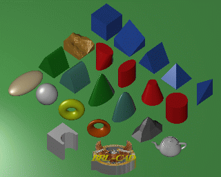
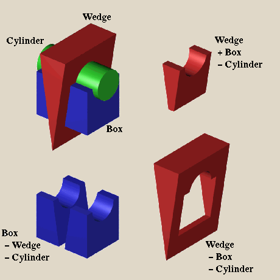
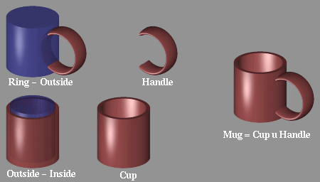
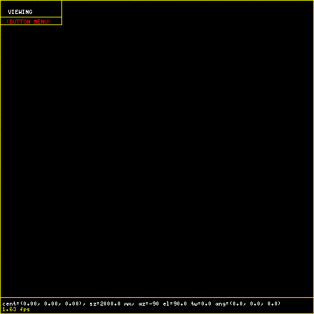
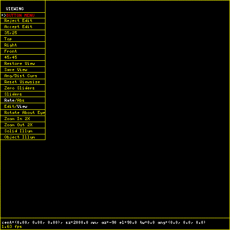
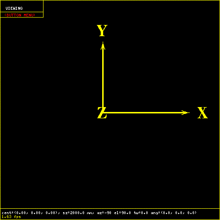

Preface
This manual is designed to get the user familiar with BRL-CAD and the facilities available for creating and using geometry. To accomplish this, we start with an introduction to the geometry editor,MGED.
Modeling With CSG
Modeling With CSG
In BRL-CAD objects are constructed using a technique known as Combinatorial Solid Geometry'' or Constructive Solid Geometry'' or simply CSG'' In the CSG approach to modeling This technique involves creating objects by combining primitive shapes together to form complex objects. The primitive shapes are called solids''. Each one occupies a volume of three dimensional space. BRL-CAD currently has many primitive solid types. These include:
| Primitive Shape | BRL-CAD Name |
|---|---|
Arbitrary Convex Polyhedron |
arbn |
Arbitrary Convex Polyhedron |
arbn |
Arbitrary Convex Polyhedron (8pt or less) |
arb |
Extruded Bitmap * |
ebm * |
Elliptical Hyperboloid |
ehy |
Ellipsoid |
ell |
Elliptical Paraboloid |
epa |
Elliptical Torus |
eto |
Halfspace |
half |
Height-Field * |
hf * |
N-Manifold Geometry * |
nmg * |
Non-Uniform Rational B-spline * |
nurb * |
particle * |
part * |
polygonal object |
polygon |
pipe * |
pipe * |
Right Elliptical Cylinder |
rec |
Right Hyperbolic Cylinder |
rhc |
Right Parabolic Cylinder |
rpc |
Sphere |
sph |
Truncated General Cone |
tgc |
Torus |
tor |
Volume/Voxel * |
vol * |
-
= Implementation known to be incomplete as of this writing

These primitives can be combined using boolean operators to create complex shapes. The three boolean operations supported are union, difference (or subtraction), and intersection. Any number of primitives may be combined to produce a shape. The union (u) of two solids is defined as the volume in either of the solids. The difference (-) of two solids is the volume of the first solid which is not in the volume of the second solid. The intersection (+) of two solids is the volume that is contained in both solids.

The result of performing a set of boolean operations is a new shape. In BRL-CAD this new shape is known as a combination''. This is frequently abbreviated as comb''. A comb'' can be further combined with other shapes to create still more complex shapes. For example, the shape of a simple cup might be created by subtracting a cylinder from a slightly larger cylinder. From this comb'' shape, the shape of a mug could be created by adding a handle. The handle might be composed of an elliptical torus with the part of the torus that would be inside the cup removed. Logically this is:
Cup = Outside - Inside Handle = Ring - Outside Mug = Cup union Handle

In this way the shape of objects are built up from components.
When the desired shape of an object is attained, a special combination called a region'' is created. A region'' represents an actual material component of the model. It represents an item which is made from a homogeneous type of material. In the example above two combinations are created: Cup and Handle. These two are brought together to form an object (Mug) which is made of a single material (such as ceramic or bone china). Material properties such as color, texture, transparency, reflectivity, etc. are assigned to regions.
The model is built up as a tree-like structure known as a Directed Acyclic Graph or DAG. It is permissible for a node to be referenced by different parts of the model. In the mug example, the solid "Outside" is a part of two different combinations: Cup and Handle. In this example the graph of the mug object looks like this:
Torus / Handle (-) / \ Mug (u) Cylinder \ / Cup -- (-) \ Insides
It is possible to refer to combinations and regions multiple times as well. For example, if a modeler were trying to create a cupboard containing three separate identical mugs, he might create a structure as follows:
Mug 1 Ring
/ \ /
/ \ Handle (-)
(u) \ / \
Mugs (u)- Mug 2--Mug (u) Outside
(u) / \ /
\ / Cup -- (-)
\ / \
Mug 3 Inside
Users familiar with other CAD software may prefer to think of the region'' as a part''. Combinations containing of regions'' may be thought of as assemblies''.
Starting MGED
The program for editing BRL-CAD geometry is called ``mged''.
All the geometry for a particular model or application is generally stored in a single file called a database. Each database may contain many different objects. By convention, the files containing BRL-CAD geometry have an extension of ``.g''.
Before starting mged the user should assure that the X-Windows DISPLAY environment variable has been properly set. This indicates where applications should display the windows they create.
We use the following conventions for denoting text:
Text typed by the user Text output by the program
To edit or create a geometry file, the user starts the mged program from the shell by giving the command:
% mged -c cup.g
The filename is required. Unlike many programs which allow the user to create a new document or database in memory, mged always keeps everything on disk. After each user command, the contents of the disk file are brought up to date. By doing this, the amount of work lost in the event of a system crash is minimized.
When mged is started, it prints out the release number and date of compilation. When multiple versions of mged are installed on a machine, this allows the user to verify that the proper version is being started.
If the file specified does not exist when mged is started, it will stop and ask if the user wishes to create a new database:
% mged -c cup.g
BRL-CAD Release 4.5 Graphics Editor (MGED)
Mon May 19 16:31:32 EDT 1997, Compilation 5377
bparker@vapor.arl.mil:/m/cad/.mged.6d
cup.g: No such file or directory
Create new database (y|n)[n]?
At this point pressing the ``y'' key followed by a return will create the new database. Any other (non-y) keys (followed by a return) will cause mged to quit without creating the database.
% mged -c cup.g
BRL-CAD Release 4.5 Graphics Editor (MGED)
Mon May 19 16:31:32 EDT 1997, Compilation 5377
bparker@vapor.arl.mil:/m/cad/.mged.6d
cup.g: No such file or directory
Create new database (y|n)[n]? y
Creating new database "cup.g"
Untitled MGED Database (units=mm)
attach (nu|X|ogl|glx)[nu]?
At this point, mged is asking what type of geometry display window you would like. The default is always nu'' for Null or no geometry display''. If you are creating geometry, it is desirable to be able to see it. The common choices are:
| Name | Display Type |
|---|---|
X |
X Windows |
glx |
Iris gl under X Windows |
ogl |
OpenGL under X Windows |
Enter one of the names listed followed by a return.
% mged -c cup.g
BRL-CAD Release 4.5 Graphics Editor (MGED)
Mon May 19 16:31:32 EDT 1997, Compilation 5377
bparker@vapor.arl.mil:/m/cad/.mged.6d
cup.g: No such file or directory
Create new database (y|n)[n]? y
Creating new database "cup.g"
Untitled MGED Database (units=mm)
attach (nu|X|ogl|glx)[nu]? ogl
mged>
At this point you should have a window that looks something like this:

When the MGED program has a display window or device attached, it displays a border around the region of the screen being used along with some ancillary status information. Together, this information is termed the editor ``faceplate''.
In the upper left corner of the window is a small enclosed area which is used to display the current editor state. The current editor state indicates whether objects are selected for editing and what modeling operations are allowed.
Underneath the state display is a zone in which three pop-up'' menus may appear. The top menu is termed the button menu,'' as it contains menu items which duplicate many functions which were originally available via an external button box peripheral. Having these frequently used functions available on a pop-up menu can greatly decrease the number of times that the user needs to remove his hand from the pointing device (either mouse or tablet puck) to reach for the buttons.
Below is an example of the faceplate and first level menu.

The second menu is used primarily for the various editing states, at which time it contains all the editing operations which are generic across all objects (scaling, rotation, and translation). The third menu contains selections for object-specific editing operations. The choices on these menus are detailed below.
Running across the entire bottom of the faceplate is a thin rectangular display area which holds two lines of text. The first line always contains a numeric display of the model-space coordinates of the center of the view and the current size of the viewing cube, both of which are displayed in the currently selected editing units. The first line also contains the current rotation rates.
The second line has several uses, depending on editor mode. In various editing states this second line will contain certain path selection information. When the angle/distance cursor function is activated, the second line will be used to display the current settings of the cursor.
All numeric interaction between the user and the editor are in terms of user-selected display units. The user may select from millimeters, centimeters, meters, inches, and feet, and the currently active display units are noted in the first display line. One important implementation detail is that all numeric values are stored in the database in millimeters. When MGED interacts with the user, it converts values from the database into the units selected by the user before displaying them. Likewise, values that the user enters are converted to millimeters before being written to the database.
The Screen Coordinate System
Objects drawn on the screen are clipped in X, Y, and Z, to the size indicated on the first status line. This creates a conceptual ``viewing cube''. Only objects inside this cube are visible. This feature allows objects within the cube to be seen, without cluttering the display with objects which are within view in X and Y, but quite far away in the Z direction. This is especially useful when the display is zoomed in on a small portion of the geometry. On some displays Z axis clipping can be selectively enabled and disabled as a viewing aid.
The MGED editor uses the standard right-handed screen coordinate system shown in the figure below.

The Z axis is perpendicular to the screen and the positive Z direction is out of the screen towards the viewer. The directions of positive (+) and negative (-) axis rotations are also indicated. For these rotations, the ``Right Hand Rule'' applies: Point the thumb of the right hand along the direction of +X axis and the other fingers will describe the sense of positive rotation.
Creating Geometry: The Cup
Let’s look at the commands needed to build the cup geometry described in the first section. The following MGED editing session contains all the commands needed to create the mug. Each command will be explained below.
% newmged Mug.g
BRL-CAD Release 4.5 Graphics Editor (MGED)
Tue May 20 10:33:44 EDT 1997, Compilation 5378
jra@vapor.arl.mil:/m/cad/.mged.6d
Mug.g: No such file or directory
Create new database (y|n)[n]? y
Creating new database "Mug.g"
Untitled MGED Database (units=mm)
attach (nu|X|ogl|glx)[nu]? ogl
mged> title MGED Tutorial Geometry
mged> units in
New editing units = 'in'
mged> in outside.s rcc
Enter X, Y, Z of vertex: 0 0 0
Enter X, Y, Z of height (H) vector: 0 0 3.5
Enter radius: 1.75
42 vectors in 0.006435 sec
mged> in inside.s rcc 0 0 0.25 0 0 3.5 1.5
42 vectors in 0.006435 sec
mged> in ring.s eto 0 2.5 1.75 1 0 0
Enter X, Y, Z, of vector C: .6 0 0
Enter radius of revolution, r: 1.45
Enter elliptical semi-minor axis, d: 0.2
2479 vectors in 0.087375 sec
mged> comb cup.c u outside.s - inside.s
mged> comb handle.c u ring.s - outside.s
mged> r mug.r u cup.c u handle.c
Defaulting item number to 1002
Creating region id=1001, air=0, los=100, GIFTmaterial=1
The first step in preparing a new database is to provide a title which describes the contents of the database. This is an important opportunity to describe the contents and purpose of the database. Setting the title is done with the title command in MGED.
mged> Title MGED Tutorial Geometry
When the database is first created, the default editing units are set to millimeters. For this example, we want to specify the dimensions of the object in inches. To arrange this, the units command
mged> units in
Now we can create our first solid. There are two techniques for creating geometry in MGED. The commands for these two techniques are make and in (for ``insert''). For precision modeling the in command offers the greatest control over the definition of the solid. This is the approach we will use.
The ``in'' command can take all of its arguments on the command line, or it will prompt you for any missing portions. Remembering what parameters need to be specified for each solid can be difficult at best. All that you really need to enter is the command name. Mged will prompt you for the rest of the parameters.
In the first example above we specify the name of the solid we are creating (outside.s'') and the type of solid to create (rcc''). Then mged prompts for the remaining arguments (vertex, height vector, and radius):
mged> in outside.s rcc Enter X, Y, Z of vertex: 0 0 0 Enter X, Y, Z of height (H) vector: 0 0 3.5 Enter radius: 1.75
For the solid inside.s'' we specify all the parameters on the command line, so mged does not prompt us for additional arguments. In the case of the solid ring.s'' we specify some, but not all of the parameters, and mged prompts us for the missing ones:
mged> in inside.s rcc 0 0 0.25 0 0 3.5 1.5 42 vectors in 0.006435 sec mged> in ring.s eto 0 2.5 1.75 1 0 0 Enter X, Y, Z, of vector C: .6 0 0 Enter radius of revolution, r: 1.45 Enter elliptical semi-minor axis, d: 0.2 2479 vectors in 0.087375 sec
As a minimal example, if we wanted to create a sphere called ball.s'' we could simply type the in'' command and let mged prompt us for everything else:
mged> in Enter name of solid: ball.s Enter solid type: sph Enter X, Y, Z of vertex: 0 0 0 Enter radius: 3 51 vectors in 0.117187 sec
The three boolean operators supported are union, subtraction and intersection. These operations are denoted by the operators u, - and + respectively. Mged uses these in a sort of prefix notation. In this notation the union operator has higher precedence than either subtraction or intersection. Hence the following boolean sequence
(A union B) subtract C is written as u A - C u B - C
The comb command creates a boolean combination. In our example we use this to create the shape of the outside of the cup called cup.s'' Reading the command above that creates cup.c, we note that cup.c is formed from the union of the volume defined by the solid outside.s'' and the subtraction of the volume defined by the solid ``inside.s''.
The r command creates a ``region''. It is just like creating a combination, but the results are a volume of one logical material type.
Assigning material properties is done with the mater or shader command. Here we define which shader should be used when rendering the object, and the parameters for the shader. The simplest shader is the ``plastic'' shader which uses a Phong lighting model. For our mug this will be fine. We specify the plastic shader and set the color to a shade of green.
mged> mater mug.r
Shader =
Shader? ('del' to delete, CR to skip) plastic
Color = (No color specified)
Color R G B (0..255)? ('del' to delete, CR to skip) 32 128 32
Inherit = 0: lower nodes (towards leaves) override
Inheritance (0|1)? (CR to skip) 0
The Inheritance option should be left 0. This option will be discussed later. Once we have created our geometry, it would be nice to look at the wireframe from a variety of angles. By clicking on the button menu box a set of options is displayed. The buttons labeled "35,25", "Top", "Right", "Front", and "45,45" offer a set of standard views.
It is possible to raytrace the current view from within mged. But to do so we need a place to display the image. We start up a framebuffer server (number 1) to accommodate this:
mged> exec fbserv 1 /dev/sgip &
This runs the fbserv'' program which will maintain a framebuffer window for us. Now we are ready to raytrace an image. First we’ll clear the geometry window of all the primitives and combinations and regions we’ve created. Then we display the region we want to raytrace with the draw'' command. Finally, we’ll select a nice viewing angle of azimuth 35 elevation 25 with the ``ae'' command.
mged> Z mged> draw mug.r mged> ae 35 25
Now we are ready to raytrace an image. The rt'' command starts the raytracer on the geometry. We must tell it where we want the pixels displayed with the -F'' option, and the size of the image with the -s option:
mged> rt -F:1 -s 512
The rt program prints a variety of information when it runs:
rt -F:0 -s 512
rt -s50 -M -F:0 -s 512 cup.g mug.r
mged> BRL-CAD Release 4.4 Ray-Tracer
Thu Jan 5 10:08:14 EST 1995, Compilation 1
mike@wilson.arl.mil:/vld/src/brlcad/rt
db title: MGED Tutorial Geometry
initial dynamic memory use=131072.
GETTREE: cpu = 0.001619 sec, elapsed = 0.004842 sec
parent: 0.0user 0.0sys 0:00real 0% 0i+0d 2100maxrss 0+27pf 0+1csw
children: 0.0user 0.0sys 0:00real 0% 0i+0d 0maxrss 0+0pf 0+0csw
Additional dynamic memory used=0. bytes
...................Frame 0...................
PREP: cpu = 0.001296 sec, elapsed = 0.003973 sec
parent: 0.0user 0.0sys 0:00real 0% 0i+0d 2100maxrss 0+7pf 1+0csw
children: 0.0user 0.0sys 0:00real 0% 0i+0d 0maxrss 0+0pf 0+0csw
Additional dynamic memory used=0. bytes
Tree: 3 solids in 1 regions
Model: X(-45,45), Y(-45,116), Z(-8,97)
View: 35 azimuth, 25 elevation off of front view
Orientation: 0.248097, 0.476591, 0.748097, 0.389435
Eye_pos: 87.6646, 90.5654, 97.5286
Size: 236.164mm
Grid: (0.461258, 0.461258) mm, (512, 512) pixels
Beam: radius=0.230629 mm, divergence=0 mm/1mm
Dynamic scanline buffering
Lighting: Ambient = 40%
Implicit light 0: (155.394, -35.3438, 49.9036), aimed at (0, 0, -1)
Implicit light 0: invisible, no shadows, 1000 lumens (83%), halfang=180
SHOT: cpu = 6.66068 sec, elapsed = 7.33342 sec
parent: 6.6user 0.0sys 0:07real 91% 0i+0d 2100maxrss 0+20pf 0+251csw
children: 0.0user 0.0sys 0:07real 0% 0i+0d 0maxrss 0+0pf 0+0csw
Additional dynamic memory used=0. bytes
154520 solid/ray intersections: 94456 hits + 60064 miss
pruned 61.1%: 151248 model RPP, 0 dups skipped, 50361 solid RPP
Frame 0: 262144 pixels in 6.66 sec = 39356.94 pixels/sec
Frame 0: 262144 rays in 6.66 sec = 39356.94 rays/sec (RTFM)
Frame 0: 262144 rays in 6.66 sec = 39356.94 rays/CPU_sec
Frame 0: 262144 rays in 7.33 sec = 35746.50 rays/sec (wallclock)
If all goes well, you will get an image of a green mug on a black background.
Now let’s improve on our basic cup. The lip of this cup looks a little too squared off. To fix this, we’ll add a rounded top to the lip. To do this we create a circular torus solid positioned at exactly the top of the cup. Then we can add it to the combination ``cup.c''.
mged> in rim.s tor 0 0 3.5 0 0 1 1.625 0.125 214 vectors in 0.001814 sec mged> comb cup.c u rim.s
Now we have a unique condition. The solid rim.s was added to the list of objects being displayed when it was created. However, now it is also a part of mug.r (via cup.c). If we raytrace the current view we will have 2 copies of this solid. The raytracer will complain that they overlap. The best way to fix this is to clear the display, redisplay the new, complete object, and then raytrace. The Z'' command clears all objects from the display. Then we can redisplay the objects we want to raytrace with the draw'' command.
mged> Z mged> draw mug.r
Since this is a frequent operation (clear the display list and draw something new) there is a shortcut:
mged> B mug.r
The ``B'' is not very easy to remember (one suggested mnemonic is "blast"), but it is quite useful. Now we are ready to raytrace again.
mged> rt -F:1 -s 512
rt -s50 -M -F:1 -s 512 mug.g mug.r
BRL-CAD Release 4.4 Ray-Tracer
Thu Jan 5 10:08:14 EST 1995, Compilation 1
mike@wilson.arl.mil:/vld/src/brlcad/rt
db title: MGED Tutorial Geometry
initial dynamic memory use=131072.
GETTREE: cpu = 0.001785 sec, elapsed = 0.005385 sec
parent: 0.0user 0.0sys 0:00real 0% 0i+0d 2152maxrss 0+31pf 0+1csw
children: 0.0user 0.0sys 0:00real 0% 0i+0d 0maxrss 0+0pf 0+0csw
Additional dynamic memory used=0. bytes
...................Frame 0...................
PREP: cpu = 0.001468 sec, elapsed = 0.004084 sec
parent: 0.0user 0.0sys 0:00real 0% 0i+0d 2152maxrss 0+7pf 1+0csw
children: 0.0user 0.0sys 0:00real 0% 0i+0d 0maxrss 0+0pf 0+0csw
Additional dynamic memory used=0. bytes
Tree: 4 solids in 1 regions
Model: X(-45,45), Y(-45,116), Z(-8,97)
View: 35 azimuth, 25 elevation off of front view
Orientation: 0.248097, 0.476591, 0.748097, 0.389435
Eye_pos: 87.6646, 90.5654, 116.579
Size: 236.164mm
Grid: (0.461258, 0.461258) mm, (512, 512) pixels
Beam: radius=0.230629 mm, divergence=0 mm/1mm
Dynamic scanline buffering
Lighting: Ambient = 40%
Implicit light 0: (155.394, -35.3438, 49.9036), aimed at (0, 0, -1)
Implicit light 0: invisible, no shadows, 1000 lumens (83%), halfang=180
SHOT: cpu = 7.26825 sec, elapsed = 7.94901 sec
parent: 7.2user 0.0sys 0:07real 92% 0i+0d 2152maxrss 0+22pf 1+270csw
children: 0.0user 0.0sys 0:07real 0% 0i+0d 0maxrss 0+0pf 0+0csw
Additional dynamic memory used=0. bytes
170747 solid/ray intersections: 99501 hits + 71246 miss
pruned 58.3%: 151252 model RPP, 0 dups skipped, 64892 solid RPP
Frame 0: 262144 pixels in 7.27 sec = 36067.02 pixels/sec
Frame 0: 262144 rays in 7.27 sec = 36067.02 rays/sec (RTFM)
Frame 0: 262144 rays in 7.27 sec = 36067.02 rays/CPU_sec
Frame 0: 262144 rays in 7.95 sec = 32978.18 rays/sec (wallclock)
Editing Solids
So far we’ve focused on creating primitive solids and combinations. Now let’s look at ways of altering and deleting things that already exist. We’ll continue with our example mug geometry. There are a number of changes that need to be made to make it more realistic.
The handle for the mug is a little awkward. It sticks out too far from the side of the mug, and it is too wide.
The bottom is perfectly flat. Any imperfection in the table top would cause it to wobble. The inside bottom corner is too sharp. We need to create a "fillet" at the seam between side and bottom.
Fixing the Handle kill handle.c kill ring.s in handle_01.s eto 0 2.25 1.25 1 0 0 .75 0.3 0 0 .15 in handle_02.s rpp -.5 .5 1 3.5 1.25 2.5 in handle_03.s rec 0 3 1.25 0 0 1.25 0.3 0 0 0 .15 0 in handle_04.s eto 0 2.25 2.5 1 0 0 .75 0.3 0 0 .15
comb handle.c u handle_01.s - handle_02.s - outside.s u handle_04.s - handle_02.s - outside.s u handle_03.s
Adding a Base
mvall outside.s outside_01.s in outside_02.s tor 0 0 0 0 0 1 1.6875 .0625 comb cup.c u outside_02.s in outside_03.s rcc 0 0 0 0 0 -.2 1.6875 comb cup.c u outside_03.s in outside_04.s tor 0 0 -.2 0 0 1 1.6875 .1375 comb cup.c - outside_04.s in outside_05.s ellg 0 0 -.2 1.5 0 0 0 1.5 0 0 0 .15 comb cup.c - outside_05.s center 0 0 0 size 4 ae 170 -52 120 rt -s 512 -F :1
Adding a fillet
mvall inside.s inside.c mv inside.c inside_01.s solid edit bottom of inside_01.s up to 0 0 0.3125 in inside_02.s tor 0 0 .3125 0 0 1 1.4375 0.0625 in inside_03.s rcc 0 0 0.25 0 0 0.125 1.4375 comb inside.c u inside_01.s u inside_02.s u inside_03.s B mug.r ae 35 85 size 5 rt -s 512 -F :1
MGED’s New Graphical User Interface
MGED’s New Graphical User Interface
-
Make Solid arb8, arb7, arb6, arb5, arb4, sph, grip, ell, ellg, tor, tgc, tec, rec, trc, rcc, half, rpc, rhc, epa, ehy, eto, part, nmg, pipe
Getting Started
mged [-c] [-d display] [-h] [-r] [-x#] [-X#] [database [command]]
The -c (Classic MGED) option causes MGED to start in the style of previous versions of MGED, that is, by prompting the user to select a display manager to attach and by remaining attached to the tty. Without this option MGED will detach itself from the tty and bring up the new GUI. The -d option provides a way to specify a display string. This string is expected to be in the same format as the X DISPLAY environment variable. The -h option causes the help message to print out. The -r option causes the database to be read-only (i.e. no editing allowed). The -x and -X options provide a way for the user to specify the debug level of librt and libbu, respectively. Note that if MGED is started by redirecting stdin or stdout, MGED will not enter interactive mode. Similarly, if MGED is started with a command, that command will be executed and MGED will exit. If the user starts MGED in “’Classic”’ mode, the new GUI is still available via the gui command. There can be many instances of the GUI running at the same time. Each instance of the GUI owns four display manager windows (panes) and by default each of these panes has its view initialized as follows:
| Pane | Azimuth and Elevation |
|---|---|
upper left |
0 90 |
upper right |
35 25 |
lower left |
0 0 |
lower right |
90 0 |
All four panes can be displayed simultaneously, or a single large pane containing the active pane can be displayed (look in the “’Modes”“menu). The active pane is the pane that is controlled by the GUI. The active pane can be changed from the”“Settings”“menu, or by certain key or mouse button actions. Essentially, any key sequence or mouse button action that will pop up an MGED menu in the pane will cause the active pane to move to the pane wherein this action occurred. For example, alt-f will pop up the file menu and make this pane the active pane. Similarly, alt-Button1 will pop up the”“Settings”“menu and alt-Button2 will pop up the”“Modes”’ menu.
The new GUI also provides “’Help on Context”“. This is always available via the right mouse button (i.e. button 3). The user can right mouse click on some feature of the GUI and a message window pops up with information about the feature. This behavior works everywhere except in the drawing panes (i.e. display manager windows) where a right mouse button is bound to”“zoom 2.0”’.
There are many new features and improvements in MGED providing greater access to its underlying power. The single greatest improvement to MGED is the incorporation of Tcl/Tk. Tcl (tool command language) is an interpreted command language that can be embedded into an application providing the application with an interpreter as well as a built-in command language. Tk is an extension to Tcl for building GUI’s. Incorporating Tcl/Tk into MGED gives the user the ability to develop their own commands and GUI’s. Other new features are: command line editing similar to tcsh, multiple display managers opened simultaneously, shareable resources among display managers, view axes, model axes, edit axes, rubber banding for zoom or raytracing, support for color schemes, frame buffer support for display managers, snap to grid for accuracy with the mouse, query rays for interrogating the geometry, and improved solid/object/combination selection from among displayed geometry.
Command Window
The main function of the command window is to allow the user to enter commands. The command window supports command line editing and command history. The two supported command line edit modes are emacs and vi. Look under File/ Preferences/Command_Line_Edit to change the edit mode.
There are also two command interpretation modes. One is where MGED performs object name matching (i.e. globbing against the database) before passing the command line to MGED’s built-in Tcl interpreter. This is the same behavior seen in previous releases. The other command interpretation mode (Tcl Evaluation) passes the command line directly to the Tcl interpreter. Look under File/Preferences/ Special_Characters to change the interpretation mode.
The command window also supports cut and paste as well as text scrolling. The default bindings for these operations are similar to those found in typical X Window applications such as xterm. For example:
| Key-Button Sequence | Action |
|---|---|
ButtonPress-1 |
begin text selection |
ButtonRelease-1 |
end text selection |
Button1-Motion |
add to text selection |
Shift-Button1 |
modify text selection |
Double-Button-1 |
select word |
Triple-Button-1 |
select line |
ButtonPress-2 |
begin text operation |
ButtonRelease-2 |
paste text |
Button2-Motion |
scroll text |
Note - If motion was detected while Button2 was being pressed, no text will be pasted. In this case, it is assumed that scrolling was the intended operation. Of course, the user can also scroll the window using the scrollbar.
Panes (Display Manager Windows)
A pane is a place wherein solids/objects are drawn. Here the user can interact, via the mouse and/or keyboard, with the panes view or with solids/objects that are being edited. The user can also access menus from the menu bar from within the pane.
Shift Grips
MGED offers the user a unified mouse-based interface for “grabbing” things and manipulating them. Since it was built for compatibility on top of the older interface:
Mouse Button
View Operation
Mouse button
View operation
Button-1
Zoom out
Button-2
Recenter view at the specified point
Button-3
Zoom in
it uses the modifier keys: Shift, Control, and Alt. This use of modified mouse clicks to grab things is called the “shift-grip” interface. The Shift and Control keys are assigned in combinations to the three basic transformation operations as follows:
Modifier Key
Transformation Operation
Shift
Translate
Ctrl
Rotate
Shift & Ctrl
Scale
and the Alt key is assigned the meaning “constrained transformation,” which is described below. Thus, in general, holding the Shift key and a mouse button down and moving the mouse drags things around on the screen. The Control key and a mouse button allow one to rotate things, and the combination of Shift, Control, and a mouse button allow one to expand and contract things. These general functionalities are consistent throughout MGED, providing a unified interface. The precise meanings of “drag things around,” “rotate things,” and “expand and contract things” depends on the operating context.
When one is merely viewing geometry the shift grips apply by default to the view itself. Thus they amount to panning, rotating, and zooming the eye relative to the geometry being displayed. When one is in solid-edit or matrix-edit mode (what used to be called object-edit mode), the shift grips apply by default to the model parameters. In this case, they modify the location, orientation, or size of object features or entire objects in the database.
The default behaviors in the viewing and editing modes may be overridden by the “Transform” item in the “Settings” menu. This allows the user to specify that the shift grips should transform the view, the model parameters (if one is currently editing a solid or matrix) or the angle-distance cursor (in which case the mouse may be used to position the ADC, to change its angles, and to expand and contract its distance ticks). The behavior of the shift grips may be further changed by the “Rotate About” item in the “Settings” menu, which allows the user to specify the point about which shift-grip rotations should be performed. The choices include the view center, the eye, the model origin, and an object’s key point.
CONSTRAINED TRANSFORMATIONS
When the Alt key is held down along with either of the Shift and Control keys the transformations are constrained to a particular axis. For such constrained transformations the mouse buttons have the following meanings:
| Mouse Button | Axis |
|---|---|
Button-1 |
x |
Button-2 |
y |
Button-3 |
z |
Thus, if the view is being transformed, Alt-Shift-Button-1 allows one to drag the objects being viewed left to right along the view-x axis. Similarly, if the model parameters are being transformed, Alt-Ctrl-Button-2 allows one to rotate the object about a line passing through the rotate-about point (as described above) and parallel to a y-axis. The coordinate system to which these transformations are constrained may be specified by the “Constraint Coords” item in the “Settings” menu, which allows the selection of any one of the model, view, and object coordinate systems.
Besides the default mouse button bindings described above, the user can access the “’Settings”“menu with alt-Button1 and the”“Modes”’ menu with alt-Button2.
Default Key Bindings
MGED offers the user “’short cuts”’ to much of the functionality available via the menus as well as the command line interface. The table below lists the default key bindings:
| Key Sequence | Behavior |
|---|---|
a |
toggle angle distance cursor (ADC) |
e |
toggle edit axes |
m |
toggle model axes |
v |
toggle view axes |
i |
advance illumination pointer forward |
I |
advance illumination pointer backward |
p |
simulate mouse press (i.e. to pick a solid) |
3 |
view - ae 35 25 |
4 |
view - ae 45 45 |
f |
front view |
t |
top view |
b |
bottom view |
l |
left view |
r |
right view |
R |
rear view |
s |
enter solid illumination state |
o |
enter object illumination state |
q |
reject edit |
u |
zero knobs and sliders |
N |
shoot a ray with nirt |
< F1 > |
toggle depthcue |
< F2 > |
toggle zclipping |
< F3 > |
toggle perspective |
< F4 > |
toggle zbuffer |
< F5 > |
toggle lighting |
< F6 > |
toggle perspective angle |
< F7 > |
toggle faceplate |
< F8 > |
toggle Faceplate GUI |
< F9 > |
toggle keystroke forwarding |
< F12 > |
zero knobs |
< Left > |
rotate about y axis |
< Right > |
rotate about y axis |
< Down > |
rotate about x axis |
< Up > |
rotate about x axis |
< Shift-Left > |
translate in X direction |
< Shift-Right > |
translate in X direction |
< Shift-Down > |
translate in Z direction |
< Shift-Up > |
translate in Z direction |
< Control-Shift-Left > |
rotate about z axis |
< Control-Shift-Right > |
rotate about z axis |
< Control-Shift-Down > |
translate in Y direction |
< Control-Shift-Up > |
translate in Y direction |
< Control-n > |
goto next view |
< Control-p > |
goto previous view |
< Control-t > |
toggle between the current view and the last view |
< Escape > |
stop interactive rotation, reject edits, reset mouse behavior |
Besides the default key bindings listed above, the user can access menu items with “’alt-key”“sequences. For example, the”“File”“menu can be popped up with alt-f. The raytrace control panel can then be popped up by typing”“r”“(i.e.”“R”“is underlined in the”’Raytrace…" menu item).
Control Panels
ADC Control Panel
The ADC Control Panel is a tool for setting ADC parameters.
Grid Control Panel
The Grid Control Panel is a tool for setting grid parameters.
Query Ray Control Panel
The Query Ray Control Panel is a tool for setting query ray parameters.
Raytrace Control Panel
The Raytrace Control Panel is a tool for setting raytrace parameters.
AnimMate Control Panel
Solid Editor
The Solid Editor is a tool for editing solids.
Solid Editor (Internal)
The Solid Editor is a tool for editing MGED’s internal solid (i.e. held in es_int while in solid edit state). The internal solid is the in-memory copy of a solid that is being edited.
Combination Editor
Color Editor
The Color Editor is a tool for specifying colors in either RGB or HSV.
Status Bar
The status bar contains two lines for displaying information about the state of the active pane. The first line contains information about the view center, view size, local units, azimuth, elevation, twist, and rate of rotation about the x, y and z axes. The second line can contain several different things depending on the state. If the angle distance cursor is being drawn, information about its parameters are displayed. Specifically, angle 1, angle 2, tick distance, center and delta are displayed. Otherwise, if in the VIEWING state, the frames per second is displayed. If in SOL PICK or OBJ PICK state, the full path of the illuminated solid is displayed. If in OBJ PATH state, the full path of the previously selected solid is displayed along with an indication of which matrix along the path will be edited. And finally, if in either SOL EDIT or OBJ EDIT state the keypoint is displayed.
Menu Bar
-
File
-
New- open a new database. Note - the database must not already exist.
-
Open- open an existing database.
-
Insert- insert another database into the current database.
-
Extract- a tool for extracting objects out of the current database. This tool consists of an entry for specifying the destination file and an entry for specifying the objects to be extracted.
-
g2asc- converts the current database into an ascii file.
-
Raytrace- pops up the raytrace control panel.
-
Save View As
-
RT script - saves the current view as an RT script file.
-
Plot- saves the current view as a plot file.
-
PostScript- saves the current view a postscript file.
-
Preferences
-
Units
-
micrometers - set the unit of measure to micrometers. 1 micrometer = 1/1,000,000 meters
-
millimeters- set the unit of measure to millimeters. 1 millimeter = 1/1000 meters
-
centimeters- set the unit of measure to centimeters. 1 centimeter = 1/100 meters
-
meters- set the unit of measure to meters.
-
kilometers- set the unit of measure to kilometers. 1 kilometer = 1000 meters
-
inches- set the unit of measure to inches. 1 inch = 25.4 mm
-
feet- set the unit of measure to feet. 1 foot = 12 inches.
-
yards- set the unit of measure to yards. 1 yard = 36 inches.
-
miles- set the unit of measure to miles. 1 mile = 5280 feet.
-
Special Characters
-
Tcl Evaluation - set the command interpretation mode to Tcl mode. In this mode, globbing is not performed against MGED database objects. Rather, the command string is passed, unmodified, to the Tcl interpreter.
-
Object Name Matching - set the command interpretation mode to MGED object name matching. In this mode, globbing is performed against MGED database objects.
-
Color Schemes - pops up a tool for setting colors used by drawing panes (display managers).
-
Close - close this instance of the MGED GUI.
-
Exit - exits MGED.
-
Edit
-
Solid Selection - pops up a tool for selecting a solid to edit.
-
Matrix Selection - pops up a tool for selecting a matrix to edit. Solid Editor - pops up a tool for creating and editing solids. Combination Editor - pops up a tool for creating and editing combinations.
-
Create
-
Make Solid - gives the user a pulldown menu from which to select a solid to create. The following is a list of the available solid types that the make command can create: arb8, arb7, arb6, arb5, arb4, sph, grip, ell, ellg, tor, tgc, tec, rec, trc, rcc, half, rpc, rhc, epa, ehy, eto, part, nmg, pipe.
-
Solid Editor - pops up a tool for creating and editing solids.
-
Combination Editor - pops up a tool for creating and editing combinations.
-
View
-
Top - view of the top (i.e. azimuth = 270, elevation = 90)
-
Bottom - view of the bottom (i.e. azimuth = 270, elevation = -90)
-
Right - view of the right (i.e. azimuth = 270, elevation = 0)
-
Left - view of the left (i.e. azimuth = 90, elevation = 0)
-
Front - view of the front (i.e. azimuth = 0, elevation = 0)
-
Rear - view of the rear (i.e. azimuth = 180, elevation = 0)
-
az35,el25 - an oblique view (i.e. azimuth = 35, elevation = 25)
-
az45,el45 - an oblique view (i.e. azimuth = 45, elevation = 45)
-
Zoom In - zoom in by a factor of 2.
-
Zoom Out - zoom out by a factor of 2.
-
Default - same view as top (i.e. azimuth = 270, elevation = 90)
-
Multipane Defaults - sets the view of all four panes to their defaults.
Multipane Defaults Pane Azimuth Elevation upper left
90
0
upper right
35
25
lower left
0
0
lower right
90
0
-
Zero - stops all rate transformations.
-
ViewRing A view ring is simply a dynamic list of views owned by a pane (display manager). This mechanism supports multiple views within a single pane. A view consists of a position in model space, a view size and an orientation.
-
Add View - Adds a view to the view ring.
-
Select View - a pulldown menu that lists the views in the view ring that can be selected.
-
Delete View - a pulldown menu that lists the views in the view ring that can be deleted.
-
Next View - go to the next view on the view ring.
-
Prev View - go to the previous view on the view ring.
-
Last View - go to the last view. This can be used to toggle between two arbitrary views.
-
Settings
-
Mouse Behavior - a menu for selecting among the available mouse behaviors.
-
Default - enter the default MGED mouse behavior mode. In this mode, the user gets mouse behavior that is the same as MGED 4.5 and earlier.
Default Mouse Button Behavior 1
zoom out by a factor of 2
2
center view, or some edit action if in an edit state
3
zoom in by a factor of 2
-
Pick edit-solid - enter pick edit-solid mode. In this mode, the mouse is used to fire rays for selecting a solid to edit. If more than one solid is hit, a listbox of the hit solids is presented. The user then selects a solid to edit from this listbox. If a single solid is hit, it is selected for editing. If no solids were hit, a dialog is popped up saying that nothing was hit. The user must then fire another ray to continue selecting a solid. When a solid is finally selected, solid edit mode is entered. When this happens, the mouse behavior mode is set to default mode. Note - When selecting items from a listbox, a left buttonpress highlights the solid in question until the button is released. To select a solid, double click with the left mouse button.
Commands Mouse Button Behavior 1
Zoom out by a factor of 2
2
Fire edit-solid ray
3
Zoom in by a factor of 2
-
Pick edit-matrix - enter pick edit-matrix mode. In this mode, the mouse is used to fire rays for selecting a matrix to edit. If more than one solid is hit, a listbox of the hit solids is presented. The user then selects a solid from this listbox. If a single solid is hit, that solid is selected. If no solids were hit, a dialog is popped up saying that nothing was hit. The user must then fire another ray to continue selecting a matrix to edit. When a solid is finally selected, the user is presented with a listbox consisting of the path components of the selected solid. From this listbox, the user selects a path component. This component determines which matrix will be edited. After selecting the path component, object/matrix edit mode is entered. When this happens, the mouse behavior mode is set to default mode. Note - When selecting items from a listbox, a left buttonpress highlights the solid/matrix in question until the button is released. To select a solid/matrix, double click with the left mouse button.
Commands Mouse Button Behavior 1
Zoom out by a factor of 2
2
Fire edit-matrix ray
3
Zoom in by a factor of 2
-
Pick edit-combination - enter pick edit-combination mode. In this mode, the mouse is used to fire rays for selecting a combination to edit. If more than one combination is hit, a listbox of the hit combinations is presented. The user then selects a combination from this menu. If a single combination is hit, that combination is selected. If no combinations were hit, a dialog is popped up saying that nothing was hit. The user must then fire another ray to continue selecting a combination to edit. When a combination is finally selected, the combination edit tool is presented and initialized with the values of the selected combination. When this happens, the mouse behavior mode is set to default mode. Note - When selecting items from a menu, a left buttonpress highlights the combination in question until the button is released. To select a combination, double click with the left mouse button.
Commands Mouse Button Behavior 1
Zoom out by a factor of 2
2
Fire edit-combination ray
3
Zoom in by a factor of 2
-
Sweep raytrace-rectangle - enter sweep raytrace-rectangle mode. If the framebuffer is active, the rectangular area as specified by the user is raytraced. The rectangular area is also painted with the current contents of the framebuffer. Otherwise, only the rectangle is drawn.
Command Mouse Button Behavior 1
Zoom out by a factor of 2
2
Draw raytrace-rectangle
3
Zoom in by a factor of 2
-
Pick raytrace-object(s) - enter pick raytrace-object mode. In this mode, the user can pick an object for raytracing or for adding to the list of objects to be raytraced.
-
Query ray - enter query ray mode. In this mode, the mouse is used to fire rays. The data from the fired rays can be viewed textually, graphically or both.
Commands Mouse Button Behavior 1
Zoom out by a factor of 2
2
Fire query ray
3
Zoom in by a factor of 2
-
Sweep paint-rectangle - enter sweep paint-rectangle mode. If the framebuffer is active, the rectangular area as specified by the user is painted with the current contents of the framebuffer. Otherwise, only the rectangle is drawn.
commands Mouse Button Behavior 1
Zoom out by a factor of 2
2
Draw paint rectangle
3
Zoom in by a factor of 2
-
* *Transform - a menu for selecting a transform mode. The transform mode determines what will be transformed when using the mouse.
Commands Mouse Button Behavior 1
Zoom out by a factor of 2
2
Draw zoom-rectangle
3
Zoom in by a factor of 2
-
View - set the transform mode to VIEW. When in VIEW mode, the mouse can be used to transform the view. This is the default.
-
ADC - set the transform mode to ADC. When in ADC mode, the mouse can be used to transform the angle distance cursor while the angle distance cursor is being displayed. If the angle distance cursor is not being displayed, the behavior is the same as VIEW mode.
-
Model Params - set the transform mode to Model Params. When in Model Params mode, the mouse can be used to transform the model parameters.
-
Constraint Coords - a menu for selecting a coordinate system to use while performing constrained transformations with the mouse.
-
Model - constrained transformations will use model coordinates.
-
View - constrained transformations will use view coordinates.
-
Object - constrained transformations will use object coordinates.
-
Rotate About - a menu for selecting the point about which to rotate.
-
View Center - set the center of rotation to be about the view center.
-
Eye - set the center of rotation to be about the eye.
-
Model Origin - set the center of rotation to be about the model origin.
-
Key Point - set the center of rotation to be about the key point.
-
Active Pane - a menu for selecting the active pane. The active pane is the pane (display manager) that is tied to the GUI, effectively becoming the target of GUI interactions that affect panes. In other words, if the user types the command, “’ae 35 25”“in the command window, and the active pane is the upper left pane, then its” view orientation will become azimuth=35 and elevation=25. Similarly, if the user selects Settings/Grid/Draw_Grid from the pulldown menus the drawing of the grid will be toggled in the active pane.
-
Upper Left - set the active pane to be the upper left pane. Any interaction with the GUI that affects a pane will be directed at the upper left pane.
-
Upper Right - set the active pane to be the upper right pane. Any interaction with the GUI that affects a pane will be directed at the upper right pane.
-
Lower Left - set the active pane to be the lower left pane. Any interaction with the GUI that affects a pane will be directed at the lower left pane.
-
Lower Right - set the active pane to be the lower right pane. Any interaction with the GUI that affects a pane will be directed at the lower right pane.
-
Apply To - a menu for selecting the “’Apply To”’ mode. This further specifies what pane(s) will be affected by actions that affect panes.
-
Active Pane - set the “’Apply To”’ mode such that the user’s interaction with the GUI is applied to the active pane.
-
Local Panes - set the “’Apply To”’ mode such that the user’s interaction with the GUI is applied to all panes local to this instance of the GUI.
-
Listed Panes - set the “’Apply To”’ mode such that the user’s interaction with the GUI is applied to all panes listed in the Tcl variable mged_gui(id,apply_list) (Note - id refers to the GUI’s id).
-
All Panes - set the “’Apply To”’ mode such that the user’s interaction with the GUI is applied to all panes.
-
Query Ray Effects - a menu for selecting the effects the user will see as a result of firing a query ray.
-
Text - set qray effects mode to “’text”’. In this mode, only textual output is used to represent the results of firing a query ray.
-
Graphics - set qray effects mode to “’graphics”’. In this mode, only graphical output is used to represent the results of firing a query ray.
-
both - set qray effects mode to “’both”’. In this mode, both textual and graphical output is used to represent the results of firing a query ray.
-
Grid - a menu of grid related settings. A grid is a lattice of points over the pane. The regular spacing between the points gives the user accurate visual cues regarding dimension. After setting the anchor point and grid spacing, the user can use snapping to gain a high degree of accuracy while using the mouse.
-
Anchor - this pops up an entry dialog for specifying the grid anchor point. The grid anchor point is a point such that when the grid is drawn one of its points must be located exactly at the anchor point. The anchor point is specified using model coordinates and local units.
-
Draw Grid - toggles drawing the grid.
-
Snap To Grid - toggles snapping to grid points. When snapping to grid points is active, the user’s mouse actions are “’snapped”’ to the nearest grid point before being further processed. This gives the user a high degree of accuracy while using the mouse.
-
Grid Spacing - a menu for selecting “’canned”’ grid spacings. Note - all of these selections will result in a square grid.
-
Autosize - set the grid spacing according to the current view size. The number of ticks will be between 20 and 200 in user units. The major spacing will be set to 10 ticks per major. ole="par
-
Arbitrary - pops up the grid spacing entry dialog. The user can use this to set both the horizontal and vertical tick spacing.
-
micrometer - set the horizontal and vertical tick spacing to 1 micrometer.
-
millimeter - set the horizontal and vertical tick spacing
-
centimeter - set the horizontal and vertical tick spacing to 1 millimeter.
-
decimeter - set the horizontal and vertical tick spacing to 1 decimeter.
-
12 meter - set the horizontal and vertical tick spacing to 1 meter.
-
kilometer - set the horizontal and vertical tick spacing to 1 kilometer.
-
1/10 inch - set the horizontal and vertical tick spacing to 1/10 inches.
-
1/4 inch - set the horizontal and vertical tick spacing to 1/4 inches.
-
1/2 inch - set the horizontal and vertical tick spacing to 1/2 inches.
-
inch - set the horizontal and vertical tick spacing to 1 inch.
-
foot - set the horizontal and vertical tick spacing to 1 foot.
-
yard - set the horizontal and vertical tick spacing to 1 yard.
-
mile - set the horizontal and vertical tick spacing to 1 mile.
-
Framebuffer - a menu of framebuffer related settings.
-
All - use the entire pane for the framebuffer.
-
Rectangle Area - use only the specified rectangular area of the framebuffer.
-
Overlay - put the framebuffer in overlay mode. In this mode, the framebuffer data is placed in the pane after the geometry is drawn (i.e. the framebuffer data is is drawn on top of the geometry).
-
Underlay - put the framebuffer in underlay mode. In this mode, the framebuffer data is placed in the pane before the geometry is drawn (i.e. the geometry is drawn on top of the framebuffer data).
-
Framebuffer Active - this toggles the framebuffer.
-
Listen For Clients - this toggles listening for clients. If the framebuffer is listening for clients, new data can be passed into the framebuffer. Otherwise, the framebuffer is write protected. Actually, it is also read protected. In other words, in order for programs outside of MGED to communicate with any of MGED’s framebuffers, the intended framebuffers must be listening.
-
View Axes Position - a menu of “’canned”’ view axes positions.
-
Center - locate the view axes in the center of the active pane.
-
Lower Left - locate the view axes in the lower left corner of the active pane.
-
Upper Left - locate the view axes in the upper left corner of the active pane.
-
Upper Right - locate the view axes in the upper right corner of the active pane.
-
Lower Right - locate the view axes in the lower right corner of the active pane.
-
Modes
-
Draw Grid - toggle drawing the grid. The grid is a lattice of points over the pane (display manager). The regular spacing between the points gives the user accurate visual cues regarding dimension. This spacing can be set by the user.
-
Snap To Grid - toggles snapping to grid points. When snapping to grid points is active, the user’s mouse actions are “’snapped”’ to the nearest grid point before being further processed. This gives the user a high degree of accuracy while using the mouse.
-
Framebuffer Active - this toggles the framebuffer.
-
Listen For Clients this toggles listening for clients. If the framebuffer is listening for clients, new data can be passed into the framebuffer. Otherwise, the framebuffer is write protected. Actually, it is also read protected. In other words, in order for programs outside of MGED to communicate with any of MGED’s framebuffers, the intended framebuffers must be listening.
-
Persistent sweep rectangle - this toggles drawing the rectangle while idle. For example, if the sweep rectangle is not persistent, the rectangle will not be drawn unless the user is actively sweeping out a rectangle (i.e. for raytracing, zoom etc.). And if the sweep rectangle is persistent, the rectangle will always be drawn.
-
Angle/Dist Cursor - toggles drawing the angle distance cursor.
-
Faceplate - toggles drawing the “’Classic MGED”’ faceplate.
-
Axes - a menu of axes
-
View - toggle display of the view axes. The view axes are used to give the user visual cues indicating the current view of model space. These axes are drawn the same as the model axes, except that the view axes’ position is fixed in view space. This position as well as other characteristics can be set by the user using rset.
-
Model - toggle display of the model axes. The model axes are used to give the user visual cues indicating the current view of model space. The model axes are by default located at the model origin and are fixed in model space. So, if the user transforms the view, the model axes will move with respect to the view. The model axes position as well as other characteristics can be set by the user using rset.
-
Edit - toggle display of the edit axes. The edit axes are used to give the user visual cues indicating how the edit is progressing. They consist of a pair of axes. One remains unmoved, while the other moves to indicate how things have changed. Characteristics of the edit axes can be changed using rset.
-
Multipane - toggle between multipane and single pane mode. In multipane mode there are four panes, each with its own state.
-
Edit Info - Toggle display of edit information. If in solid edit state, the edit information is displayed in the internal solid editor. This editor, as its name implies, can be used to edit the solid as well as to view its contents. If in object edit state, the object information is displayed in a dialog box.
-
Status Bar - toggle display of the command window’s status bar.
-
Collaborate - toggle collaborate mode. When in collaborate mode, the upper right pane’s view can be shared with other instances of MGED’s new GUI that are also collaborating.
-
Rateknobs - toggle rate knob mode. When in rate knob mode, transformation with the mouse becomes rate based. For example, if the user rotates the view about the X axis, the view continues to rotate about the X axis until the rate rotation is stopped.
-
Display Lists - toggle the use of display lists. This currently affects only Ogl display managers. When using display lists the screen update time is significantly faster. This is especially noticeable when running MGED remotely. Use of display lists is encouraged unless the geometry being viewed is bigger than the Ogl server can handle (i.e. the server runs out of available memory for storing display lists). When this happens the machine will begin to swap (and little else). If huge pieces of geometry need to be viewed, consider toggling off display lists. Note that using display lists while viewing geometry of any significant size will incur noticeable compute time up front to create the display lists.
-
Misc
-
Z Clipping - toggles zclipping. When zclipping is active, the Z value of each point is checked against the min and max Z values of the viewing cube. If the Z value of the point is found to be outside this range, it is clipped (i.e. not drawn). Zclipping can be used to remove geometric detail that may be occluding geometry of greater interest.
-
Perspective - toggles perspective_mode.
-
Faceplate - toggles drawing the “’Classic MGED”’ faceplate.
-
Faceplate GUI - toggles drawing the “’Classic MGED”’ user interface (i.e. faceplate menu and scrollbars)
-
Keystroke Forwarding - toggles keystroke forwarding. When keystroke forwarding is active, any key events get forwarded to the command window for processing as if the user was typing directly into the command window. This behavior can often save the user time by not having to move the mouse out of the geometry window in order to type commands. The effects of any commands apply to the pane wherein the command was entered, regardless of whether or not this pane is the active pane.
-
Depth Cueing - toggles depth cueing. When depth cueing is active, lines that are farther away appear more faint.
-
Z Buffer - toggles Z buffer.
-
Lighting - toggles lighting.
-
Tools
-
ADC Control Panel - pops up a tool for controlling the angle distance cursor.
-
Grid Control Panel - pops up a tool for setting grid parameters.
-
Query Ray Control Panel - pops up a tool for setting query ray parameters.
-
Raytrace Control Panel - pops up a tool for raytracing.
-
Solid Editor - pops up a tool for creating and editing solids.
-
Combination Editor - pops up a tool for creating and editing combinations.
-
Color Editor - pops up a tool for defining a color
-
Command Window - this is a convenience button that raises the command window.
-
Geometry Window - this is a convenience button that raises the geometry window.
-
Help
-
About MGED
-
Help on context - The new GUI provides “’Help on Context”“. This is always available via the right mouse button (i.e. button 3). The user can right mouse click on some feature of the GUI and a message window pops up with information about the feature. This behavior works everywhere except in the drawing panes (i.e. display manager windows) where a right mouse button is bound to”“zoom 2.0”’.
-
Commands - pops up a tool for getting information on MGED’s commands.
-
Apropos - pops up a tool for searching for information about MGED’s commands.
-
Manual - start a tool for browsing the online MGED manual. The web browser that gets started is dependent, first, on the WEB_BROWSER environment variable. If this variable exists and the browser identified by this variable exists, then that browser is used. Failing that the browser specified by the mged_default(web_browser) Tcl variable is tried. As a last resort, the existence of /usr/bin/netscape, /usr/local/bin/netscape and /usr/X11/bin/netscape is checked. If a browser has still not been located, the built-in Tcl browser is used.
Command Line Editing
Emacs Bindings
Key Sequence Function BackSpace backward delete character Delete backward delete character Left backward character Right forward character Up previous command Down next command Home beginning of line End end of line C-a move to beginning of line C-b move back one character C-c interrupt C-d delete character at cursor C-e move to end of line C-f move forward one character C-h backward delete character C-k delete to end of line C-n next history command C-p previous history command C-t transpose characters C-u delete whole line C-w backward delete word
VI Bindings
Insert and Command Mode
Key Sequence Function Delete backward delete character Up previous command Down next command Home beginning of line End end of line Control-a beginning of line Control-b backward character Control-c interrupt command Control-e end of line Control-f forward character Control-h backward delete character Control-k delete end of line Control-n next command Control-p previous command Control-t transpose Control-u delete to beginning of line Control-w backward delete word
Insert Mode
Key Sequence Function Escape command Left backward character, command Right forward character, command BackSpace backward delete character
Command Mode
Key Sequence Function Left backward character Right forward character BackSpace backward character Space forward character A end of line, insert (i.e. append to end of line) C delete to end of line, insert D delete to end of line F search backward character I beginning of line, insert R overwrite X backward delete character 0 beginning of line $ end of line ; continue search in same direction , continue search in opposite direction a forward character, insert (i.e. append) b backward word c change d delete e end of word f search forward character h backward character i insert j next command k previous command l forward character r replace character s delete character, insert w forward word x delete character
MGED User Commands
MGED User Commands
q |
||||
** |
%:: Start a “/bin/sh” shell process for the user. The mged prompt will be replaced by a system prompt for the shell, and the user may perform any legal shell commands. The mged process waits for the shell process to finish, which occurs when the user exits the shell. This only works in a command window associated with a tty (i.e., the window used to start mged in classic mode).
- Examples
-
mged> %
– Start a new shell process.
$ ls -al – Issue any shell commands.
``
$ exit – Exit the shell.
mged> – Continue editing in mged.
**
- 3ptarb [arb_name x1 y1 z1 x2 y2 z2 x3 y3 z3 x|y|z coord1 coord2 thickness]
-
Build an ARB8 shape by extruding a quadrilateral through a given thickness. The arguments may be provided on the command line; if they are not, they will be prompted for. The x1, y1, and z1 are the coordinates of one corner of the quadrilateral. x2, y2, z2, and x3, y3, z3 are the coordinates of two other corners. Only two coordinates of the fourth point are specified, and the code calculates the third coordinate to ensure all four points are coplanar. The x|y|z parameter indicates which coordinate of the fourth point will be calculated by the code. The coord1 and coord2 parameters supply the other two coordinates. The direction of extrusion for the quadrilateral is determined from the order of the four resulting points by the right-hand rule; the quadrilateral is extruded toward a viewer for whom the points appear in counter-clockwise order.
- Examples
-
mged> 3ptarb
– Start the 3ptarb command.
Enter name for this arb: thing – The new ARB8 will be named thing.
Enter X, Y, Z for point 1: 0 0 0 – Point one is at the origin.
Enter X, Y, Z for point 2: 1 0 0 – Point two is at (1, 0, 0).
Enter X, Y, Z for point 3: 1 1 0 – Point three is at (1, 1, 0).
Enter coordinate to solve for (x, y, or z): z – The code will calculate the z coordinate of the fourth point.
Enter the X, Y coordinate values: 0 1 – The x and_y_ coordinates of the fourth point are 0 and 1.
mged> 3ptarb thing 0 0 0 1 0 0 1 1 0 z 0 1 3 – Same as above example, but with all arguments supplied on the command line.
**
?:: Provide a list of available mged commands. The ?devel, ?lib, help, helpdevel, and helplib commands provide additional information on available commands.
- Examples
-
mged> ?
– Get a list of available commands.
**
- Examples
-
mged> ?devel
– Get a list of available developer commands.
**
- Examples
-
mged> ?lib
– Get a list of available BRL-CAD library interface commands.
**
- B [-R -A -o -s C#//] <objects | attribute name/value pairs>
-
Clear the mged display of any currently displayed objects, then display the list of objects provided in the parameter list. Equivalent to the Z command followed by the command draw <objects>. The -C option provides the user a way to specify a color that overrides all other color specifications including combination colors and region id-based colors. The -A and -o options allow the user to select objects by attribute. The -s option specifies that subtracted and intersected objects should be drawn with solid lines rather than dot-dash lines. The -R option means do not automatically resize the view if no other objects are displayed. See the draw command for a detailed description of the options.
- Examples
-
mged> B some_object
– Clear the display, then display the object named some_object.
mged> B -A -o Comment {First comment} Comment {Second comment}
– Clear the display, then draw objects that have a “Comment” attribute with a value of either “First comment” or “Second comment.”
**
- E [-s] <objects>
-
Display objects in an evaluated form. All the Boolean operations indicated in each object in objects will be performed, and a resulting faceted approximation of the actual objects will be displayed. Note that this is usually much slower than using the usual draw command. The -s option provides a more accurate, but slower, approximation.
- Examples
-
mged> E some_object
– Display a faceted approximation of some_object.
**
- M 1|0 xpos ypos
-
Send an mged mouse (i.e., defaults to a middle mouse button) event. The first argument indicates whether the event should be a button press (1) or release (0). The xpos and ypos arguments specify the mouse position in mged screen coordinates between -2047 and +2047. With the default bindings, an mged mouse event while in the viewing mode moves the view so that the point currently at screen position (xpos, ypos) is repositioned to the center of the mged display (compare to the center command). The M command may also be used in other editing modes to simulate an mged mouse event.
- Examples
-
mged> M 1 100 100
– Translate the point at screen coordinates (100, 100) to the center of the _mged_display.
**
Z:: Zap (i.e., clear) the mged display.
- Examples
-
mged> Z
– Clear the mged display.
**
- adc [-i] [subcommand]
-
This command controls the angle/distance cursor. The adc command with no arguments toggles the display of the angle/distance cursor (ADC). The -i option, if specified, causes the given value(s) to be treated as increments. Note that the -i option is ignored when getting values or when used with subcommands where this option makes no sense. You can also control the position, angles, and radius of the ADC using a knob or the knob command. This command accepts the following subcommands:
- vars
-
Returns a list of all ADC variables and their values (i.e., var = val).
- draw [0|1]
-
Set or get the draw parameter.
- a1 [angle]
-
Set or get angle1 in degrees.
- a2 [angle]
-
Set or get angle2 in degrees.
- dst [distance]
-
Set or get radius (distance) of tick in local units.
- odst [distance]
-
Set or get radius (distance) of tick (+-2047).
- hv [position]
-
Set or get position (grid coordinates and local units).
- xyz [position]
-
Set or get position (model coordinates and local units).
- x [xpos]
-
Set or get horizontal position (+-2047).
- y [ypos]
-
Set or get vertical position (+-2047).
- dh distance
-
Add to horizontal position (grid coordinates and local units).
- dv distance
-
Add to vertical position (grid coordinates and local units).
- dx distance
-
Add to x position (model coordinates and local units).
- dy distance
-
Add to y position (model coordinates and local units).
- dz distance
-
Add to z position (model coordinates and local units).
- anchor_pos [0|1]
-
Anchor ADC to current position in model coordinates.
- anchor_a1 [0|1]
-
Anchor angle1 to go through anchorpoint_a1.
- anchor_a2 [0|1]
-
Anchor angle2 to go through anchorpoint_a2.
- anchor_dst [0|1]
-
Anchor tick distance to go through anchorpoint_dst.
- anchorpoint_a1 [x y z]
-
Set or get anchor point for angle1 (model coordinates and local units).
- anchorpoint_a2 [x y z]
-
Set or get anchor point for angle2 (model coordinates and local units).
- anchorpoint_dst [x y z]
-
Set or get anchor point for tick distance (model coordinates and local units).
- reset
-
Reset all values to their defaults.
- help
-
Print the help message.
- Examples
-
mged> adc
– Toggle display of the angle/distance cursor
``
mged> adc a1 37.5 – Set angle1 to 37.5˚.
``
mged> adc a1 37.5 – Get angle1.
``
mged> adc xyz 100 0 0 – Move ADC position to (100, 0, 0), model coordinates and local units.
**
- ae [-i] azimuth elevation [twist]
-
Set the view orientation for the mged display by rotating the eye position about the center of the viewing cube. The eye position is determined by the supplied azimuth and elevation angles (degrees). The azimuth angle is measured in the xy plane with the positive x direction corresponding to an azimuth of 0˚. Positive azimuth angles are measured counter-clockwise about the positive z axis. Elevation angles are measured from the xy plane with +90˚ corresponding to the positive z direction and -90 corresponding to the negative z direction. If an optional twist angle is included, the view will be rotated about the viewing direction by the specified twist angle. The -i option results in the angles supplied being interpreted as increments.
- Examples
-
mged> ae -90 90
– View from top direction.
mged>ae 270 0 – View from right hand side.
mged>ae 35 25 10 – View from azimuth 35, elevation 25, with view rotated by 10˚.
mged>ae -i 0 0 5 – Rotate the current view through 5˚ about the viewing direction.
**
- analyze [arb_name]
-
The “analyze” command displays the rotation and fallback angles, surface area, and plane equation for each face of the ARB specified on the command line. The total surface area and volume and the length of each edge are also displayed. If executed while editing an ARB, the arb_name may be omitted, and the ARB being edited will be analyzed.
- Examples
-
mged> analyze arb_name
– Analyze the ARB named arb_name.
**
- animmate
-
The “animmate” command starts the Tcl/Tk-based animation tool. The capabilities and correct use of this command are too extensive to be described here, but there is a tutorial available.
**
- apropos keyword
-
The “apropos” command searches through the one-line usage messages for each mged command and displays the name of each command where a match is found.
- Examples
-
mged> apropos region
– List all commands that contain the word “region” in their one-line usage messages.
**
- aproposdevel keyword
-
The “aproposdevel” command searches through the one-line usage messages for each mged developer command and displays the name of each command where a match is found.
- Examples
-
mged> aproposdevel region
– List all developer commands that contain the word “region” in their one-line usage messages.
**
- aproposlib keyword
-
The “aproposlib” command searches through the one-line usage messages for each BRL-CAD library interface command and displays the name of each command where a match is found.
- Examples
-
mged> aproposlib mat
– List all commands that contain the word “mat” in their one-line usage messages.
**
- arb arb_name rotation fallback
-
The “arb” command creates a new ARB shape with the specified arb_name. The new ARB will be 20 inches by 20 inches and 2 inches thick. The square faces will be perpendicular to the direction defined by the rotation and fallback angles. This direction can be determined by interpreting the rotation angle as an azimuth and the fallback angle as an elevation as in the ae command.
- Examples
-
mged> arb new_arb 35 25
– Create new_arb with a rotation angle of 35˚ and a fallback angle of 25˚.
mged> ae35 25 – Rotate view to look straight on at square face of new_arb
**
- arced comb/memb anim_command
-
The objects in a BRL-CAD model are stored as Boolean combinations of primitive shapes and/or other combinations. These combinations are stored as Boolean trees, with each leaf of the tree including a corresponding transformation matrix. The “arced” command provides a means for directly editing these matrices. The first argument to the “arced” command must identify the combination and which member s matrix is to be edited. The comb/memb argument indicates that member memb of combination comb has the matrix to be edited. The remainder of the “arced” command line consists of an animation command to be applied to that matrix. The available animation commands are:
-
matrix rarc <xlate|rot>matrix elements – Replace the members matrix with the given matrix.
-
matrix lmul <xlate|ro>matrix elements – Left multiply the members matrix with the given matrix.
-
matrix rmul <xlate|rot>matrix elements. – Right multiply the members matrix with the given matrix.
- Examples
-
mged> arced body/head matrix rot 0 0 45
– Rotate member head (in combination body) about the z axis through a 45˚ angle. By default, the matrix commands expect a list of 16 matrix elements to define a matrix. The xlate option may be used along with three translation distances in the x, y, and z directions (in mm) as a shorthand notation for a matrix that is pure translation. Similarly, the rot option along with rotation angles (degrees) about the x, y, and z axes may be used as shorthand for a matrix that is pure rotation.
**
- area [tolerance]
-
The “area” command calculates an approximate presented area of one region in the mged display. For this command to work properly, a single BRL-CAD region must be displayed using the E command. The tolerance is the distance required between two vertices in order for them to be recognized as distinct vertices. This calculation considers only the minimum bounding polygon of the region and ignores holes.
- Examples
-
mged> Z
– Clear the mged display(s).
mged> Eregion_1 – E a single region.
mged> area – Calculate the presented area of the enclosing polygon of the region.
**
- arot x y z angle
-
The “arot” command performs a rotation about the specified axis (x y z) using screen units (-2048 to +2048). The amount of rotation is determined by angle, which is in degrees. Exactly what is rotated and how it is rotated are dependent on MGED s state as well as the state of the display manager. For example, in normal viewing mode, this command simply rotates the view. However, in primitive edit mode, it rotates the shape being edited.
- Examples
-
mged> arot 0 0 1 10
– Rotate 10 degrees about z axis.
**
- attach [-d display_string] [-i init_script] [-n name] [-t is_toplevel] [-W width] [-N height] [-S square_size] win_type
-
The “attach” command is used to open a display window. The set of supported window types includes X and ogl. It should be noted that attach no longer releases previously attached display windows (i.e., multiple attaches are supported). To destroy a display window, use the release command.
- Examples
-
mged> attach ogl
– Open an ogl display window named .dm_ogl0 (assuming this is the first ogl display window opened using the default naming scheme).
``
mged> attach ogl – Open a ogl display window named .dm_ogl1.
``
mged> attach -n myOgl -W 720 -N 486 ogl – Open a 720x486 OpenGL display window named myOgl.
``
mged> attach -n myX -d remote_host:0 -i myInit X – Open an X display window named myX on remote_host that is initialized by myInit. – myInit might contain user specified bindings like those found in the default bindings.
mged> toplevel .t – Create a toplevel window named .t.
mged> attach -t 0 -S 800 -n .t.ogl ogl – Open a 800x800 OpenGL display window named .t.ogl that is not a top-level window.
mged> button .t.dismiss -text Dismiss -command “release .t.ogl; destroy .t” – Create a button to dismiss the display manager etc.
mged> pack .t.ogl -expand 1 -fill both – Pack the display manager inside .t.
mged> pack .t.dismiss – Pack the Dismiss button inside .t.
mged> attach – List the help message that includes the valid display types.
**
- attr get|set|rm|append|show object_name [arguments]
-
The “attr” command is used to create, change, retrieve, or view attributes of database
objects. The arguments for “set” and “append” subcommands are attribute name/value pairs. The arguments for “get,” “rm,” and “show” subcommands are attribute names. The “set” subcommand sets the specified attributes for the object. The “append” subcommand appends the provided value to an existing attribute, or creates a new attribute if it does not already exist. The “get” subcommand retrieves and displays the specified attributes. The “rm” subcommand deletes the specified attributes. The “show” subcommand does a “get” and displays the results in a user readable format. Note that the attribute names may not contain embedded white space, and if attribute values contain embedded white space, they must be surrounded by “{}” or double quotes.
Examples:
- region_1 comment
-
mged> attr set region_1 comment {This is a comment for region_1}
– Assign an attribute named “comment” to region_1, its value is "This is a
comment for region_1"
mged> attr show region_1 comment
– List all the attributes for region_1
- autoview
-
The “autoview” command resets the view_size and the view center such that all displayed objects are within the view.
Examples:
- Autoview
-
mged> autoview
– Adjust the view to see everything displayed.
- bev [-t] [-P#] new_obj Boolean_formula
-
The “bev” command performs the operations indicated in the Boolean_formula and stores the result in new_obj. The new_obj will be stored as an NMG shape (it may be converted to a polysolid by using the nmg_simplify command). If the -t option is specified, then the resulting object will consist entirely of triangular facets. The default is to allow facets of any complexity, including holes. The -P option specifies the number of CPUs to use for the calculation (however, this is currently ignored). Only simple Boolean_formulas are allowed. No parentheses are allowed and the operations are performed from left to right with no precedence. More complex expressions must be expressed as BRL-CAD objects using the r, g, or c commands and evaluated using the facetize or ev commands.
- Examples
-
mged> bev -t triangulated_lens sphere1 + sphere2
– Create a triangulated object by intersecting objects sphere1 and sphere2.
*bo*[-o|-i pattern type] dest source
The “bo” command is used to create or retrieve binary opaque objects. One of -i or -o must be specified.
The -o option “outputs” or extracts a binary object from the database object source to a file called dest.
The -i option “inputs” or imports a file called source into a binary object called dest in the database. There are two additional arguments that must be specified with the -i option: pattern and type. Currently, only uniform binary objects (arrays of values) are supported. As a result, the pattern is always u for “uniform” pattern. The type can be one of the following:
f-> float
d-> double
c-> char (8 bit)
s-> short (16 bit)
i-> int (32 bit)
l-> long (64 bit)
C-> unsigned char (8 bit)
S-> unsigned short (16 bit)
I-> unsigned int (32 bit)
L-> unsigned long (64 bit)
Examples:
mged>bo -i -u c cmds /usr/brlcad/html/manuals/mged/mged_cmds.html
– Create an opaque uniform binary object of characters with the name cmds that contains the contents of the file /usr/brlcad/html/manuals/mged/mged_cmds.html.
mged>bo -o /home/jim/cmds.html cmds
– Copy the contents of the binary object named cmds into the file named /home/jim/cmds.html.
**
bot_condense new_bot_primitive old_bot_primitive
The “bot_condense” command is used to eliminate unused vertices from a BOT primitive. It returns the number of vertices eliminated.
**
Examples:
``
mged> bot_condense bot1_condensed bot1_original
– Eliminate any unused vertices from the primitive named bot1_original and store the result in the new BOT primitive named bot1_condensed.
**
bot_decimate c maximum_chord_error n maximum_normal_error e minimum_edge_length new_bot_primitive old_bot_primitive
The “bot_decimate” command reduces the number of triangles in the old_bot_primitive and saves the results to the new_bot_primitive. The reduction is accomplished through an edge decimation algorithm. Only changes that do not violate the specified constraints are performed. The maximum_chord_error_parameter specifies the maximum distance allowed between the original surface and the surface of the new BOT primitive in the current editing units. The _maximum_normal_error specifies the maximum change in surface normal (degrees) between the old and new surfaces. The minimum_edge_length specifies the length of the longest edge that will be decimated. At least one constraint must be supplied. If more than one constraint is specified, then only operations that satisfy all the constraints are performed.
Examples:
mged> bot_decimate -c 0.5 -n 10.0 bot.new abot
– Create a new BOT primitive named bot.new by reducing the number of triangles
in abot while keeping the resulting surface within 0.5 units of the surface of abot and
keeping the surface normals within 10 degrees.
Note that the constraints specified only relate the output BOT primitive to the input
BOT primitive for a single invocation of the command. Repeated application of this
command on its own BOT output will result in a final BOT primitive that has
unknown relationships to the original BOT primitive. For example:
mged> bot_decimate -c 10.0 bot_b bot_a
mged> bot_decimate -c 10.0 bot_c bot_b
– This sequence of commands will produce primitive “bot_c” with up to 20.0 units
of chord error between “bot_a” and “bot_c”.
mged> bot_decimate -c 10.0 bot_b bot_a
mged> bot_decimate -n 5.0 bot_c bot_b
– This sequence of commands will produce primitive “bot_c” with no guaranteed
relationships to “bot_a”.
**
bot_face_fuse new_bot_primitive old_bot_primitive
The “bot_face_fuse” command is used to eliminate duplicate faces from a BOT solid. It returns the number of faces eliminated.
Examples:
``
mged> bot_face_fuse bot1_fused bot1_original
– Eliminate any duplicate faces from the primitive named bot1_original and store the result in the new BOT primitive named bot1_fused.
**
bot_face_sort triangles_per_piece bot_primitive1 [bot_primitive2 bot_primitive3 …]
The “bot_face_sort” command is used to sort the list of triangles that constitutes the BOT primitive to optimize it for raytracing with the specified number of triangles per piece. Most BRL-CAD primitives are treated as a single object when a model is being prepared for raytracing, but BOT primitives are normally broken into “pieces” to improve performance. The raytracer normally uses four triangles per piece.
Examples:
``
mged> bot_face_sort 4 bot1 bot2
– Sort the faces of bot1 and bot2 to optimize them for raytracing with four triangles per piece.
**
bot_vertex_fuse new_bot_solid old_bot_primitive
The “bot_vertex_fuse” command is used to eliminate duplicate vertices from a BOT solid. It returns the number of vertices eliminated. No tolerance is used, so the vertices must match exactly to be considered duplicates.
Examples:
``
mged> bot_vertex_fuse bot1_fused bot1_original
– Eliminate any duplicate vertices from the primitive named bot1_original and store the result in the new BOT primitive named bot1_fused.
**
build_region [-a region_num] tag start_num end_num
The “build_region” command builds a region from existing solids that have specifically formatted names based on the provided tags and numbers. The created region will be named “tag.rx”, where “x” is the first number (starting from 1) that produces an unused region name. If the -a_option is used, then the specified “region_num” will be used for “x.” If that region already exists, this operation will append to it. If that region does not exist, a new one will be created. The solids that will be involved in this operation are those with names of the form “tag.s#” or “tag.s#o@”, where “#” is a number between _start_num and end_num inclusive, “o” is either “u”, “-”, or “+”, and “@” is any number. The operators and numbers coded into the solid names are used to build the region.
Examples:
``
mged> build_region abc 1 2
– Creates a region named “abc.r1” consisting of:
u abc.s1
u abc.s2
+ abc.s2+1
-
abc.s2-1
provided that the above shapes already exist in the database.
**
c [-c|r] combination_name [Boolean_expression]
The “c” command creates a BRL-CAD combination with the name combination_name. The -r option indicates that the combination is a BRL-CAD region. The -c option is the default and indicates that the combination is not a region. The Boolean_expression allows parentheses. Where no order is specified, intersections are performed before subtractions or unions; then subtractions and unions are performed, left to right. Where there is no Boolean_expression and combination_name, a new empty combination will be created. If no Boolean_expression is provided, and combination_name does already exist and one of -c or -r is specified, then combination_name is flagged to agree with the indicated option. If a new region is created or an existing combination is flagged as a region with this command, its region-specific attributes will be set according to the current defaults (see regdef). The comb and r commands may also be used to create combinations.
Examples:
``
mged> c -c abc (a u b) - (a + d)
– Create a combination named abc according to the formula (a u b) - (a + d).
**
- cat <objects>
-
The “cat” command displays a brief description of each item in the list of objects. If the item is a primitive shape, the type of shape and its vertex are displayed. If the item is a combination, the Boolean formula for that combination including operands, operators, and parentheses is displayed. If the combination is flagged as a region, then that fact is also displayed along with the region s ident code, air code, los, and GIFT material code.
- Examples
-
mged> cat region_1 region_2
– Display the Boolean formulas for some regions.
**
- center [x y z]
-
The “center” command positions the center of the mged viewing cube at the specified model coordinates. This is accomplished by moving the eye position while not changing the viewing direction. (The lookat command performs a related function by changing the viewing direction, but not moving the eye location.) The coordinates are expected in the current editing units. In case the coordinates are the result of evaluating a formula, they are echoed back. If no coordinates are provided, the current center coordinates (in current editing units, not mm) are printed and can be used in subsequent calculations.
It is often convenient to use the center of the view when visually selecting key locations in the model for construction or animation because of (1) the visible centering dot on the screen, (2) the fact that zoom and rotation are performed with respect to the view center, (3) the default center-mouse behavior is to move the indicated point to the view center, and (4) the angle/distance cursors are centered by default. This command provides the means to set and retrieve those values numerically.
- Examples
-
mged> center
– Print out the coordinates of the center of the mged display.
``
mged> center 12.5 5.6 8.7
– Move the center of the mged display to the point (12.5, 5.6, 8.7).
``
mged> set oldcent [center] – Set the Tcl variable $oldcent to the display center coordinates.
mged> set glob_compat_mode 0
``
mged> units mm
``
mged> eval center [vadd2 [center] {2 0 0}] – Move the center point two mm in the model +x direction.
``
mged> units mm
mged>db adjust sphere.s V [center]
**
- check {subcommand} [options][objects…]
-
The check command computes and reports a variety of characteristics of the objects specified from the opened database. The characteristics which can be computed include mass, centroid, moments of inertia, volume, overlaps, surface area, exposed air, gaps/voids, adjacent air and unconfined air. Only the objects from the database specified on the command line are analyzed.
The following are the sub-commands offered:
- adj_air
-
Detects air volumes which are next to each other but have different air_code values applied to the region.
- centroid
-
Computes the centroid of the objects specified.
- exp_air
-
Check if the ray encounters air regions before (or after all) solid objects.
- gap
-
This reports when there is more than overlap tolerance distance between objects on the ray path.
- mass
-
Computes the mass of the objects specified.
- moments
-
Computes the moments and products of inertia of the objects specified.
- overlaps
-
This reports overlaps, when two regions occupy the same space.
- surf_area
-
Computes the surface area of the objects specified.
- unconf_air
-
This reports when there are unconfined air regions.
- volume
-
Computes the volume of the objects specified.
- The following are the options offered
-
a#[deg|rad] – Select azimuth in degrees with an implicit "deg" suffix and in radians with an explicit "rad" suffix. Used with -e. Default value is 35 degrees.
-
e#[deg|rad] – Select elevation in degrees with an implicit "deg" suffix and in radians with an explicit "rad" suffix. Used with -a. Default value is 25 degrees.
-
d - Set debug flag.
-
f filename - Specifies that density values should be taken from an external file instead of from the _DENSITIES object in the database.
-
g [initial_grid_spacing-]grid_spacing_limit or [initial_grid_spacing,]grid_spacing_limit - Specifies a limit on how far the grid can be refined and optionally the initial spacing between rays in the grids.
-
G [grid_width,]grid_height - sets the grid size, if only grid width is mentioned then a square grid size is set.
-
i - gets 'view information' from the view to setup eye position.
-
M # - Specifies a mass tolerance value.
-
n # - Specifies that the grid be refined until each region has at least num_hits ray intersections.
-
N # - Specifies that only the first num_views should be computed.
-
o - Specifies to display the overlaps as overlays.
-
p - Specifies to produce plot files for each of the analyses it performs.
-
P # - Specifies that ncpu CPUs should be used for performing the calculation. By default, all local CPUs are utilized.
-
q - Quiets (suppresses) the 'was not hit' reporting.
-
r - Indicates to print per-region statistics for mass/volume/surf_area as well as the values for the objects specified.
-
R - Disable reporting of overlaps.
-
s # - Specifies surface area tolerance value.
-
S # - Specifies that the grid spacing will be initially refined so that at least samples_per_axis_min will be shot along each axis of the bounding box of the model.
-
t # - Sets the tolerance for computing overlaps.
-
u distance_units,volume_units,mass_units - Specify the units used when reporting values.
-
U # - Specifies the Boolean value (0 or 1) for use_air which indicates whether regions which are marked as 'air' should be retained and included in the raytrace.
-
v - Set verbose flag.
-
V # - Specifies a volumetric tolerance value.
- Examples
-
mged> check overlaps -g10,10 box
– Run the check command with rays fired from a uniform grid with the rays spaced every 10 mm, and reports any overlaps seen while raytracing.
**
- color low high r g b str
-
The “color” command creates an entry in the database that functions as part of a color lookup table for displayed regions. The ident number for the region is used to find the appropriate color from the lookup table. The low and high values are the limits of region ident numbers to have the indicated rgb color (0-255) applied. The str parameter is intended to be an identifying character string, but is currently ignored. The current list of color table entries may be displayed with the prcolor command, and the entire color table may be edited using the edcolor command. If a color lookup table exists, its entries will override any color assigned using the mater command.
- Examples
-
mged> color 1100 1200 255 0 0 fake_string
– Make an entry in the color lookup table for regions with idents from 1100 to 1200 using the color red.
**
- comb combination_name <operation object>
-
The “comb” command creates a new combination or extends an existing one. If combination_name does not already exist, then it will be created using the indicated list of operations and objects. If it does exist, the list of operations and objects will be appended to the end of the existing combination. The <operation object> list is expected to be in the same form as used in the r command. The c command may also be used to create a combination.
- Examples
-
mged> comb abc u a - b + c
– Create combination abc as ((a - b) + c).
**
- comb_color combination_name r g b
-
The “comb_color” command assigns the color rgb (0-255) to the existing combination named combination_name.
- Examples
-
mged> comb_color region1 0 255 0
– Assign the color green to region1.
**
- copyeval new_primitive path_to_old_ primitive
-
Objects in a BRL-CAD model are stored as Boolean trees (combinations), with the members being primitive shapes or other Boolean trees. Each member has a transformation matrix associated with it. This arrangement allows a primitive to be a member of a combination, and that combination may be a member of another combination, and so on. When a combination is displayed, the transformation matrices are applied to its members and passed down through the combinations to the leaf (primitive shape) level. The accumulated transformation matrix is then applied to the primitive before it is drawn on the screen. The “copyeval” command creates a new primitive object called new primitive_ by applying the transformation matrices accumulated along the path_to_old_primitive to the leaf primitive shape object at the end of the path and saving the result under the name new primitive_. The path_to_old primitive_must be a legitimate path ending with a primitive shape.
- Examples
-
mged> copyeval shapeb comb1/comb2/comb3/shapea
– Create shapeb from shapea by applying the accumulated transformation matrices from the path comb1/comb2/comb3.
**
- copymat comb1/memb1 comb2/memb2
-
The “copymat” command copies the transformation matrix from a member of one combination to the member of another.
- Examples
-
mged> copymat comb1/memb1 comb2/memb2
– Set the matrix for member memb2 in combination comb2 equal to the matrix for member memb1 in combination comb1.
**
- cp from_object to_object
-
The “cp” command makes a duplicate of an object (shape or combination). If from_object is a shape, then it is simply copied to a new shape named to_object. If from_object is a combination, then a new combination is created that contains exactly the same members, transformation matrices, etc., and it is named to_object.
- Examples
-
mged> cp comb1 comb2
– Make a duplicate of combination comb1 and call it comb2.
**
- cpi old_tgc new_tgc
-
The “cpi” command copies old_tgc (an existing TGC shape) to a new TGC shape (new_tgc), positions the new TGC such that its base vertex is coincident with the center of the top of old_tgc, and puts mged into the primitive edit state with new_tgc selected for editing. This command was typically used in creating models of wiring or piping runs; however, a pipe primitive has since been added to BRL-CAD to handle such requirements.
- Examples
-
mged> cpi tgc_a tgc_b
– Copy tgc_a to tgc_b and translate tgc_b to the end of tgc_a.
**
- d <objects>
-
The “d” command deletes the specified list of objects from the mged display. This is a synonym for the erase command. Only objects that have been explicitly displayed may be deleted with the “d” command (use the who command to see a list of explicitly displayed objects). Objects that are displayed as members of explicitly displayed combinations cannot be deleted from the display with this command (see erase -r). Note that this has no effect on the BRL-CAD database itself. To actually remove objects from the database, use the kill command.
- Examples
-
mged> d region1 shapea
– Delete region1 and shapea from the mged display.
**
– Delete region1 and shapea from the mged display.
**
- db command [args…]
-
The “db” command provides an interface to a number of database manipulation routines. Note that this command always operates in units of millimeters. The command must be one of the following with appropriate arguments:
-
match <regular_exp> – Return a list of all objects in that database that match the list of regular expressions.
-
get shape_or_path [attribute] – Return information about the primitive shape at the end of the shape_or_path. If a path is specified, the transformation matrices encountered along that path will be accumulated and applied to the leaf shape before displaying the information. If no attribute is specified, all the details about the shape are returned. If a specific attribute is listed, then only that information is returned.
-
put shape_name shape_type attributes – Create shape named shape_name of type shape_type with attributes as listed in attributes. The arguments to the put command are the same as those returned by the get command.
-
adjust shape_name attribute new_value1 [new_value2 new_value3…] – Modify the shape named shape_name by adjusting the value of its attribute to the new_values.
-
form object_type – Display the format used to display objects of type object_type.
-
tops – Return all top-level objects.
-
close – Close the previously opened database and delete the associated command.
- Examples
-
mged> db match *.s
– Get a list of all objects in the database that end with “.s”.
mged>db get cone.s – Get a list of all the attributes and their values for shape cone.s.
mged>db get cone.s V – Get the value of the V (vertex) attribute of shape cone.s.
mged>db put new_cone.s tgc V {0 0 0} H {0 0 1} A {1 0 0} B {0 1 0} C {5 0 0} D {0 5 0} – Create a new TGC shape named new_cone.s with the specified attributes.
mged>db adjust new_cone.s V {0 0 10} – Adjust the V (vertex) attribute of new_cone.s to the value {0 0 10}.
mged db form tgc – Display the format used by the get and put commands for the TGC shape type.
**
- db_glob cmd_string
-
Globs cmd_string against the MGED database resulting in an expanded command string.
- Examples
-
mged> db_glob “l r23\[0-9\]”
l r230 r231 r232 r233 r234 r235 r236 r237 r238 r239 – Returns a command string to list objects r230 through r239.
**
- dbconcat [-s/-p] [-t] [-u] [-c] database_file [affix]
-
The “dbconcat” command concatenates an existing BRL-CAD database to the database currently being edited. If an affix is supplied, then all objects from the database_file will have that affix added to their names. The -s option indicates that the affix is a suffix, while the -p option (default) indicates that the affix is a prefix. Note that each BRL-CAD object must have a unique name, so care must be taken not to “dbconcat” a database that has objects with names the same as objects in the current database. The dup command may be used to check for duplicate names. If the dup command finds duplicate names, use the prefix option to both the dup and dbconcat commands to find a prefix that produces no duplicates. If duplicate names are encountered during the “dbconcat” process, and no affix is supplied, computer-generated prefixes will be added to the object names coming from the database_file (but member names appearing in combinations will not be modified, so this is a dangerous practice and should be avoided). If the -t option is specified, then the title of the database_file will become the new title of the current BRL-CAD database. If the -u option is specified, the units of the current database will be set to that of the database_file being concatted. The -c option specifies that the region color table in the concatted database_file should replace any region color table in the current BRL-CAD database.
- Examples
-
mged>dbconcat model_two.g two_
mged>dbconcat -s model_two.g
mged>dbconcat -c -p model_two.g two_
**
- debugbu [hex_code]
-
The “debugbu” command allows the user to set or check the debug flags used by libbu. With no arguments, the debugbu command displays all the possible settings for the bu_debug flag and the current value. When a hex_code is supplied, that value is used as the new value for bu_debug. Similar debug commands for other BRL-CAD libraries are debuglib for librt and debugnmg for the NMG portion of librt.
- Examples
-
`mged>`debugbu
mged> debugbu 2
– Set bu_debug to <MEM_CHECK>.
debugdir
The “debugdir” command displays a dump of the in-memory directory for the current database file. The information listed for each directory entry includes:
-
memory address of the directory structure.
-
name of the object.
-
“d_addr” for objects on disk, or “ptr” for objects in memory.
-
“SOL,” “REG,” or “COM” if the object is a shape, region, or combination, respectively.
-
file offset (for objects on disk) or memory pointer (for objects in memory).
-
number of instances referencing this object (not normally filled in).
-
number of database granules used by this object.
-
number of times this object is used as a member in combinations (not normally filled in).
- Examples
-
mged> debugdir
– Get a dump of the in-memory directory.
**
- debuglib [hex_code]
-
The “debuglib” command allows the user to set or check the debug flags used by librt. With no arguments, the debuglib command displays all the possible settings for the librt debug flag and the current value. When a hex_code is supplied, that value is used as the new value for the flag. Similar debug commands for other BRL-CAD libraries are debugbu for libbu and debugnmg for the NMG portion of librt.
- Examples
-
mged> debuglib
– Get a list of available debug values for librt and the current value.
mged> debuglib 1 – Set the librt debug flag to <DEBUG_ALLRAYS> (print info about rays).
**
- debugnmg [hex_code]
-
The “debugnmg” command with no options displays a list of all possible debug flags available for NMG processing. If the command is invoked with a hex number argument, that value is used as the new value for the NMG debug flag. Similar debug commands for other BRL-CAD libraries are debuglib for librt and debugbu for libbu.
- Examples
-
mged> debugnmg 100
– Set the NMG debug flag to get details on the classification process.
**
- decompose NMG_shape [prefix]
-
The “decompose” command processes an NMG shape and produces a series of new NMG shapes consisting of each maximally connected shell in the original NMG shape. If an optional prefix is supplied, the resulting NMG shapes will be named by using the prefix and adding an underscore character and a number to make the name unique. If no prefix is supplied, the default prefix “sh” will be used.
- Examples
-
mged> decompose shape.nmg part
– Decompose the NMG shape named shape.nmg into maximally connected shells and put each resulting shell into a separate NMG shape named part_1, part_2, ….
**
- delay seconds microseconds
-
The “delay” command provides a delay of the specified time before the next command will be processed.
- Examples
-
mged> delay 5 0
– Delay for 5 seconds.
**
- dm subcommand [args]
-
The “dm” command provides a means to interact with the display manager at a lower level. The dm command accepts the following subcommands:
- set [var [val]]
-
The “set” subcommand provides a means to set or query display manager-specific variables. Invoked without any arguments, the set subcommand will return a list of all available internal display manager variables. If only the var argument is specified, the value of that variable is returned. If both var and val are given, then var will be set to val.
- size [width height]
-
The “size” subcommand provides a means to set or query the window size. If no arguments are given, the display manager s window size is returned. If width and height are specified, the display manager makes a request to have its window resized. Note that a size request is just that, a request, so it may be ignored, especially if the user has resized the window using the mouse.
- m button x y
-
The “m” subcommand is used to simulate an M command. The button argument determines which mouse button is being used to trigger a call to this command. This value is used in the event handler to effect dragging the faceplate scrollbars. The x and y arguments are in X screen coordinates, which are converted to MGED screen coordinates before being passed to the M command.
- am <r | t | s> x y
-
The “am” subcommand effects mged s alternate mouse mode. The alternate mouse mode gives the user a different way of manipulating the view or an object. For example, the user can drag an object or perhaps rotate the view while using the mouse. The first argument indicates the type of operation to perform (i.e., r for rotation, t for translation, and s for scale). The x and y arguments are in X screen coordinates and are transformed appropriately before being passed to the knob command.
- adc <1 | 2 | t | d> x y
-
The “adc” subcommand provides a way of manipulating the angle distance cursor while using the mouse. The first argument indicates the type of operation to perform (i.e., 1 for angle 1, 2 for angle 2, t for translate, and d for tick distance). The x and y arguments are in X screen coordinates and are transformed appropriately before being passed to the adc command (i.e., not “dm adc”).
- con <r | t | s <x | y | z> xpos ypos
-
This form of the “con” subcommand provides a way to effect constrained manipulation of the view or an object while using the mouse. This simulates the behavior of sliders without taking up screen real estate. The first argument indicates the type of operation to perform (i.e., r for rotation, t for translation, and s for scale). The <x | y | z> argument is the axis of rotation, translation, or scale. The xpos and ypos arguments are in X screen coordinates and are transformed appropriately before being passed to the knob command.
- con a <x | y | 1 | 2 | d> xpos ypos
-
This form of the “con” subcommand provides a way to effect constrained manipulation of the angle distance cursor while using the mouse. This simulates the behavior of sliders without taking up screen real estate. The first argument indicates that this is to be applied to the angle distance cursor. The next argument indicates the type of operation to perform (i.e., x for translate in the x direction, y for translate in the y direction, 1 for angle 1, 2 for angle 2, and d for tick distance). The xpos and ypos arguments are in x screen coordinates and are transformed appropriately before being passed to the knob command.
- Examples
-
mged> dm set
– Get a list of the available display manager internal variables.
mged>dm set perspective 1 – Turn on perspective projection in the display.
mged>dm size – Return the size to the display manager.
mged> dm size 900 900 – Request that the display manager window be resized to 900x900.
mged>dm m 2 100 200 – Simulate a button2 press at (100, 200) in X screen coordinates.
mged>dm am r 400 100 – Start an alternate mouse mode rotation.
mged>dm adc d 300 200 – Start a tick distance manipulation.
mged>dm con t z 200 200 – Start a constrained translation down the Z axis.
mged>dm con a d 200 100 – Start a constrained tick distance manipulation.
mged>dm idle – End drag.
**
- draw [-R -A -s -o -C#//] <objects | attribute name/value pairs>
-
Add <objects> to the display list so that they will appear on the MGED display. The e command is a synonym for draw.
-
The -C option provides the user a way to specify a color that overrides all other color specifications including combination colors and region-id-based colors.
-
The -s option specifies that subtracted and intersected objects should be drawn with shape lines rather than dot-dash lines.
-
The -A option specifies that the arguments provided to this command are attribute name/value pairs, and only objects having the specified attributes and values are to be displayed. The default (without -o) is that only objects having all the specified attribute name/value pairs will be displayed.
- Examples
-
mged> draw object1 object2
– Draw object1 and object2 in the MGED display.
mged> draw -C 255/255/255 object2
– Draw object2 in white.
mged> draw -A -o Comment {First comment} Comment {Second comment}
– Draw objects that have a “Comment” attribute with a value of either “First comment” or “Second comment.”
**
- dup file [prefix]
-
The “dup” command checks the specified file (which is expected to contain a BRL-CAD model) for names that are the same as those in the current model. If a prefix is included on the command line, all names in the specified file will have that prefix added to their names before comparison with the current model. This command is often used prior to invoking the dbconcat command to ensure that there are no name clashes.
- Examples
-
mged> dup other_model.g
– Check other_model.g for names duplicating those in the current model.
``
mged> dup other_model.g abc – Do the same check as above, but prefix all the names in other_model.g with abc before comparing with the names in the current model.
**
- e [-R -A -o -s -C#//] <objects| attribute name/value pairs>
-
The “e” command adds the objects in the argument list to the display list so that they will appear on the MGED display. This is a synonym for the draw command; see that entry for a full list of options. The -C option provides the user a way to specify a color that overrides all other color specifications including combination colors and region-id-based colors. The -A and -o options allow the user to select objects by attribute. The -s specifies that subtracted and intersected objects should be drawn with solid lines rather than dot-dash lines. The -R option means do not automatically resize the view if no other objects are displayed.
- Examples
-
mged> e object1 object2
– Draw object1 and object2 in the MGED display.
mged> e-A -o Comment {First comment} Comment {Second comment}
– Draw objects that have a “Comment” attribute with a value of either “First comment” or “Second comment”.
**
- eac <aircodes>
-
The “eac” command adds all the regions in the current model that have one of the aircodes in the argument list to the display list so that they will appear on the MGED display. Regions that have nonzero ident numbers will not be listed by this command. The whichair command will perform the same search, but just lists the results.
- Examples
-
mged> eac 1 2 3
– Draw all regions with aircodes 1, 2, or 3 in the MGED display.
**
- echo text
-
The “echo” command merely echos whatever text is provided as an argument on the command line. This is intended for use in MGED scripts.
- Examples
-
mged> echo some text goes here
– Display the text, “some text goes here.”
**
- edcodes <objects>
-
The “edcodes” command puts the user into an editor to edit a file that has been filled with the ident, air code, material code, LOS, and name of all the regions in the specified objects. The user may then modify the entries (except for the names). The editor used is whatever the user has set in the environment variable EDITOR. If EDITOR is not set, then /bin/ed is used.
- Examples
-
mged> edcodes object1 object2
– Edit the region codes for all regions below object1 and object2.
**
- edcolor
-
The “edcolor” command puts the user into an editor to edit a file that has been filled with the ident based color lookup table. The entire table may be seen with the prcolor command, and entries may be added using the color command. The editor used is whatever the user has set in the environment variable EDITOR. If EDITOR is not set, then /bin/ed is used.
- Examples
-
mged> edcolor
– Edit the color table.
**
- edcomb combname R|G regionid air_code los [material_code]
-
The “edcomb” command allows the user to modify the attributes of a combination. The combname is the name of the combination to be modified. An R flag indicates that the region flag should be set; otherwise, the region flag is unset. If the region flag is not being set, then the remainder of the attributes are ignored. If the region flag is being set, then the region_id, aircode, los, and material_code are set according to the arguments supplied.
- Examples
-
mged> edcomb comb1 R 1001 0 50 8
– Make comb1 a region and set its ident to 1001, its air code to 0, its LOS to 50, and its material code to 8.
mged> edcomb comb1 0 0 0 0 – Unset the region flag for combination comb1.
**
- edgedir [x y z]|[rot fb]
-
The “edgedir” command allows the user to set the direction of an edge by specifying a direction vector in the form of x, y,_and_z components or via rotation and fallback angles. This can only be done while moving an edge of an ARB.
- Examples
-
mged> edgedir 0 1 0
– Rotate the edge being edited to be parallel to the y axis.
**
- edmater <combinations>
-
The “edmater” command places the user in an editor ready to edit a file filled with shader arguments for the combinations listed on the command line. The arguments placed in the file for editing are the shader name and its own arguments, RGB color, RGB_valid flag, and the inheritance flag. The editor used is whatever the user has set in the environment variable EDITOR. If EDITOR is not set, then /bin/ed is used.
- Examples
-
mged> edmater comb1 comb2
– Edit the shader parameters for combinations named comb1 and comb2.
**
- eqn A B C
-
The “eqn” command allows the user to rotate the face of an ARB shape by providing the coefficients of an equation of the desired plane for the face. The coefficients A, B, and C are from the plane equation:
Ax + By + Cz = D
The user must be editing an ARB shape and be rotating a face of the ARB for this command to have any effect. When entering such a state, the user will be asked which of the face vertices should be held constant, and from this information the D coefficient of the equation is determined.
- Examples
-
mged> eqn 0 0 1
– Rotate the face of the ARB being edited to be parallel to the xy plane.
**
- erase <objects>
-
The “erase” command deletes the specified list of objects from the MGED__display. This is a synonym for the d command. Only objects that have been explicitly displayed may be deleted with the “erase” command (use the who command to see a list of explicitly displayed objects). Objects that are displayed as members of explicitly displayed combinations cannot be deleted from the display with this command (see erase -r). Note that this has no effect on the BRL-CAD database itself. To actually remove objects from the database, use the kill command.
- Examples
-
mged> erase region1 shapea
– Delete region1 and shapea from the MGED display.
**
– Delete region1 and shapea from the MGED display.
**
- ev [-dfnrstuvwST] [-P#] [-C#//] <objects>
-
The “ev” command evaluates the objects specified by tessellating all primitive shapes in the objects and then performing any Boolean operations specified in the objects. The result is then displayed in the MGED display according to the specified options:
-
d – Do not perform Boolean operations or any checking; simply convert shapes to polygons and draw them. Useful for visualizing BOT and polysolid primitives.
-
f – Fast path for quickly visualizing polysolid primitives.
-
w – Draw wireframes (rather than polygons).
-
n – Draw surface normals as little “hairs.”
-
s – Draw shape lines only (no dot-dash for subtract and intersect).
-
t – Perform CSG-to-tNURBS conversion (still under development).
-
v – Shade using per-vertex normals, when present.
-
u – Draw NMG edgeuses (for debugging).
-
S – Draw tNURBS with trimming curves only, no surfaces.
-
T – Do not triangulate after evaluating the Boolean (may produce unexpected results if not used with the w option).
-
P# – Use # processors in parallel. Default=1.
-
r – Draw all objects in red. Useful for examining objects colored black.
-
C#// – Draw all objects in in the specified rgb color.
- Examples
-
mged> ev region1 shapea
– Display evaluated region1 and shapea as shaded polygons.
mged>ev -wT region1 – Display evaluated region1 as wireframe without triangulating.
**
- exit
-
The “exit” command ends the MGED process. This is a synonym for the quit command.
- Examples
-
mged> exit
– Stop MGED.
expand regular_expression
The “expand” command performs matching of the regular_expression with the names of all the objects in the database. It returns all those that successfully match.
Examples:
``
mged> expand *.r
– Display a list of all database object names that end in “.r”.
**
expand_comb prefix comb …
The expand_comb will create a new combination object prefix. For each Boolean node in the original tree of the combination a new combination will be created. Each combination constructed will contain a single Boolean operation of two leaf nodes. The leaf nodes will be named _prefix_l and _prefix_r for the left and right nodes of the tree respectively. Sub-nodes will have “l” and “r” suffixes added based upon whether they are left or right children of the node.
Note that regions, combinations and objects created with the “g” command (sometimes colloquially referred to as groups) are all combinations, and can be expanded with this command.
Example:
mged> r foo.r u a - b + c u d + e
Defaulting item number to 1003
Creating region id=1003, air=0, GIFTmaterial=1, los=100
mged> l foo.r
foo.r: REGION id=1003 (air=0, los=100, GIFTmater=1) --
u a
- b
+ c
u d
+ e
mged> tree foo.r
foo.r/R
u a
- b
+ c
u d
+ e
mged> expand_comb_tree -c foo.r
mged> l foo.r_xpand
foo.r_xpand: REGION id=1003 (air=0, los=100, GIFTmater=1) --
u foo.r_xpand_l
u foo.r_xpand_r
mged> tree foo.r_xpand
foo.r_xpand/R
u foo.r_xpand_l/R
u foo.r_xpand_ll/R
u a
- b
+ c
u foo.r_xpand_r/R
u d
+ e
**
extrude ## distance
The “extrude” command modifies an ARB shape by extruding the specified face through the specified distance to determine the position of the opposing face. The face to be extruded is identified by listing its vertex numbers as they are labeled in the MGED display when the ARB is edited. Note that the face identified is not moved, but the opposite face is adjusted so that it is the specified distance from the specified face. The order that the vertex numbers are listed determines the direction of the extrusion using the right-hand rule.
Examples:
mged> extrude 1234 5
– Move face 5678 so that it is 5 units from face 1234.
**
- eye_pt x y z
-
The “eye_pt” command positions the eye point to the given x, y, and z coordinates (specified in mm).
- Examples
-
mged> eye_pt 100 0 0
– Position the eye at 100 mm along the _x_axis.
**
- facedef ## [a|b|c|d parameters]
-
The “facedef” command allows the user to redefine any face of an ARB8 shape. The user must be in Primitive Edit Mode with an ARB selected for editing. The optional parameters may be omitted, and MGED will prompt for the missing values. The options are:
-
a – Specify the new location of this face by providing coefficients for its plane equation:
Ax + By + Cz = D.
-
b – Specify the new location of this face using three points.
-
c – Specify the new location of this face using rotation and fallback angles.
-
d – Specify the new location of this face by changing the D value in the plane equation.
-
q – Return to MGED prompt.
- Examples
-
mged> facedef 1234 a 1 0 0 20
– Move face 1234 such that it is in the yz plane at x=20.
mged> facedef 5678 b 0 0 10 10 0 10 10 10 10 – Move face 5678 such that it is in the plane formed by the three points (0 0 10), (10 0 10), and (10 10 10).
**
- facetize [-ntT] [-P#] new_object old_object
-
The “facetize” command creates new_object as a BOT shape by tessellating all the primitive shapes in old_object and then performing any Boolean operations specified in old_object. The -T option indicates that all faces in the new_object should be triangulated. The -n option specifies that the resulting shape should be saved as an NMG shape. The -t option is to create TNURB faces rather than planar approximations (this option is still under development). The -P option is intended to allow the user to specify the number of CPUs to use for this command, but it is currently ignored.
- Examples
-
mged> facetize region1.nmg region1.r
– Create a facetized BOT version of existing object region1.r.
**
- find <objects>
-
The “find” command displays all combinations that have any of the objects specified as a member.
- Examples
-
mged> find shapea
– List all combinations that refer to shapea.
**
- fracture NMG_shape [prefix]
-
The “fracture” command creates a new NMG shape for every “face” in the specified NMG_shape. The new shapes will be named by adding an underscore and a number to the prefix. If no prefix is specified, then the NMG_shape name provided is used in place of the prefix.
- Examples
-
mged> fracture shape1.nmg f
– Create a series of NMG shapes named “f_#”, one for each face in shape1.nmg.
**
- g groupname <objects>
-
The “g” command creates a special type of combination often referred to as a group. This builds a combination by unioning together all the listed objects. If groupname already exists, then the list of objects will be unioned to the end of it. (Note that an existing groupname is not restricted to being a group; any combination is legal.) Other commands to build combinations are c, r, or comb.
- Examples
-
mged> g shape1.nmg f
– Create or extend shape1.nmg by unioning in f.
**
- garbage_collect
-
The “garbage_collect” command eliminates unused space in a BRL-CAD database file.
- Examples
-
mged> garbage_collect
– Clean out unused space in the database.
**
- gui [-config b|c|g] [-d display_string] [-gd graphics_display_string] [-dt graphics_type] [-id name] [-c -h -j -s]
-
This command is used to create an instance of MGED s default Tcl/Tk graphical user interface (GUI). The following options are allowed:
-config b|c|g Configure the GUI to display the command window, the
graphics window, or both. This option is useful only when
the GUI is combining the text and graphics windows. See the
-c option.
-d display_string Display/draw the GUI on the screen indicated by the
display_string. Note that this string format is the same as
the X DISPLAY environment variable.
-gd display_string Display/draw the graphics window on the screen indicated by
the display_string. Note that this string format is the same
as the X DISPLAY environment variable.
-dt graphics_type Indicates the type of graphics windows to use. The possible
choices are X and ogl (for machines that support OpenGL).
Defaults to ogl, if supported; otherwise X.
-id name Specify the id to use when referring to this instance of the
GUI.
-c Combine text window and display manager windows.
-s Use separate text window and display manager windows. This
is the default behavior.
-j Join the collaborative session.
-h Print the help message.
**
- help [command]
-
The “help” command returns a list of available MGED commands along with a one-line usage message for each. If a command is supplied as an argument, the one-line usage message for that command is returned. The helpdevel, helplib, ?, ?devel, and ?lib commands provide additional information on available commands.
- Examples
-
mged> help ae
– Display a one-line usage message for the ae command.
**
- helpdevel [command]
-
The “helpdevel” command returns a list of available developer commands along with a one-line usage message for each. If a command is supplied as an argument, the one-line usage message for that command is returned. The help, helplib, ?, ?devel,and ?lib commands provide additional information on available commands.
- Examples
-
mged> helpdevel winset
– Display a one-line usage message for the winset command.
**
- helplib [command]
-
The “helplib” command returns a list of available library commands along with a one-line usage message for each. If a command is supplied as an argument, the one-line usage message for that command is returned. The help, helpdevel, ?, ?devel, and ?lib commands provide additional information on available commands.
- Examples
-
mged> helplib mat_trn
– Display a one-line usage message for the mat_trn command.
**
hide <objects>
The “hide” command sets the “hidden” flag for the specified objects. When this flag is set, the objects do not appear in t or ls command outputs. The -a option on the ls or t command will force hidden objects to appear in its output.
Examples:
``
mged> hide sol_a
– Mark sol_a as hidden.
**
history [-delays]
The “history” command displays the list of commands executed during the current MGED session. The one exception is the hist_add command, which can add a command to the history list without executing it. If the -delays option is used, then the delays between commands will also be displayed.
Examples:
``
mged> history
– Display the command history list.
**
- i obj_name comb_name [operation]
-
The “i” command adds obj_name to the end of the combination named comb_name. The operation may be “+,” “-,” or “u.” If no operation is specified, “u” is assumed. If comb_name does not exist, it is created.
- Examples
-
mged> i region3 group5
– Add region3 to the combination group5.
**
- idents file_name <objects>
-
The “idents” command places a summary of the regions in the list of objects specified in the file specified. If any regions include other regions, then only the first encountered region in that tree will be listed. The resulting file will contain two lists of regions, one in the order encountered in the list of objects, and the other ordered by ident number. The data written for each region includes (in this order) a sequential region count, the ident number, the air code, the material code, the LOS, and the path to the region.
- Examples
-
mged> idents regions_file group1 group2 region3
– Create a file named regions_file and list all the regions in group1, group2, and region3 in the file.
**
- ill obj_name
-
The “ill” command performs the function of selecting an object after entering solid(i.e., primitive)illuminate or object illuminate mode. In solid illuminate mode, this command selects the specific shape for editing. In object illuminate mode, this command selects the leaf object for the object path, then the user may use the mouse to select where along the object path the editing should be applied. In both modes, the ill command will only succeed if the specified obj_name is only referenced once in the displayed objects; otherwise a multiply referenced message will be displayed. If the ill command fails, the user must resort to either using the mouse to make the selection, or using aip and M 1 0 0.
- Examples
-
mged> ill shapea
– Select shapea for editing.
**
- in [-f] [-s] new_shape_name shape_type <parameters>
-
The “in” command allows the user to type in the arguments needed to create a shape with the name new_shape_name of the type shape_type. The command may be invoked with no arguments, and it will prompt the user for all needed information. The -s option will invoke the primitive edit mode on the new shape immediately after creation. The -f option does not draw the new shape, and therefore the -s option may not be used in conjunction with -f. The possible values for shape_type are:
-
arb8 – ARB (eight vertices).
-
arb7 – ARB (seven vertices).
-
arb6 – ARB (six vertices).
-
arb5 – ARB (five vertices).
-
arb4 – ARB (four vertices).
-
arbn Arbitrary polyhedron with arbitrary number of vertices (plane equations).
-
bot Bag of Triangles.
-
dsp Displacement Map.
-
pipe Pipe (run of connected pipe or wire).
-
ebm –Extruded Bit Map.
-
vol –Voxels.
-
hf – Height Field deprecated, see dsp.
-
ars – Arbitrary Faceted Solid.
-
half – Half Space.
-
sph – Ellipsoid (center and radius).
-
ell – Ellipsoid (center and three semi-axes).
-
ellg – Ellipsoid (foci and chord length).
-
ell1 – Ellipsoid (center, one semi-axis, and a radius of revolution).
-
tor – Torus.
-
tgc – Truncated General Cone (most general TGC).
-
tec – Truncated General Cone (top radii are scaled from base radii).
-
rec – Truncated General Cone (right elliptical cylinder).
-
trc – Truncated General Cone (truncated right circular cone).
-
rcc – Truncated General Cone (right circular cylinder).
-
box – ARB (vertex and three vectors).
-
raw – ARB (right angle wedge).
-
rpp – ARB (axis aligned rectangular parallelepiped).
-
rpc – Right Parabolic Cylinder.
-
rhc – Right Hyperbolic Cylinder.
-
epa – Elliptical Paraboloid.
-
ehy – Elliptical Hyperboloid.
-
eto – Elliptical Torus.
-
part – Particle.
- Examples
-
mged> in new1 raw 0 0 0 0 0 1 1 0 0 0 1 0
– Create an ARB named new1 in the form of a right angle wedge.
**
- inside [outside_shape_name new_inside_shape_name <parameters>]
-
The “inside” command creates a new shape that is inside an existing shape. This command is typically used to create an inside shape that can be subtracted from the original shape to produce a hollow shell. The command is typically used with no arguments, and it prompts the user for all needed information; however, all the parameters may be supplied on the command line. If MGED is in primitive edit mode when the “inside” command is issued, then the shape currently being edited will be used as the “outside_shape.” Similarly, if MGED is in matrix edit mode when the “inside” command is executed, then the current key shape will be used as the outside shape.
- Examples
-
mged> inside out_arb in_arb 1 1 1 1 1 1
– Create a shape named in_arb such that each face is 1 unit from the corresponding face in out_arb.
mged> inside in_arb 1 1 1 1 1 1 – Create a shape named in_arb such that each face is 1 unit from the corresponding face in the current key shape or the shape currently being edited.
**
- item region_name ident_number [air_code [material_code [LOS]]]
-
The “item” command sets the values of ident_number, aircode, material_code, and LOS for the specified region.
- Examples
-
mged> item region_1 1137 0 8 100
– Set ident number to 1137, air code to 0, material code to 8, and los to 100 for region_1.
**
joint command [options]
articulation/animation commands (experimental)
**
?
This command returns a list of available joint commands.
**
accept [-m] [joint_names]
**
debug [hex code]
**
help [commands]
This command returns a usage message for each joint command.
**
holds [names]
**
list [names]
**
load file_name
**
mesh
move joint_name p1 [p2…p6]
**
reject [joint_names]
**
save file_name
**
solve constraint
**
test file_name
**
unload
**
- journal [-d] [journal_file_name]
-
The “journal” command starts or stops the journaling of MGED commands to a file. If executed with no arguments, the command stops journaling. If journal_file_name is provided, that file will become the recipient of the journaling. If a -d option is also provided, the journaling will include the delays between commands. Journaling is off by default.
- Examples
-
mged> journal journal_file
– Start journaling to journal_file.
**
- keep keep_file <objects>
-
The “keep” command copies the objects specified to the keep_file. If keep_file does not exist, it is created. If keep_file does exist, the objects are appended to it. The keep_file is a BRL-CAD database file. The objects in the list must exist in the current database.
- Examples
-
mged> keep sample.g sample1 sample2
– Create sample.g file with objects sample1 and sample2 in it.
**
- keypoint [x y z | reset]
-
The “keypoint” command without any options displays the current keypoint setting. If a point is specified, then that point becomes the keypoint. If reset is specified, then the default keypoint is restored. The keypoint is used as the center of rotation and scaling in primitive edit or matrix edit (formerly known as object edit) modes. This command has no effect when used in nonediting modes.
- Examples
-
mged> keypoint 10 20 30
– Set the keypoint to the point (10 20 30) in model units.
**
- kill [-f] <objects>
-
The “kill” command deletes the specified objects from the current database. This command affects only the objects actually listed on the command line. If a combination is killed, its members are not affected. If the -f option is specified, then kill will not complain if some, or all, of the objects specified do not actually exist in the database. Note that the objects are killed immediately. There is no need for a “write file” command in MGED, and there is no “undo” command. Use this command with caution. Other commands that remove objects from the database are killall and killtree.
- Examples
-
mged> kill group1 region2 shapeb
– Destroy group1, region2, and shapeb.
**
- killall <objects>
-
The “killall” command deletes the specified objects from the current database and removes all references to them from all combinations in the database. Note that the objects are killed immediately. There is no need for a “write file” command in MGED, and there is no “undo” command. Use this command with caution. Other commands that remove objects from the database are kill and killtree.
- Examples
-
mged> killall group1 region2 shapeb
– Destroy group1, region2, and shapeb and remove all references to these objects from the database.
**
- killtree <objects>
-
The “killtree” command deletes the specified objects from the current database and recursively deletes all objects referenced by any of those objects. If one of the objects listed is a combination, then that combination as well as any objects that are members of that combination will be deleted. If a member of that combination is itself a combination, then all of its members will also be destroyed. This continues recursively until the primitive shapes are reached and destroyed. Note that the objects are killed immediately. There is no need for a “write file” command in MGED, and there is no “undo” command. Use this command with extreme caution. Other commands that remove objects from the database are kill and killall.
- Examples
-
mged> killtree group1 region2 shapeb
– Destroy group1, region2, and shapeb and remove all references to these objects from the database.
**
- knob [-e -i -m -v] [-o v|m|e|k] [zap|zero|(id [val])]
-
The “knob” command is used internally by MGED in the processing of knob input devices and is not recommended for users. The knob command provides a method for simulating knob input. With no options, it will display the current values for the knobs. With the zap or zero command provided, all the knob values will be reset to zero. If an id and value are provided, the specified knob setting will be simulated. If the -i option is specified, then the value provided will be used as an increment to be applied to the indicated knob. The knobs have different functions depending on the current mode. For example, if in primitive or matrix edit mode and a rotation or translation function is selected, the knob effects are applied to the edited object by default. However, the -v (view coordinates) and -m (model coordinates) options may be used to adjust the view without modifying primitives or matrices. The -e option allows the knob effects to be applied to the edited object when they would normally be applied to the view. The -o option allows the origin of rotation to be specified with v, m, e, and k, indicating view, model, and eye and keypoint, respectively. The units for value are degrees for rotation and local units for translation. The available knob ids are:
-
x – rate-based rotation about horizontal axis.
-
y – rate-based rotation about vertical axis.
-
z – rate-based rotation about axis normal to screen.
-
X – rate-based translation in horizontal direction.
-
Y – rate-based translation in vertical direction.
-
Z – rate-based translation in direction normal to screen.
-
S – rate-based Scale or Zoom.
-
ax – absolute rotation about horizontal axis.
-
ay – absolute rotation about vertical axis.
-
az – absolute rotation about axis normal to screen.
-
aX – absolute translation in horizontal direction.
-
aY – absolute translation in vertical direction.
-
aZ – absolute translation in direction normal to screen.
-
aS – absolute Scale or Zoom.
-
xadc – absolute translation of adc in horizontal direction (screen coordinates -2048 to +2048).
-
yadc – absolute translation of adc in vertical direction (screen coordinates -2048 to +2048).
-
ang1 – absolute rotation of adc angle1 (degrees).
-
ang2 – absolute rotation of adc angle2 (degrees).
-
distadc – distance setting of the adc (screen coordinates -2048 to +2048).
- Examples
-
mged> knob y 1
– Start the view rotating about the vertical axis.
**
- l [-r] <objects>
-
The “l” command displays a verbose description about the specified list of objects. If a specified object is a path, then any transformation matrices along that path are applied. If the final path component is a combination, the command will list the Boolean formula for the combination and will indicate any accumulated transformations (including any in that combination). If a shader and/or color has been assigned to the combination, the details will be listed. For a region, its ident, air code, material code, and LOS will also be listed. For primitive shapes, detailed shape parameters will be displayed with the accumulated transformation applied. If the -r (recursive) option is used, then each object on the command line will be treated as a path. If the path does not end at a primitive shape, then all possible paths from that point down to individual shapes will be considered. The shape at the end of each possible path will be listed with its parameters adjusted by the accumulated transformation.
- Examples
-
mged> l region1
– Display details about region1.
mged>l group1/group2/region1/shape3 – Display shape parameters for shape3 with matrices applied from the path.
mged>l -r a/b – Display all possible paths that start with a/b and end in a primitive shape – The shape parameters with the accumulated transformation applied will be displayed.
**
- Examples
-
mged> labelvert shapeb
– Place coordinate values in display near the vertices of shapeb.
**
- listeval [path]
-
Combinations may include transformation matrices to be applied to their members. A path through a series of combinations and ending with a primitive shape represents that primitive shape with the transformations accumulated through the path applied to it. The “listeval” command displays primitive shape parameters after applying the accumulated transformations from the indicated path. If the specified path does not end at a primitive shape, then all possible paths from the indicated path to any primitive shape will be evaluated and displayed.
- Examples
-
mged> listeval group1/region1/shapeb
– Display the parameters for shapeb after applying the transformation matrix from group1 for region1 and the transformation matrix from region1 for shapeb.
**
- loadtk
-
The “loadtk” command loads the initialization for the Tk window library. This is normally done automatically when the user attaches any display manager for MGED. If no display manager is attached, then the user must execute loadtk prior to using any Tk facilities.
- Examples
-
mged> loadtk
– Initialize the Tk window library.
**
- lookat x y z
-
The “lookat” command adjusts the current view in MGED such that the eye is looking in the direction of the given coordinates, but does not move the eye point nor change the view_size. This is similar to just rotating the viewers head to look at the specified point, putting that point in the center of the MGED display. The center command performs a similar function, but moves the eye_pt without changing the viewing direction.
- Examples
-
mged> lookat 10 20 30
– Rotate the view to place the point (10 20 30) (model coordinates) in the center of the display.
**
- ls [-A -o -a -c -r -s -p -l] [objects]
-
The “ls” command with no object argument lists the name of every object in the database (in alphabetical order) except for those marked as hidden with the hide command. If the object argument is supplied, only those objects are listed. The object argument may include regular expressions. If the -A option is used, then the arguments are expected to be a list of attribute name/value pairs, and objects having attributes that match the provided list are listed. By default, an object must match all the specified attributes in order to be listed; however, the -o flag indicates that an object matching at least one attribute name/value pair should be listed. See the attr command for information on how to set or get attributes. Regular expressions are not supported for attributes. The following options are also allowed:
-
a - List all objects in the database.
-
c - List all non-hidden combinations in the database.
-
r - List all non-hidden regions in the database.
-
s - List all non-hidden primitives in the database.
-
p - List all non-hidden primitives in the database.
-
l - Use long format showing object name, object type, major type, minor type, and length.
The ls command is a synonym for the t command. Note that when any of the above options are used, the output is not formatted.
- Examples
-
mged> ls shape*
– List all objects with names beginning with “shape” (output is formatted).
mged>ls -a shape* – List all objects with names beginning with “shape.”
mged>ls -p wheel* – List all primitives with names beginning with “wheel.”
mged>ls -r wheel* – List all regions with names beginning with “wheel.”
mged>ls -c suspension* – List all combinations with names beginning with “suspension.”
mged> ls -A -o -r Comment {First comment} Comment {Second comment}
– List all regions that have a “Comment” attribute that is set to either “First comment” or “Second comment.”
**
- make -t | new_shape type
-
The “make” command creates a new_shape of the indicated type. The new_shape is sized according to the current view_size and is dependent on the type. The possible values for type are:
-
arb8 – ARB (eight vertices).
-
arb7 – ARB (seven vertices).
-
arb6 – ARB (six vertices).
-
arb5 – ARB (five vertices).
-
arb4 – ARB (four vertices).
-
bot – BOT (Bag Of Triangles).
-
sph – Ellipsoid (sphere).
-
ell – Ellipsoid (ellipsoid of revolution).
-
ellg – Ellipsoid (general ellipsoid).
-
tor – Torus.
-
tgc – Truncated General Cone (most general TGC).
-
tec – Truncated General Cone (truncated elliptical cone).
-
rec – Truncated General Cone (right elliptical cylinder).
-
trc – Truncated General Cone (truncated right circular cone).
-
rcc – Truncated General Cone (right circular cylinder).
-
half – Half Space.
-
rpc – Right Parabolic Cylinder.
-
rhc – Right Hyperbolic Cylinder.
-
epa – Elliptical Paraboloid.
-
ehy – Elliptical Hyperboloid.
-
eto – Elliptical Torus.
-
part – Particle.
-
nmg – Non-Manifold Geometry (an NMG consisting of a single vertex is built).
-
pipe – Pipe.
-
grip – support for joints.
-
extrude
-
sketch
- Examples
-
mged> make shapea sph
– Create a sphere named shapea.
mged> make -t – Return a list of shape types handled by make.
**
- mater combination [shader_parameters[RGB [inheritance]]]
-
The “mater” command assigns shader parameters, RGB color, and inheritance to an existing combination. The information may be included on the command line; otherwise the user will be prompted for it. Some available shaders are:
-
bump – bump maps.
-
bwtexture – black and white texture maps.
-
camo – camouflage.
-
checker – checkerboard design.
-
cloud – 2D Geoffrey Gardner style cloud texture map.
-
envmap – environment mapping.
-
fakestar – a fake star pattern.
-
fbmbump – fbm noise applied to surface normal.
-
fbmcolor – fbm noise applied to color.
-
fire – flames simulated with turbulence noise.
-
glass – Phong shader with values set to simulate glass.
-
gravel – turbulence noise applied to color and surface normal.
-
light – light source.
-
marble – marble texture.
-
mirror – Phong shader with values set to simulate mirror.
-
plastic – Phong shader with values set to simulate plastic.
-
rtrans – random transparency.
-
scloud – 3D cloud shader.
-
spm – spherical texture maps.
-
stack – allows stacking of shaders.
-
stxt – shape texture mapping.
-
texture – full color texture mapping.
-
turbump – turbulence noise applied to surface normals.
-
turcolor – turbulence noise applied to color.
-
wood – wood texture.
- Examples
-
mged> mater region1 “plastic {tr 0.5 re 0.2}” 210 100 100 0
– Set region1 to use the plastic shader with 50% transparency, 20% reflectivity, a base color of (210 100 100), and inheritance set to 0.
**
- matpick #|combination/member
-
The “matpick” command selects which matrix in the illuminated path should be edited. A number may be specified with 0 being the topmost selection. A combination/member may be specified to indicate that the matrix in combination that corresponds to member is to be edited. This command is only useful in matrix edit mode at the point where the user is selecting which matrix in the illuminated path should be edited. It is used internally by MGED; the user should generally use the mouse to make this selection.
- Examples
-
mged> matpick group1/region3
– Select the matrix for region3 in group1 for editing.
**
- mirface ## x|y|z
-
The “mirface” command modifies an ARB shape by mirroring the indicated face along the selected x, y, or z axis. An ARB shape must be selected for editing. Not all faces of all ARB types may be edited using this command.
- Examples
-
mged> mirface 1234 x
– Modify currently edited ARB by moving the face opposite face 1234 such that it is the mirror image of face 1234 across the _yz_plane.
**
- mirror old_object new_object x|y|z
-
The “mirror” command creates new_object by duplicating old_object and reflecting it along the indicated axis. If old_object is a primitive shape, then a new shape is created, with parameters adjusted to accomplish the mirror operation. If old_object is a combination, then new_object will simply be a copy of old_object with all of its members matrices set to perform the appropriate reflection.
- Examples
-
mged> mirror shape1 shape1_mirror x
– Make a copy of shape1, name it shape1_mirror, and adjust its parameters so that it is a mirror image of shape1 across the _yz_plane.
**
- mrot x y z
-
Rotate the view using model x y z.
- Examples
-
mged> mrot 0 0 10
– Rotate the view about the model z axis by 10˚.
**
- mv old_name new_name
-
The “mv” command changes the name of old_name to new_name. Note that this does not change any references to old_name that may appear in other combinations in the database. The mvall command will change an object s name everywhere.
- Examples
-
mged> mv shapea shapeb
– Change the name of shapea to shapeb.
**
- mvall old_name new_name
-
The “mvall” command changes the name of old_name to new_name. This will also change any references to old_name that may appear in other combinations in the database. The mv command will change an object s name without changing references to it. The prefix command will also change the names and references of objects.
- Examples
-
mged> mvall shapea shapeb
– Change the name of shapea to shapeb everywhere it occurs in the database.
**
- nirt [nirt_args]
-
The “nirt” command runs the nirt program that is distributed with BRL-CAD to intersect a single ray with the displayed objects. By default, nirt is run using the current database and the currently displayed objects, and it uses the current eye point as the ray start point and the current viewing direction as the ray direction. This effectively fires a ray at the center of the MGED display. The resulting collection of intersections between the ray and the objects is listed. Additional arguments may be supplied on the nirt command line. See the man page of nirt for more details.
- Examples
-
mged> nirt
– Fire a single ray through the center of the MGED display.
**
- nmg_collapse old_nmg_shape new_nmg_shape maximum_error_dist [minimum_angle]
-
The “nmg_collapse” command simplifies an existing nmg_shape by a process of edge decimation. Each edge in the old_nmg_shape is considered; if it can be deleted without creating an error greater than the specified maximum_error_dist, then that edge is deleted. If a minimum_angle is specified (degrees), then the edge will not be deleted if it would create a triangle with an angle less than minimum_angle. The resulting shape is saved in new_nmg_shape. The old_nmg_shape must have been triangulated previous to using the nmg_collapse command. The resulting shape consists of all triangular faces.
- Examples
-
mged> nmg_collapse nmg_old nmg_new 1.0 10.0
– Decimate edges in nmg_old to produce an NMG with an error no greater than 1.0 units. The process will not create any triangles with an angle less than 10˚. The new NMG shape will be named nmg_new.
**
- nmg_simplify [arb|tgc|poly] new_shape nmg_shape
-
The “nmg_simplify” command attempts to convert an existing nmg_shape to a simpler primitive shape type. The user may specify which type to attempt by including arb, tgc, or poly on the command line. If no shape type is specified, all will be attempted in the above order. If tgc is specified, the code will attempt to determine if the nmg_shape is an approximation of a TGC shape.
- Examples
-
mged> nmg_simplify poly shapea.poly shapea.nmg
– Convert the NMG shape named shapea.nmg to a polysolid named shapea.poly.
**
- oed path_lhs path_rhs
-
The “oed” command places MGED directly into the matrix edit mode. The path_rhs must be a path to a primitive shape, and path_lhs must be a path to a combination that includes the first component of path_rhs as one of its members. Also, path_rhs/path_lhs must be a path that is currently displayed in mged. The edited matrix will be the matrix in the final component of path_lhs that corresponds to the first component of path_rhs. The last component in path_rhs is used as the reference shape during object editing.
- Examples
-
mged> oed group1/group2 region1/shapea
– Place MGED into matrix edit mode, editing the matrix in group2 that corresponds to region1, using shapea as the reference shape.
**
- opendb [database.g]
-
The “opendb” command closes the current database file and opens database.g. If database.g is not found, the current database is left open. If database.g is not specified on the command line, the name of the current database file is returned.
- Examples
-
mged> opendb model.g
– Close the current database file and open model.g.
mged> opendb – Return the name of the current database file.
**
- orientation x y z w
-
The “orientation” command sets the view direction for MGED from the quaternion specified on the command line.
- Examples
-
mged> orientation 1 0 0 0
– Set viewing direction to bottom.
**
- orot [-i] xdeg ydeg zdeg
-
The “orot” command performs a rotation of an object during matrix edit. The rotation is performed, in order: xdeg about the x_axis, then _ydeg about the y_axis, and finally _zdeg about the z axis. If the -i flag is given, then the angles are interpreted as increments to the last object rotation. The rotobj command is a synonym for orot.
- Examples
-
mged> orot 0 0 35
– Rotate currently edited object by 35˚ about the Z-axis from the original orientation.
**
- oscale scale_factor
-
The “oscale” command of matrix edit mode modifies the matrix to perform a uniform scale operation. A scale_factor of 2 doubles the size of the associated object, and a scale_factor of 0.5 reduces it by half.
- Examples
-
mged> oscale 3
– Increase the size of the currently edited object by a factor of 3.
**
- overlay plot_file [name]
-
The “overlay” command plots the specified UNIX plot_file in the MGED display. Phony object names are created for each part of the plot file that is in a unique color. The names are created by adding a color to the specified name, or to “_PLOT_OVER” if no name is provided. The color suffix is built by converting the RGB color to a six digit hex number. Each color corresponds to 2 hex digits, so that white becomes “ffffff,” red becomes “ff0000,” green is “00ff00,” etc.
- Examples
-
mged> overlay plot.upl tmp
– Plot the Unix plot file plot.upl in the MGED display, using tmp as the base for the phony object names.
**
- p value1 [value2 value3]
-
The “p” command provides precise control over primitive editing operations that would normally be done using the mouse or knobs. For example, a shape rotate may be performed by selecting rotate from the primitive edit menu, then providing the rotation angles with the p command. A command of “p 0 30 0” would rotate the edited shape through 30˚ about the y axis. Similarly, many of the individual parameters of the edited shape may be set exactly using the p command. If the scale H menu item is selected while editing a TGC, then the value1 supplied with a p command specifies the actual length of the height vector for that TGC. This method is the recommended technique to set precise values for shape parameters. The translate and rotobj commands provide a similar capability for object editing.
- Examples
-
mged> p 30
– Set the currently selected shape parameter of the currently edited shape to 30 units.
**
**
pathlist <combinations>
The “pathlist” command lists all existing paths that start from the specified combinations and end at a primitive shape.
Examples:
``
mged> pathlist group1 region2
– List all existing paths that start from the combinations group1 and region2 and end at primitive shapes.
**
- paths path_start
-
The “paths” command lists all existing paths that start from the specified path_start and end at a primitive shape. The path_start may be specified by “/” separated components, or they may be separated by spaces (but not both).
- Examples
-
mged> paths group1 region2
– List all existing paths that start from group1/region2 and end at a primitive shape.
**
- permute tuple
-
The “permute” command permutes the vertex labels for the face of an ARB shape that is currently being edited. The tuple indicates which face is affected and also indicates the desired result. The tuple is formed by concatting the list of vertex numbers for the face in the order desired such that the first vertex listed will become vertex number one (and therefore the default keypoint). Only a sufficient number of vertices to disambiguate need be included in the tuple. Note that this has no effect on the geometry of the ARB, but may affect any texture mapping involving this shape.
- Examples
-
mged> permute 321
– Rearrange the vertices of the currently edited ARB such that vertex #3 becomes vertex #1, vertex #2 remains #2, and vertex #1 becomes #3.
**
- plot [-float] [-zclip] [-2d] [-grid] out_file | “|” filter
-
The “plot” command creates a UNIX plot of the current MGED display. If an output_file is specified, the plot is stored in that file. If a filter is specified, the output is sent to that filter. The -float option requests a plot file with real numbers rather than integers. The -zclip option requests that the plot be clipped to the viewing cube in the Z-direction. The -2d option requests a two-dimensional plot (the default is 3D). The -grid option is intended to include a grid in the plot, but is currently not implemented.
- Examples
-
mged> plot -float | pldebug
– Create a UNIX plot of the current MGED display and pipe the results to the pldebug command.
**
- prcolor
-
The “prcolor” command lists the entries in the ident-based color table. The ident number for a displayed region is used to find the appropriate color from the lookup table. The low and high values are the limits of region ident numbers to have the indicated r g b color (0-255) applied. The color table entries may be modified using the color command, and the entire color table may be edited using the edcolor command. If a color lookup table exists, its entries will override any color assigned using the mater command.
**
- prefix new_prefix <objects>
-
The “prefix” command changes the name of all the objects listed by adding the specified new prefix_. All references to the objects will also be changed. The mvall command performs a similar function.
- Examples
-
mged> prefix test_ group1 regiona shapeb
– Change the names of objects group1, regiona, and shapeb to “test_group1,” “test_regiona,” and “test_shapeb.” All references to these objects will reflect the new names.
**
prj_add [-t] [-b] [-n] shaderfile [image_file] [image_width] [image_height]
The “prj_add” command appends information to the specified shaderfile. The information appended is in the form required by the “projection” shader (prj) and includes the image_file (typically a “pix” file), the image_width and image_height, and current view parameters from the MGED display. The resulting shaderfile may then be used as the parameter to the prj_shader. Before executing this command, the region wireframe display in MGED should be aligned with the _image_file (underlaid in MGED s framebuffer) and the image_file should have the same height and width as the mged display. The -t option indicates that the image should be projected through the object. The -n option requests that antialiasing not be done.
**
press button_label
The “press” command simulates the pressing of a button. All of these button actions can be run directly as a command. The button_label indicates which button to simulate. The available buttons are:
-
help – Provide a list of the available button_labels.
-
35,25 – Switch to a view from an azimuth of 35˚ and an elevation of 25˚.
-
45,45 – Switch to a view from an azimuth of 45˚ and an elevation of 45˚.
-
accept – Simulate the accept button (accepts edits and writes the edited object to the database).
-
reject – Simulate the reject button (discards edits).
-
reset – Resets view to top and resizes such that all displayed objects are within the view.
-
save – Remember the current view aspect and size.
-
restore – Restore the most recently saved view.
-
adc – Toggle display of the adc.
-
front – Switch to view from the front (synonym for ae 0 0).
-
left – Switch to view from the left (synonym for ae 90 0).
-
rear – Switch to view from the rear (synonym for ae 180 0).
-
right – Switch to view from the right (synonym for ae 270 0).
-
bottom – Switch to view from the bottom (synonym for ae -90 -90).
-
top – Switch to view from the top (synonym for ae -90 90).
-
oill – Enter object illuminate mode.
-
orot – Enter object rotate mode (must already be in matrix edit mode).
-
oscale – Enter object scale mode (must already be in matrix edit mode).
-
oxscale – Enter object scale (x-direction only) mode (must already be in matrix edit mode).
-
oyscale – Enter object scale (y-direction only) mode (must already be in matrix edit mode).
-
ozscale – Enter object scale (z-direction only) mode (must already be in matrix edit mode).
-
oxy – Enter object translate mode (must already be in matrix edit mode).
-
ox – Enter object translate (horizontal only) mode (must already be in matrix edit mode).
-
oy – Enter object translate (vertical only) mode (must already be in matrix edit mode).
-
sill – Enter solid (i.e., primitive) illuminate mode.
-
sedit – (deprecated) Enter primitive edit mode.
-
srot – Enter solid (i.e., primitive) rotate mode (must be in primitive edit mode).
-
sscale – Enter solid (i.e., primitive) scale mode (must be in primitive edit mode).
-
sxy – Enter solid (i.e., primitive) translate mode (must be in primitive edit mode).
-
zoomin – Zoom in, synonym for zoom 2.
-
zoomout – Zoom out, synonym for zoom 0.5.
-
rate – Toggle between rate and absolute mode for knobs and sliders.
-
edit (deprecated) Toggle between edit and view modes for knobs and sliders (useful during editing to allow the knobs and sliders to be used for either editing operations (in edit mode) or to adjust the view without affecting the edited object (in view mode).
- Examples
-
mged> press top
– Switch to view from the top direction.
**
- preview [-v] [-d delay] [-D start_frame_number] [-K end_frame_number] rt_script_file
-
The “preview” command allows the user to preview animation scripts in MGED. The -d option provides a delay in seconds to be applied between each frame (the default is no delay). The -D option allows the user to specify a starting frame number, and the -K option allows the specification of an ending frame number. The -v flag indicates that the objects displayed in the MGED graphics window should be displayed in “evaluated” mode, as would be the result of the ev command. Note that this may significantly slow the preview.
- Examples
-
mged> preview -D 101 -K 237 script.rt
– Preview the animation script stored in the file named script.rt from frame number 101 through frame number 237.
**
- prj_add shaderfile [image_file] [image_width] [image_height]
-
The “prj_add” command appends information to the specified shaderfile. The information appended is in the form required by the “projection” shader (prj) and includes the image_file (typically a “pix” file), the image_width and image_height, and current view parameters from the MGED display. The resulting shaderfile may then be used as the parameter to the prj shader. Before executing this command, the region wireframe display in MGED should be aligned with the image_file (underlaid in MGED s framebuffer), and the image_file should have the same height and width as the MGED display.
**
- ps [-f font] [-t title] [-c creator] [-s size_in_inches] [-l line_width] output_file
-
The “ps” command temporarily attaches the Postscript display manager and outputs the current MGED display to the specified output_file in PostScript format. The -f option allows the font to be user-specified. The -t option allows the user to provide a title (the default is “No Title”). The -c option allows the user to specify the creator of the file (the default is “LIBDM dm-ps”). The s specifies the size of the drawing in inches. The l specifies the width of the lines drawn.
- Examples
-
mged> ps -t “Test Title” test.ps
– Place a PostScript version of the current MGED display in a file named test.ps and give it the title “Test Title.”
mged>ps -l 10 -t “Test Fat Lines” fat_lines.ps – This time use fat lines.
**
- pull <objects>
-
The “pull” command pulls the effects of all transformation matrices that appear in any primitive shapes or combinations in the trees up to the specified objects heading the tree. This will restore the original the parameters of the primitive shapes if any of the transformation matrices are not identity matrices. All the transformation matrices visited up the tree will be set to the current transformation matrix. This command will fail, and no changes will be made, if the head is referenced by a primitive shape.
- Examples
-
mged> pull group1 regiona
– Pull the effects of any transformation matrices from the primitive shapes. in the trees up to the heads indicated by group1 and regiona
**
- push <objects>
-
The “push” command forces the effects of all transformation matrices that appear in any combinations in the trees from the specified objects down to the primitive shapes. This will change the parameters of the primitive shapes if any of the transformation matrices are not identity matrices. All the transformation matrices visited will be set to identity matrices. This command will fail, and no changes will be made, if any primitive shape referenced by the list of objects is positioned differently in two or more combinations. The xpush command will perform a similar function, even if some shapes are multiply referenced.
- Examples
-
mged> push group1 regiona
– Push the effects of any transformation matrices in the trees headed by group1 and regiona down to the primitive shapes.
**
- putmat comb_name/member_name {I | m0 m1 m2 m3 … m16}
-
The “putmat” command replaces the existing transformation matrix in the combination specified that corresponds to the member specified. The transformation matrix may be specified with an “I” to indicate the identity matrix, or it may be specified as 16 elements listed row-by-row. The copymat command allows the user to copy an existing transformation matrix.
- Examples
-
mged> putmat group1/regiona I
– Set the transformation matrix for regiona in group1 to the identity matrix.
**
q:: The “q” command ends the MGED process. Note that there is no write database command in MGED. All changes are made to the database as the user performs them. Therefore, a q command will not restore the database to its pre-edited state. This is a synonym for the quit command.
- Examples
-
mged> q
– Quit the current MGED session.
**
- qorot x y z dx dy dz angle
-
The “qorot” command rotates an object through the specified angle (in degrees). This command requires that MGED already be in matrix edit mode. The edited object is rotated about the axis defined by the start point (x y z) and the direction vector (dx dy dz).
- Examples
-
mged> qorot 1 2 3 0 0 1 25
– Rotate the currently edited object through 25 degrees about the axis through the point (1, 2, 3) and in the Z-direction.
**
- qray [subcommand]
-
Get/set query_ray characteristics. Without a subcommand, the usage message is printed. The_qray_ command accepts the following subcommands:
- vars
-
Print a list of all query_ray variables.
- basename [str]
-
If str is specified, then set basename to str. Otherwise, return the basename. Note that the basename is the name used to create the fake shape names corresponding to the query_ray. There will be one fake shape for every color used along the ray.
- effects [t|g|b]
-
Set or get the type of effects that will occur when firing a query_ray. The effects of firing a ray can be either t for textual output, g for graphical output or b for both textual and graphical.
- echo [0|1]
-
Set or get the value of echo. If set to 1, the actual nirt command used will be echoed to the screen.
- oddcolor [r g b]
-
Set or get the color of odd partitions.
- evencolor [r g b]
-
Set or get the color of even partitions.
- voidcolor [r g b]
-
Set or get the color of areas where the ray passes through nothing.
- overlapcolor [r g b]
-
Set or get the color of areas that overlap.
- fmt [r|h|p|f|m|o [str]]
-
Set or get the format string(s). See the man page of nirt for more details.
- script [str]
-
Set or get the nirt script string.
- help
-
Print the usage message.
- Examples
-
mged> qray
– Print usage message.
mged> qray fmt o – Returns the overlap format string.
mged> qray oddcolor – Returns the rgb color used to color odd partitions.
mged> qray oddcolor 255 0 0 – Sets the odd partition color to red.
**
- query_ray [nirt_args]
-
The “query_ray” command runs the nirt program that is distributed with BRL-CAD to intersect a single ray with the displayed objects. By default, nirt is run using the current database and the currently displayed objects and uses the current eye point as the ray start point and the current viewing direction as the ray direction. This effectively fires a ray at the center of the MGED display. The resulting list of intersections between the ray and the objects is given. Additional arguments may be supplied on the nirt command line. See the man page of nirt for more details.
- Examples
-
mged> query_ray
– Fire a single ray through the center of the MGED display.
**
- quit
-
The “quit” command ends the MGED process. Note that there is no write database command in MGED. All changes are made to the database as the user performs them. Therefore, a quit command will not restore the database to its pre-edited state. This is a synonym for the q command.
- Examples
-
mged> quit
– Quit the current MGED session.
**
- qvrot dx dy dz angle
-
The “qvrot” command adjusts the current MGED viewing direction such that the eye is positioned along the direction vector (dx dy dz) from the view center and is looking towards the view center. The angle (in degrees) allows for a twist about the viewing direction. The ae command provides a similar capability.
- Examples
-
mged> qvrot 0 0 1 90
– Set the current view to the same as achieved by the press top command.
**
- r region_name <operation object>
-
The “r” command creates a region with the specified region_name. The region is constructed using the list of Boolean operations and object pairs. The operators are represented by the single characters “+,” “-,” and “u” for intersection, subtraction, and union, respectively. The object associated with each operator may be a combination or a primitive shape. No parentheses or any grouping indication is allowed in the r command. The operator hierarchy for the r command has been established through the ancestry of BRL-CAD and does not conform to accepted standards (see the c command for a more standard implementation). Intersection and subtraction operations are performed first, proceeding left to right; then union operations are performed. BRL-CAD regions are special cases of BRL-CAD combinations and include special attributes. Default values for these attributes may be set using the regdef command. As new regions are built, the default ident number gets incremented. If region_name already exists, then the operation/object pairs get appended to its end.
- Examples
-
mged> r new_region u shape1 - shape2 u shape3 + group4
– Create a region named new_region that consists of two parts unioned together. The first part is shape1 with shape2 subtracted. The second part is the intersection of shape3 and the combination group4.
**
rcc-blend rccname newname thickness [b|t]
The “rcc-blend” command generates a blend at an end (base [b] or top [t]) of the specified RCC shape. The thickness is the radius of the TOR curvature. The blend is saved as a region made up of an RCC and a TOR. The default end is the base.
**
Examples:
``
mged> rcc-blend rcc.s blend.s 10
– Create a region named blend.s that extends 10 units from the base of rcc.s.
``
mged> rcc-blend rcc.s blend.s 10 t
– Create a region named blend.s that extends 10 units from the top of rcc.s.
**
rcc-*cap*rccname newname [height] [b|t]
The “rcc-cap” command is used to round the end of a cylinder with an ellipsoid. It creates an ELL shape with the given height at one end (base [b] or top [t]) of the specified RCC. If the height option is not specified, a spherical cap will be generated. The default end is the base.
Examples:
``
mged> rcc-cap rcc.s cap.s 20
– Create an ELL shape named cap.s with a radius of 20 units at the base of rcc.s.
``
mged> rcc-cap rcc.s cap.s 20 t
– Create an ELL shape named cap.s with a radius of 20 units at the top of rcc.s.
**
rcc-tgc rccname newname x y z [b|t]
The “rcc-tgc” command creates a TGC shape with the specified apex (x y z) at one end (base [b] or top [t]) of the specified RCC. The default end is the base.
**
Examples:
``
mged> rcc-tgc rcc.s tgc.s 0 2 4
– Create a TGC shape named tgc.s with an apex at (0 2 4) from the base of rcc.s.
**
rcc-tor_rccname newname
The “rcc-tor” command is used to round the edges of the specified RCC by creating a torus based on the parameters of that RCC. The radius values of the RCC must be greater than half its height.
**
Examples:
``
mged> rcc-tor_rcc.s tor.s
– Create a TOR shape named tor.s using the parameters of rcc.s.
**
rcodes file_name
The “rcodes” command reads the specified file and assigns the region attributes to the regions listed. The file is expected to be in the format produced by the wcodes command.
Examples:
``
mged> rcodes region_codes
– Read the file named region_codes and set the region specific attributes according to the values found in the file.
**
- red combination
-
The “red” command creates a file describing the specified combination and starts an editor for the user to modify the combination. The environment EDITOR variable will be used to select the editor. If EDITOR is not set, then /bin/ed will be used. All the attributes of BRL-CADregions and combinations may be edited in this way. The region specific attributes will be ignored if the combination is not a region and is not set to be a region during editing. It is not necessary to be in an editing mode to run this command. The rm, r, comb, c, and g commands provide some basic combination editing capabilities.
- Examples
-
mged> red group2
– Edit the combination group2 with the user s editor of choice.
**
- refresh
-
The “refresh” command updates the MGED display.
- Examples
-
mged> refresh
– Update the MGED display.
**
- regdebug [debug_level]
-
The “regdebug” command with no options toggles the display manager debug flag. If a debug_level is supplied, then the display manager debug flag is set to that value.
- Examples
-
mged> regdebug
– Toggle the display manager debug flag.
**
- Examples
-
mged> regdef 1003 0 100 8
– Set the region default attributes to an ident of 1003, an air code of 0, an los of 100%, and a material code of 8.
**
- regions output_file <objects>
-
The “regions” command creates a summary of all the regions in the specified list of objects. The summary is written in the specified output_file. The summary includes, for each region, a sequential region number, its ident, air code, material code, los, the path from one of the objects to the region, and the Boolean formula for the region.
- Examples
-
mged> regions regions_file group1 group2
– Place a summary of all the regions from group1 and group2 in the file named regions_file.
**
- release [name]
-
The “release” command is used to close a display manager. If invoked with no arguments, the current display manager is closed. Otherwise, name (i.e., the Tcl/Tk path name of the display manager window) is closed.
- Examples
-
managerged> release
– Close the current display manager.
mged> release .dm_X0 – Close .dm_X0.
**
- rfarb
-
The “rfarb” command creates a new ARB8 shape based on rotation and fallback angles. The command prompts the user for all the required information. In addition to the name for the new shape and the rotation and fallback angles, the user is prompted for the coordinates of one corner of the ARB8 and for two of the three coordinates of the other three vertices of one face of the ARB8. The other coordinate of each of these vertices is calculated in order to ensure that the face is planar. The user is then prompted for a thickness, and the first face is extruded normally by the specified thickness to complete the ARB8.
- Examples
-
mged> rfarb
– Create a new ARB8 shape according to arguments supplied in answer to prompts.
**
- Examples
-
mged> rm group1 regiona
– Delete regiona from group1.
**
- rmater file
-
The “rmater” command reads the specified file and sets the combinationshader, color, and inheritance values according to those listed in the file. The format of the file is expected to be as produced by the wmater command.
- Examples
-
mged> rmater mater_file
– Read the file named mater_file and set the combination attributes according to those listed in the file.
**
- rot x y z
-
The “rot” command rotates the view or an object by xyz degrees. Exactly what is rotated and how it is rotated are dependent on MGED s state as well as the state of the display manager. See arot for a similar capability.
- Examples
-
mged> rot 0 0 45
– Rotate 45 degrees about the Z axis.
mged>rot 45 45 0 – Rotate 45˚ about the y axis, then rotate 45 degrees about the x axis.
**
- rotobj [-i] x-angle y-angle z-angle
-
The “rotobj” command rotates the currently edited object by z_angle degrees about the _z_direction, _y_angle about the _y_direction, and _x_angle degrees about the _x_direction in that order. If an _-i option is included, then the rotations are treated as increments to the previous rotations. MGED must be in the matrix edit mode for this command to be useful. The p command provides a similar capability for primitive editing.
- Examples
-
mged> rotobj 0 0 25
– Rotate the currently edited object by 25 degrees about the _z_direction from the original orientation.
**
rpp-*arch*rppname newname face
The “rpp-arch” command is used to round a specified face of an RPP by creating an RCC based on the parameters of the RPP.
Examples:
``
mged> rpp-arch rpp.s arch.s 1234
– Create an RCC shape named arch.s at the 1234 face of the RPP.
**
rpp-*cap*rppname newname face height [0|1]
The “rpp-cap” command creates an ARB6 with the specified height at a particular face of the given RPP. The optional “0” and “1” refer to the orientation of the ARB6. If “0” is chosen, the peaks of the ARB6 are positioned at the midpoint between the first and second points and at the midpoint between the third and fourth points of the specified face. If “1” is chosen, the peaks of the ARB6 are positioned at the midpoint between the first and fourth points and at the midpoint between the second and third points of the specified face. The default is 0.
Examples:
``
mged> rpp-cap rpp.s cap.s 1234 20
– Create an ARB6 shape named cap.s that extends 20 units from the 1234 face of the RPP_._The peaks of the ARB6 will be at the midpoint between point 1 and 2 and at the midpoint between 3 and 4.
``
mged> rcc-cap rcc.s cap.s 1234 20 1
– Create an ARB6 shape named cap.s that extends 20 units from the 1234 face of the RPP. The peaks of the ARB6 will be at the midpoint between point 1 and 4 and at the midpoint between 2 and 3.
**
rrt program [options]
The “rrt” command executes the specified program with the provided options and includes the current database name and the list of currently displayed objects on the command line. This command effectively executes:
program options database_name objects.
The_rrt_ command also provides the current MGED viewing parameters to the program on standard input. Many BRL-CAD programs use the -M option to indicate that viewing parameters will be provided on standard input. The rt command can be simulated with rrt as:
rrt /usr/brlcad/bin/rt -M -s50
provided that perspective is not currently being used. Any executable routine may be run using rrt; however, it will always be run with the provided options followed by the current database name and the list of currently displayed objects.
- Examples
-
mged> rrt echo
– Will list the current database name and the list of currently displayed objects.
**
- rt [options] [– objects]
-
The “rt” command executes the BRL-CAD rt program with the default options of “-s50 M.” If perspective is turned on, then the -p option will be included with the value of the perspective angle. The current database name is added to the end of the rt command line along with either the specified objects or, if none is specified, the list of currently displayed objects. The rt program is written such that options may be repeated, and the last occurrence of an option will override any earlier occurrences. This allows the user to specify other size (-s) options. The rrt command performs a similar function, but may be used to execute other programs as well. The -M option tells rt to read the viewing parameters from standard input. See the man page on rt for details. A related command is saveview, which can be used to create a shell script (batch job) to raytrace this view in the background.
- Examples
-
mged> rt -s1024 -F/dev/Xl
– Run the rt program to produce a color-shaded image of the current view in the MGED display. The image will be 1024 pixels square and will be displayed on a lingering X framebuffer.
mged>rt -C 200/200/255 – roof – Run the rt program to produce a color-shaded image of the object roof using MGED s current viewing parameters. The image will have a sky-blue background and will be displayed on the framebuffer specified by the FB_FILE shell variable.
**
- rtcheck [options]
-
The “rtcheck” command executes the BRL-CAD rtcheck program with the default options of “-s50 M.” The -M option tells rtcheck to read the viewing parameters from standard input so that rays are only fired from the current view. The current database name and the list of currently displayed objects are added to the end of the rtcheck command line. The rtcheck program is written such that options may be repeated, and the last occurrence of an option will override any earlier occurrences. This allows the user to specify other size (-s) options. The rrt command performs a similar function, but may be used to execute other programs as well. The rtcheck program uses raytracing to check for overlapping regions in the list of objects passed on the command line. When invoked from within MGED, any discovered overlaps along a ray are represented as yellow lines that extend only in the areas of overlap. Details and a count of overlaps are also reported. Note that overlaps of less than 0.1 mm are currently ignored by rtcheck. The default option of -s50 indicates that the checking rays should be fired from a uniform square grid with 50 rays on a side. This is very coarse and may miss significant overlaps. It is recommended that the user select appropriate options for the rtcheck program and execute it for a variety viewing aspects to perform a thorough check. The granularity of the grid may be controlled with the -s, -w, -n, -g, and -G options. See the man page on rtcheck for details.
- Examples
-
mged> rtcheck -g10 -G10
– Run the rtcheck program with rays fired from a uniform grid with the rays spaced every 10 mm.
**
- saveview file [args]
-
The “saveview” command saves the current viewing parameters in the specified file in the form of a shell script that will run the BRL-CAD rt program as if it had been executed from within MGED using the rt -s512 command. Any args included on the saveview command line will be copied to the file as options to the rt program. If the file already exists, the script will be appended to it. This is useful in setting up images to be raytraced later. The default script produced by “saveview test.rt” looks like:
#!/bin/sh rt -M \ -o test.rt.pix\ $*\ model.g\ 'object1' 'object2' \ 2>> test.rt.log\ <<EOF viewsize 2.780320739746094e+02; orientation 2.480973490458727e-01 4.765905732660483e-01 7.480973490458729e-01 3.894348305183902e-01; eye_pt 1.234152656421214e+02 7.220202900588745e+01 3.845765464924686e+01; start 0; clean; end; EOF
When this script is executed, the image will be stored in test.rt.pix, and all messages and errors generated by the rt program will be stored in test.rt.log. The above script will produce an image of object1 and object2 from the BRL-CAD database named model.g. The viewsize, orientation, and eye_pt parameters reproduce the view displayed by MGED when the saveview command was executed. The presence of “$*” in the script causes any additional command-line options given when the script is invoked to be interpreted as additional rt options. Typically, a “-s” option might be used to set the image size (the default is 512 pixels square). See the man page on rt for details on available options.
If you have a saveview script and wish to change MGED to that view, merely cut-and-paste, or source, the viewsize, orientation, and eye_pt lines from the saveview file into MGED.
- Examples
-
mged> saveview rt_script -s1024
– Create (or append to) a file named rt_script that will contain a script to run the rt program and create a color shaded image of the current MGED display. The image produced will be 1024 pixels square.
**
sca sfactor
The “sca” command is used to apply a scaling factor. The effect is determined by the Transform option in the Settings menu. This is normally affected by the current mode of operation in MGED (e.g., matrix edit, primitive edit, or viewing).
Examples:
``
mged> sca 2
– In matrix edit mode, the object being affected will get twice as big.
– In view mode, the size of the view will be doubled (showing twice the volume of space, hence making objects appear half their previous size on the display).
**
- sed path
-
The “sed” command places MGED directly into the primitive edit mode. The path must uniquely identify a primitive shape. If the shape is only referenced once in the objects being displayed, then path may simply be the shape name. If the shape is multiply referenced, then the path should be the full path from a top level displayed object to the primitive shape to be edited. The who command will return a list of the top-level objects currently being displayed.
- Examples
-
mged> sed shape1
– Enter primitive edit state for shape1.
**
- setview x-angle y-angle z-angle
-
The “setview” command sets the current view in MGED by specifying rotation angles (in degrees) about the x, y, and z axes. The rotations are performed about the _z_axis first, then the _y_axis, then the _x_axis. The “setview 0 0 0” command is a synonym for press top.
- Examples
-
mged> setview 90 180 90
– Set the current view to that set by ae 0 0.
**
- shader combination shader_name [“{shader_args}”]
-
The “shader” command assigns shader parameters to the specified combination. The shader_name indicates which shader should be assigned. If shader_args are supplied, they will be assigned to parameters of the indicated shader. This performs a similar function as the mater command.
- Examples
-
mged> shader group1 checker “{a 0,255,0 b 0,0,255}”
– Assign the checkerboard shader to group1 using green and blue colors for the squares.
**
- shells NMG_shape
-
The “shells” command separates the specified NMG shape into its constituent shells. Each shell is written to the database as a separate NMG object with a name of the form “shell” with a number appended to make the name unique. If the NMG has only one shell, then only one new object will be created. This differs from the decompose command in that decompose will actually break the object into a number of separate shells if possible.
- Examples
-
mged> shells object.nmg
– Break the NMG shape named object.nmg into its constituent shells.
**
- showmats path
-
The “showmats” command lists the transformation matrices encountered along the specified path and also lists the accumulated matrix at the end of the path. If any member occurs more than once in a combination along the path, then a matrix will be listed for each occurrence of that member, and the accumulated matrix will only use the first occurrence. Related commands are putmat, copymat, and listeval.
- Examples
-
mged> showmats head/skull/jaw
– List the transformation matrices along the path “head/skull/jaw” and the accumulated matrix for the entire path.
**
- size view_size
-
The “size” command sets the size of the current viewing cube to the specified view_size (in local units). This size is the length of any side of the square MGED display.
- Examples
-
mged> size 250
– Set the MGED display to be 250 units across.
**
- solids file <objects>
-
The “solids” command lists a summary of all the primitive shapes used in regions referenced by the list of objects. The summary is written to the specified file. The summary is similar to that produced by the regions command, but with the addition of primitive shape parameters. The shape parameters listed will have the accumulated transformation matrices along the path from the listed objects to the primitive shape applied (as would be listed by the listeval command). The showmats command may be used to see the actual transformation matrices.
- Examples
-
mged> solids shapes_summary group1 regiona
– Write a summary of all the regions in group1 and include the region named regiona. The summary will include detailed shape parameters for the shapes used in the regions.
**
sph-*part*sph1name sph2name newname
The “sph-part” command creates a PART shape that encompasses two specified SPH shapes based on their parameters.
Examples:
``
mged> sph-part sph1.s sph2.s part.s
– Create a PART shape named part.s that surrounds the spheres sph1.s and sph2.s.
**
status [subcommands]
Without a subcommand, the status command returns the following information: current state, view_size of the current display manager, the conversion factor from local model units to the base units (mm) stored in the database, and the view matrices of the current display manager. Status accepts the following subcommands:
**
state
Get the current state of MGED (i.e., “VIEWING,” “SOL PICK,” “SOL EDIT,” “OBJ PICK,” “OBJ PATH,” “OBJ EDIT,” or “VERTPICK”).
**
Viewscale
Get the view scale.
**
base2local
Get the conversion factor from base units (mm) to local units.
**
local2base
Get the conversion factor from local units to base units (mm).
**
toViewcenter
Get the matrix that describes the location of the view center.
**
Viewrot
Get the matrix that describes the view orientation.
**
model2view
Get the model to view conversion matrix.
**
view2model
Get the view to model conversion matrix.
**
model2objview
Get the model to view conversion matrix. This matrix also includes changes made during editing.
**
objview2model
Get the view to model conversion matrix. This matrix also includes changes made during editing.
**
help
Print the usage message.
Examples:
``
mged> status
– Get default information (i.e., state, view_size, local2base, toViewcenter, Viewrot, model2view and view2model).
mged> status Viewrot – Get the view rotation matrix.
mged> status state – Get the edit state.
**
- summary [s r g]
-
The “summary” command with no arguments lists the number of primitive shapes, regions, and non-region combinations in the current database. If the s argument is supplied, then the name of each primitive shape is also listed. Similarly, the r flag asks for the region names, and g asks for the names of all the combinations (including region). The flags may be concatenated to get combined output.
- Examples
-
mged> summary sr
– List a summary of primitive shapes and regions for the current database.
**
- sv x y [z]
-
The “sv” command moves the view center to (x, y, z). If z is not provided, then z=0 is used. The parameters x, y, z are integer values relative to the screen. For example, the center of the screen is (0, 0, 0) and the upper left corner is (-2048, 2047, 0).
- Examples
-
mged> sv 0 0 0
– The view is unchanged.
mged>sv 1024 0 0 – The view center is moved half way between the current view center and the right side of the view screen.
**
- sync
-
The “sync” command causes all information in memory that should be on disk to be written out.
- Examples
-
mged> sync
– Make sure disk files are up to date.
**
- t [-a -c -r -s] [objects]
-
The “t” command with no object argument lists the name of every object in the database (in alphabetical order) except those marked as hidden with the hide_command. If the _object argument is supplied, only those objects are listed. The object argument may include regular expressions for matching. The following options are also allowed:
-
a - list all objects in the database.
-
c - list all non-hidden combinations in the database.
-
r - list all non-hidden regions in the database.
-
s - list all non-hidden shapes in the database.
The t command is a synonym for the ls command. Note that when any of the above options is used, the output is not formatted.
- Examples
-
mged> t shape*
– List all objects with names beginning with “shape.” (output is formatted)
mged>t -a shape* – List all objects with names beginning with “shape.”
mged>t -s wheel* – List all shapes with names beginning with “wheel.”
mged>t -r wheel* – List all regions with names beginning with “wheel.”
mged>t -c suspension* – List all combinations with names beginning with “suspension.”
**
- ted
-
The “ted” command places the parameters of the currently edited primitive shape into a file, then starts a text editor for the user to modify the parameters. The editor used is whatever the user has set in the environment variable EDITOR. If EDITOR is not set, then /bin/ed is used. MGED must be in the primitive edit mode prior to using this command. The red command performs a similar function for combinations.
- Examples
-
mged> ted
– Use a text editor to modify the currently edited shape.
**
- title [string]
-
The “title” command, with no arguments, returns the title string for the current database. If command line arguments are supplied, they will become the new title string for the current database. Quotation marks must be doubly escaped.
- Examples
-
mged> title This is my \\“database\\”
– Set the title of the current database to This is my “database.”
**
- tol [abs #] [rel #] [norm #] [dist #] [perp #]
-
The “tol” command, with no arguments, lists the current tolerance settings. If the command line includes any of the keywords followed by a number, then that tolerance setting will be modified. The keywords are:
Tessellation tolerances: The tessellation tolerances are used to control the facetization of primitive shapes. If more than one tolerance value is specified, the tessellation is performed to meet the most stringent.
-
abs – This absolute tolerance is specified in model units and represents the maximum allowable error in the distance from the actual shape surface to the tessellated surface. An absolute tolerance of 0 means that the absolute tolerance should be ignored.
-
rel – This relative tolerance is specified in terms of a fraction of the shape size. The value is multiplied by the size of the shape to determine another bound on the maximum allowable error in the distance from the actual shape surface to the tessellated surface. A relative tolerance of 0 means that the relative tolerance should be ignored.
-
norm – This normal tolerance is specified in degrees and represents the maximum angle between the actual shape surface normal and the tessellated surface normal. A normal tolerance of 0 means that the normal tolerance should be ignored.
Calculational tolerances: The calculational tolerances are used in evaluating the Boolean operations specified in a combination. This is used, for example, in the ev, facetize, and bev commands.
-
dist – The distance tolerance is specified in model units and represents the minimum distance required between two vertices to consider them distinct.
-
perp – The perpendicularity tolerance is specified as the cosine of an angle. Two objects will be considered perpendicular if the cosine of the angle between them is less than the perpendicularity tolerance. Similarly, two objects will be considered parallel if the cosine of the angle between them is greater than 1.0, the perpendicularity tolerance.
- Examples
-
mged> tol rel .05 perp 1e-6
– Set the relative tolerance to 5% and the perpendicularity tolerance to 1e-06 (cosine of 89.9999˚).
**
- tops [-g -n -u]
-
The “tops” command displays a list of all the top-level objects in the current database. The top-level objects are all those objects that are not referenced by some other combination. The hierarchical structure of BRL-CAD databases usually means that there will be a top-level object that includes all (or at least most) of the objects in the database. The -g option shows only geometry objects. The -n option specifies that no “decoration” (e.g., “/” and “/R”) be shown at the end of each object name. The -u option will not show hidden objects. See also the hide command.
- Examples
-
mged> tops
– List all the top-level objects in the current database.
**
- – Create an RCC named rcc.s to fill in the hole in the middle of tor.s.
-
-
- tra dx dy dz
-
The “tra” command translates the view or an object. Exactly what is done is determined by MGED s state as well as the state of the current display manager. The parameters dx, dy, and dz are in local units.
- Examples
-
mged> tra 10 0 0
– Translate by 10 units along the x axis.
**
- track [parameters]
-
The “track” command builds a simple representation of the linked track of a vehicle such as a tank. With no command line arguments, the track command will prompt for all the required input. The vehicle is assumed to be axis-aligned with the front in the +x direction. A combination name for the track is built by appending a unique number to the string “track.” The information about the track may be included on the command line, and is order-dependent. The parameters are (in order):
-
x coordinate of center of frontmost roadwheel.
-
x coordinate of center of rearmost roadwheel.
-
z coordinate of center of all roadwheels.
-
radius of all roadwheels.
-
x coordinate of center of drive wheel (rear).
-
z coordinate of center of drive wheel (rear).
-
radius of drive wheel.
-
x coordinate of center of idler wheel (front).
-
z coordinate of center of idler wheel (front).
-
radius of idler wheel.
-
y coordinate of right side of track.
-
y coordinate of left side of track.
-
track thickness.
- Examples
-
mged> track 500 0 10 10 -50 50 10 550 50 10 -50 -20 2
– Build a simple track using the provided arguments.
**
- translate x y z
-
The “translate” command is used to precisely control the translation of an object in both primitive edit and matrix edit modes. The keypoint of the edited object or shape is translated to the specified coordinates.
- Examples
-
mged> translate 10 20 30
– Move the currently edited object to the model coordinates (10 20 30).
**
- tree [-c] [-i #] [-o outfile] object(s)
-
The “tree”command will list the contents of the specified objects in a tree-like format that displays the hierarchical structure of the objects, and all objects referenced by them, down to the primitive shape level. If -c is given, the shapes are not printed. The -o outfile option prints the results to outfile. The -i # option allows the user to set the number of spaces to indent.
- Examples
-
mged> tree group1
– Show the structure of the tree rooted at group1 down to the primitive shape level.
mged> tree -i 2 group1 – This time use two spaces for each level of indentation.
mged> tree -c group1 – No shapes are printed.
**
- units [units_type]
-
The “units” command, with no arguments, will return the current type of units that MGED is using. If a units_type is specified, MGED will switch to editing in the indicated units. The actual database is always stored in millimeters, and the display is adjusted to the users choice of units. If the units_type specified on the command line is one of the types allowed, it will be written to the database file as the preferred units and succeeding invocations will use those units. The units_type strings that will be remembered as the preferred editing unit are:
-
mm – millimeters.
-
millimeter – millimeters.
-
cm – centimeters.
-
centimeter – centimeters.
-
m – meters.
-
meter – meters.
-
in – inches.
-
inch – inches.
-
ft – feet.
-
foot – feet.
-
feet – feet.
-
um – micrometers.
__
Units_type strings that may be used, but will not be remembered as the preferred editing units, are:
-
angstrom.
-
decinanometer.
-
nanometer.
-
nm.
-
micron.
-
micrometer.
-
km.
-
kilometer.
-
cubit.
-
yd.
-
yard.
-
rd.
-
rod.
-
mi.
-
mile.
-
nmile.
-
nautical mile.
-
au.
-
astronomical unit.
-
lightyear.
-
pc.
-
parsec.
- Examples
-
mged> units in
– Switch to editing in “inches” and remember this as the preferred editing units for this database.
**
- vars [variable=value]
-
The “vars” command, with no arguments, will list all the MGED variables and their values. If a variable=value string is included on the command line, then that value is assigned to the specified variable. Note that no spaces are allowed around the “=”. The available variables are:
autosize – if nonzero, then MGED will set the view_size whenever it draws to an empty display.
rateknobs – if nonzero, then the knobs and sliders act as rate adjustments; otherwise, they act as absolute adjustments.
sliders – if nonzero, the sliders are displayed.
faceplate – if nonzero, the MGED faceplate is displayed.
orig_gui – if nonzero, the “viewing” menu is displayed.
linewidth – indicates how wide to draw lines.
linestyle – set line style of wireframe shapes. Currently not being used.
hot_key – the X11 keysym definition for the key to toggle the send_key value. The default is “0xFFC6” (65478 decimal), which is the F9 key. The keysym values are defined in the X11 file named keysymdef.h.
context – if nonzero (the default), then primitive editing parameters entered via the p command will be applied to the edited shape in the context of the combination tree above it in the displayed hierarchy. This means, for example, a translation applied to a shape will translate the shape to some point such that when the transformation matrices for that path are applied, the edited shape will appear at the specified location. If context is set to zero, then the primitive edit operations will be applied directly to the edited shape. This means that a translation to a specific point may result in the edited shape being drawn at a point different from that specified (due to transformations in the combination tree above it). Note that this only affects primitive edit operations that use the p command.
dlist – if nonzero, use display lists.
use_air – if nonzero, use air while raytracing.
listen – if nonzero, listen for connections to MGED s built-in fbserv.
port – port for the built-in fbserv to use.
fb – if nonzero, then framebuffer is active.
fb_all – if nonzero, use entire geometry window for the framebuffer; otherwise, use only the rectangular area.
fb_overlay – if nonzero, overlay framebuffer image over geometry; otherwise, draw geometry over the framebuffer image.
mouse_behavior – see the following list of mouse behaviors:
-
c – fire ray for combination edit selection.
-
d – default behavior (i.e., as found in classic MGED).
-
m – fire ray for matrix edit selection.
-
p – paint rectangular area.
-
q – fire query_rays.
-
r – raytrace rectangular area.
-
s – fire ray for primitive edit selection.
-
z – zoom rectangular area.
coords – see the following list of coordinate systems to use for transformations:
-
m – model coordinates.
-
v – view coordinates.
-
o – object coordinates.
rotate_about – see the following list of centers of rotation:
-
v – view center.
-
e – eye.
-
m – model origin.
-
k – keypoint.
transform – see the following list of things to transform:
-
a – transform the angle distance cursor if active; otherwise same as v.
-
e – apply transformations to the edit.
-
v – apply transformations to the view.
predictor – if nonzero, the predictor frame will be displayed.
predictor_advance – the number of seconds into the future to advance the predictor frame.
predictor_length – not currently used.
perspective – if greater than zero, this is the perspective angle in degrees; otherwise, perspective is turned off.
perspective_mode – if nonzero, turn perspective on; otherwise, turn it off.
toggle_perspective – used to toggle among the four canned perspective angles (i.e., 30, 45, 60, and 90).
nmg_eu_dist – when the -u option to the ev command is used, the NMG edgeuses are drawn this distance (mm) away from the actual edge.
eye_sep_dist – if greater than zero, this is the eye separation distance (mm) for stereo viewing; otherwise, stereo is off.
union_op – not currently used.
intersection_op – not currently used.
difference_op – not currently used.
- Examples
-
mged> vars sliders=1
– Turn on the sliders.
**
- vdraw command [args]
-
The “vdraw” command allows drawing of lines and polygons (optionally with per vertex normals) in the MGED graphics display. It is used to build a named list of drawing commands for MGED, send the list to the MGED display, modify the list, or delete all or part of the list. All vertices in the vdraw command are in millimeters. The MGED drawing commands are represented by integers in the vdraw command. The MGED drawing commands and the integers that vdraw uses for them are:
MGED Drawing Command |
** Vdraw integer |
** MGED Action |
RT_VLIST_LINE_MOVE |
0 |
begin a new line at this point |
RT_VLIST_LINE_DRAW |
1 |
draw line from previous point to this point |
RT_VLIST_POLY_START |
2 |
start polygon (argument is surface normal) |
RT_VLIST_POLY_MOVE |
3 |
move to first polygon vertex |
RT_VLIST_POLY_DRAW |
4 |
subsequent polygon vertices |
RT_VLIST_POLY_END |
5 |
last polygon vertex (should be same as first) |
RT_VLIST_POLY_VERTNORM |
6 |
vertex normal (for shading interpolation) |
The_vdraw_commands are:
-
open – with no arguments, this returns “1” if there is a open list; “0” otherwise. If an argument is supplied, a command list is opened with the provided name.
-
write – with arguments of i c x y z, the MGED drawing command #c is placed in the ith position of the command list with the vertex as (x y z). – with arguments of next c x y z, the command is placed at the end of the list.
-
insert – with arguments of i c x y z, the MGED drawing command #c is inserted just before the ith position of the command list.
-
delete – with an integer argument of i, the ith command is deleted. – with an argument of “last,” the last command on the list is deleted. – with an argument of “all,” all the commands on the list are deleted.
-
params – with an argument of color rrggbb, the color of all objects on this list is set. The rrggbb is a hex number representing the color, “ffffff” is white, “ff0000” is red, “00ff00” is green, etc. – with a single string argument, the name of the current list is changed.
-
read – with an integer argument of i, the ith command is returned. – with an argument of “color,” the current color is returned. – with an argument of “length,” the number of commands in the current list is returned. – with an argument of “name,” the name of the current command list is returned.
-
send – send the current command list to the MGED display manager.
-
vlist – with an argument of “list,” return a list of the names of all existing command lists. – with an argument of delete list_name, delete the specified command list.
All textual arguments may be abbreviated by their first letter.
- Examples
-
mged> vdraw open square
– Open a list named square.
mged> vdraw params color ff00 – Set color to green.
mged> vdraw write next 0 0 0 0 – Start a line at the origin.
mged> vdraw write next 1 100 0 0 – Draw line to (100 0 0).
mged> vdraw write next 1 100 100 0 – Draw line to (100 100 0).
mged> vdraw write next 1 0 100 0 – Draw line to (0 100 0).
mged> vdraw write next 1 0 0 0 – Draw line to (0 0 0).
mged> vdraw send – Draw the square in the MGED display.
**
- view subcommand
-
Get/set view parameters (local units). The v_iew_ command accepts the following subcommands:
center [x y z]–get/set the view center of the current view.
**
- size [val]–get/set the view_size of the current view. eye [x y z]–get/set the eye point of the current view. ypr [y p r]–get/set the yaw, pitch, and roll of the current view. quat [v1 v2 v3 v4]–get/set the view in the form of a quaternion. aet [a e t]–get/set the azimuth, elevation, and twist of the current view.
-
-
- Examples
-
mged> view center
– Get the view center.
mged> view center 0 0 0 – Set the view center at the origin of model space.
**
viewsize view_size
The “viewsize” command sets the size of the current viewing cube to the specified
view_size (in local units). This size is the length of any side of the square mged display. This command is a synonym for the size command.
Examples:
``
mged> viewsize 250
– Set the mged display to be 250 units across.
**
vnirt [nirt args] x y
This command interprets x and y as view coordinates (i.e., +-2047) and converts them to model coordinates (local units) using a value of 2047 for view z before passing them to nirt. All other arguments are passed to nirt without modification.
**
- vquery_ray x y
-
Same as vnirt.
**
- vrot xrot yrot zrot
-
The “vrot” command rotates the view on the current geometry display window. The parameters xrot, yrot, and zrot are rotations (specified in degrees) about the viewing coordinate axes.
If the display is in rotate-about-center mode, then the rotation will occur about the center of the viewing volume. In rotate-about-eye mode, the view on the display will be rotated about the eye. The vars command (or a menu button) allows the user to toggle between the two modes.
- Examples
-
mged> vrot 90 0 0
– Rotate 90 degrees about view x axis.
mged> vrot 0 180 0 – Rotate 180 degrees about view y axis.
**
- Examples
-
mged> wcodes code_file group1 group2
– Write region data for all the regions in group1 and group2 to code_file.
**
- whatid region_name
-
The “whatid” command lists the ident number of the specified region.
- Examples
-
mged> whatid regiona
– Get the ident number for regiona.
**
- which_shader <shaders>
-
The “which_shader” command lists all the regions that use one of the shaders specified.
- Examples
-
mged> which_shader plastic light
– List all regions in the current database that use the plastic or light shaders.
**
- whichair <air_codes>
-
The “whichair” command lists all the regions that use one of the air codes specified. The eac command will perform a similar search, but will draw the qualifying regions in the MGED display rather than listing them. Regions that have nonzero ident numbers will not be listed by this command.
- Examples
-
mged> whichair 2 3
– List all regions in the current database that have air codes of 2 or 3.
**
- Examples
-
mged> whichid 1002 1003
– List all regions in the current database that have idents of 1002 or 1003.
**
- who [real | phony | both]
-
The “who” command lists the top-level objects that are currently displayed. The phony flag asks for just phony objects. Phony objects are typically objects that are drawn in the MGED display, but are not actual database objects. Some phony objects are drawings from the vdraw command and the edgeuses drawn by the ev -u command. The real flag asks for just real objects, and the both flag asks for both real and phony objects. The default is just real objects. Any of the flags may be abbreviated by its first letter. The x command also lists displayed shapes, but in more detail.
- Examples
-
mged> who p
– List all top-level phony objects currently displayed.
**
- wmater file <objects>
-
The “wmater” command lists the shader name and parameters, RGB color, RGB_valid flag, and the inheritance flag to the specified file for the listed objects. The format used is compatible with the rmater command. If file already exists, the new data is appended to it.
- Examples
-
mged> wmater mater_file group1 regiona
– List the shader parameters of group1 and regiona to mater_file.
**
- x [level]
-
The “x”command lists all the primitive shapes currently drawn in the MGED display. The level determines how much detail should be included in the list. For level zero (the default), only a list of paths to shapes in the display list is produced. Each shape is prefixed by “VIEW” or “-no-,” indicating that the shape is actually being drawn or that it is being skipped, respectively. If level is greater than zero, the center, size, ident number, RGB color assigned to the region, and the actual color used to draw the shape are also listed. If level is greater than one, the number of vlist structures and the number of points in each vlist structure are also listed for each shape. If level is greater than two, then the actual lines drawn for each shape are also listed. The who command performs a similar function, but lists only the top-level objects that are displayed.
- Examples
-
mged> x
– List the paths to the displayed shapes.
**
- xpush object
-
The “xpush” command “pushes” the effects of transformation matrices in the paths, from the specified object to the primitive shapes, into the shapes and replaces all the transformation matrices with identity matrices. The push command performs a similar function, but will refuse to make any changes if any shape needs to be transformed into more than one location/orientation/scale. The xpush command will recognize such situations and create extra copies of such shapes to accept the different transformation effects. New shapes created by this command will have a suffix appended to the original name to make the new name unique. Combinations referring to the new shape will also be modified to reflect the name change. The push command performs the same function but will refuse to make any changes if it cannot accomplish the “push” without creating any new shapes.
- Examples
-
mged> xpush group1
– Move all the effects of the transformation matrices in the tree rooted at group1 down to the shape level (creating new shapes if needed).
**
- zoom scale_factor
-
The “zoom” command changes the size of the viewing cube for the MGED display, resulting in a “zoom in” or “zoom out” effect. A scale_factor greater than one reduces the size of the viewing cube (“zoom in”). A scale_factor of less than one increases the size of the viewing cube (“zoom out”).
- Examples
-
mged> zoom 2
– Reduces the size of the current viewing cube by half (effectively doubling the size of objects in the display).
MGED Developer Commands
get_edit_solid |
||||
put_edit_solid |
||||
|
|
|
**
aip [f|b]
The “aip” command advances the illumination pointer when MGED is in the solid illuminate state or the object illuminate state. In either of the illuminate states, a single primitive shape is highlighted at one time, and the path to that shape is displayed. Moving the mouse vertically in the MGED display causes different shapes to be highlighted and their paths to be displayed. The aip command causes the next shape in the list to be highlighted (if used with no arguments or the f argument), or it causes the previous shape in the list to be highlighted (if used with the b argument). When the desired shape is highlighted, it is selected by clicking the middle mouse button or by using the M command. If MGED is in the object path state, the place along the path where the edit is to take place will advance. Once the desired path position is displayed, it is selected by clicking the middle mouse button or by using the M command.
Examples:
mged> press sill
– Enter solid (i.e., primitive) illuminate mode.
mged aip – Highlight the next shape.
mged aip b – Highlight the previous shape.
mged M1 0 0 – Select the highlighted shape.
**
- cmd_win subcommand
-
This command is used to maintain internal command window structures. The cmd_win command accepts the following subcommands:
**
open id –_This subcommand is used to create the internal data structures for a new command window. If _id is already in use, nothing is changed.
**
- close id –_This subcommand releases _id s internal data structures. If the referenced command window is tied to a display manager, then that association is also removed. et id –_This subcommand sets the current command window to _id. If this command window is tied to a display manager, that display manager becomes the current display manager. get –**This subcommand returns the id of the current command window. Examples
-
mged> cmd_win open my_id
– Create a command window named my_id.
mged cmd_win close my_id – Closes the command window my_id.
mged cmd_win set my_id – my_id becomes the current command window.
mged cmd_win get – Gets the current command window.
**
- collaborate subcommand
-
This command is used to maintain the “collaborative session.” The collaborative session is a list whose members share a view and view ring among the upper right display manager panes. The collaborate command accepts the following subcommands:
join id –_This causes the GUI associated with _id to join the collaborative session.
**
- quit id –_This causes the GUI associated with _id to quit the collaborative session. show –**This returns the list of participants (ids) in the collaborative session. Examples
-
mged> collaborate join bill
– bill is added to the collaborative session.
mged collaborate quit bill – _bill_is removed from the collaborative session.
mged collaborate show – Show list of collaborative participants.
**
get_comb comb_name
The “get_comb” command returns a Tcl list of information about comb_name. If comb_name is a region, the following information is returned:
NAME REGION REGION_ID AIRCODE GIFT_MATERIAL LOS COLOR SHADER INHERIT BOOLEAN_FORMULA
Otherwise, the following shorter list is returned:
__
NAME REGION COLOR SHADER INHERIT BOOLEAN_FORMULA
- Examples
-
mged> get_comb some_region
some_region Yes 1000 0 1 100 {0 220 220} plastic No { u box - ball }
mged get_comb some_non_region some_non_region No {0 220 220} plastic No { u box2 - ball2 }
**
- get_dm_list
-
The “get_dm_list” command returns a list of all open display managers. The members of this list are the actual Tcl/Tk window names of the open display managers.
**
- get_more_default
-
Returns the current default input value.
**
- grid2model_lu gx gy
-
Given a point in grid coordinates (local units), convert it to model coordinates (local units).
**
- grid2view_lu gx gy
-
Given a point in grid coordinates (local units), convert it to view coordinates (local units).
**
- gui_destroy id
-
Destroy the GUI (Graphical User Interface) represented by id. Note that this GUI must have been created with the gui command.
**
- hist subcommand
-
This command is used to maintain command history. Hist accepts the following subcommands:
- add command
-
This adds command to the history list of commands executed during the current MGED session. If command is more than one word, it must be surrounded by braces (i.e., {make box arb8}).
- next
-
This returns the next command in the command history list.
- prev
-
This returns the previous command in the command history list.
- Examples
-
mged> hist add {ae 35 25}
– Add the command “ae 35 25” to the history list.
mged ae 0 90
mged hist prev – Return the previous command (i.e., ae 0 90).
**
- make_name template make_name -s [num]
-
This command generates an object name that does not occur in the database. The name, which is generated in the format specified by template, contains an integer count. By default, this count appears at the end of the generated name, but if template contains the @ character, then the count appears at that position in the name.
- Examples
-
mged> make_name wheel
– Returns, say “wheel5.”
mged make_name tree@trunk – Returns “tree@trunk.” The two-character string @@ is interpreted as the literal @ , and thus is ignored for the purposes of positioning the name count. The integer counter starts at 0, and, by default, it is incremented each time make_name is executed. The -s option resets this counter. If the argument num is specified, the counter is set to this value. Otherwise, it is set to 0.
**
- mged_update non_blocking
-
This command is used to handle outstanding events and to refresh the MGED display(s). This may be useful in certain Tcl scripts to maintain interactivity while waiting for user input. Note that if non_blocking is negative, outstanding events will not be processed. That is, only the MGED display(s) will be refreshed.
- Examples
-
mged> mged_update 0
– Update the MGED display, blocking (i.e., handle all outstanding events; if none, wait for one).
mged mged_update 1 – Update the MGED display, nonblocking (i.e., handle all outstanding events; if none, return immediately).
**
- mmenu_get [i]
-
This command is used to get MGED s internal menus. If i is not specified, return all three internal menus. Otherwise, return the ith menu. Note - valid values for i are 0, 1, or 2.
- Examples
-
mged> mmenu_get
– Return all internal menus.
mged mmenu_get 2 – Return the internal menu number 2.
**
- mmenu_set id i
-
This Tcl proc is used to set/install MGED s ith internal menu in the Tcl/Tk button menu owned by id.
mged> mmenu_set bill 0
– Install MGED s 0th internal menu into id s button menu.
**
- model2grid_lu mx my mz
-
Convert a point in model coords (local units) to a point in grid coords (local units).
**
- model2view x y z
-
The “model2view” command converts the supplied point (in model coordinates) to view coordinates. View coordinates are the coordinates in the viewing cube with values between -1.0 and +1.0 being inside the viewing cube.
- Examples
-
mged> model2view 10 20 30
– Display the view coordinates that correspond to the point (10 20 30) in model space.
**
- model2view_lu mx my mz
-
Convert a point in model coordinates (local units) to a point in view coordinates (local units).
**
- output_hook [hook_cmd]
-
Set up to have output from bu_log sent to hook_cmd. If hook_cmd is not specified, the output hook is deleted.
**
- put_comb comb_name is_Region [id air gift los] color shader inherit Boolean_expr
-
The “put_comb” command defines the combination comb_name. If is_Region is Yes, then id, air, gift and los must be specified. If is_Region is No, then id, air, gift, and los must not be specified.
- Examples
-
mged> put_comb not_region No \“0 220 220\” plastic No \“u box\\n- ball\”
– Defines a combination called not_region.
mged put_comb my_region Yes 1000 0 1 100 \“0 220 220\” plastic No \“u box\\n- ball\” – Defines a region called my_region.
**
reset_edit_solid
Reset the parameters for the currently edited shape (i.e. es_int) to the database values.
**
rset [res_type [res [vals]]]
Provides a mechanism to get/set resource values for the given resource types. The supported resource types are: ax (Axes), c (Color Schemes), g (Grid), r (Rubber Band), and var (MGED Variables). Basically, rset always gets a value unless enough information is given to set a value. For example, with no parameters, rset returns a list of all resource values for the supported resource types. If rset is executed with only the res_type given, a list of all resource values for the given res_type is returned.
Examples:
mged> rset g
Grid
draw=0 snap=0 anchor=0,0,0 rh=1 rv=1 mrh=5 mrv=5
mged rset g snap – Get value for grid snapping 0.
mged rset g snap 1 – Enable snapping.
mged rset r Rubber Band draw=0 linewidth=0 linestyle= s pos=0,0 dim=0,0
mged rset r draw – Get value for “Rubber Band s” draw variable 0.
mged rset r draw 1 – Draw rubber band.
mged rset ax
Axes model_draw=0 model_size=500 model_linewidth=1 model_pos=0,0,0 view_draw=0 view_size=500 view_linewidth=1 view_pos=0,0 edit_draw=0 edit_size1=500 edit_size2=500 edit_linewidth1=1 edit_linewidth2=1.
–Prints the values of the axes
mged rset ax model_size – Get size of model axes 500.
**
- set_more_default more_default
-
Set the current default input value.
**
- share [-u] resource dm1 [dm2]
-
The “share” command provides a mechanism to share (or unshare with the u option) resources among display managers. When a resource is shared between two or more display managers, any change to that resource is seen only in the sharing display managers. The supported resource types are: ad (ADC), ax (Axes), c (Color Schemes), d (Display Lists), g (Grid), m (Menu), r (Rubber Band), vi (View), and var (MGED Variables).
- Examples
-
mged> share g .dm_ogl0 .dm_ogl1
– .dm_ogl0 shares its grid resource with .dm_ogl1.
mged share -u g .dm_ogl1 – .dm_ogl1 acquires a private copy of the grid resource.
**
- solids_on_ray h v
-
List all displayed shapes along a ray.
**
- stuff_str string
-
Sends a string to MGED s tty, while leaving the current command line alone. This is used to relay the activity of Tcl/Tk command windows to MGED s tty. If MGED is no longer attached to a tty, nothing happens.
**
- svb
-
The “svb” command sets the view reference base variables, which are used internally by the knob command to implement absolute rotation, translation, and scale.
- Examples
-
mged> svb
– Set the view reference base variables with respect to the current view.
**
- tie [[-u] command_window [display_window]]
-
The “tie” command is used to create (or untie/destroy with the -u option) an association between a command window and a display window. When there exists such an association, all commands entered from the command window will be directed at the associated display window. The command_window can be specified with MGED to refer to the tty from which MGED was started or an id associated with a Tcl/Tk interface window created with gui. The display_window is specified with its Tcl/Tk pathname. If no parameters are given, a listing of the current command_window/display_window pairs is returned. If only the command_window is given, the display_window associated with command_window is returned. If both parameters are given, the command_window/display_window association is created.
- Examples
-
mged> tie my_id .my_display_window
– Create the association between my_id and .my_display_window.
mged tie my_id .my_display_window – Returns the display window associated with my_id.
mged tie {my_id .my_window} {mged {}} – List all of the command_window/display_window pairs.
**
- view2grid_lu vx vy vz
-
Given a point in view coordinates (local units), converts to grid coordinates (local units).
**
- view2model x y z
-
The “view2model” command converts the specified point (x y z) in view coordinates to model coordinates (mm). The part of view space displayed by MGED is the cube -1.0 <= x,y,z <= +1.0.
- Examples
-
mged> view2model 1 1 0
– List the model coordinates of the upper right corner of the MGED display (in a plane at the center of the viewing cube).
**
- view2model_lu vx vy vz
-
Given a point in view coordinates (local units), converts to model coordinates (local units).
**
- view2model_vec vx vy vz
-
Given a vector in view coordinates, convert it to model coordinates.
**
- view_ring subcommand
-
This manipulates the view ring for the current display manager. The view ring is a list of views owned by a display manager. Views can be added or removed and can also be traversed or queried. View_ring accepts the following subcommands:
**
add
This subcommand adds the current view to the view ring.
**
next
This subcommand makes the next view on the view ring the current view.
**
prev
This subcommand makes the previous view on the view ring the current view.
**
toggle
This subcommand toggles between the current view and the last view.
**
delete vid
This subcommand removes/deletes the view with a view id of vid from the view ring. The last view cannot be removed (i.e., there is always one view on the view ring).
**
goto vid
This subcommand makes the view with a view id of vid the current view.
**
get [-a]
Returns the id of the current view. If -a is specified, all view ids on the view ring are returned.
Examples:
mged> view_ring add
– Add the current view to the view ring.
mged view_ring goto 1 – Go to view 1.
mged view_ring delete 1 – Delete view 1 from the view ring.
**
- viewget parameter
-
The “viewget” command displays various mged view parameters. The possible parameters are:
-
aet – list the azimuth, elevation, and twist for the current viewing aspect.
-
center – list the model coordinates (mm) of the center of the viewing cube.
-
size – list the size (mm) of a side the current MGED display.
-
eye – list the model coordinates (mm) of the current eye point.
-
ypr – list the yaw, pitch, and roll angles (degrees) of the current viewing aspect.
-
quat – list the quaternion for the current viewing aspect.
Examples:
mged> viewget center
– List the model coordinates of the center of the MGED viewing cube.
**
- viewset <parameter value>
-
The “viewset” command sets various MGED view parameters. More than one parameter may be set with one command. The possible parameters are:
-
aet – set the azimuth, elevation, and twist for the current viewing aspect.
-
center – set the model coordinates (mm) of the center of the viewing cube.
-
size – set the size (mm) of a side of the current MGED display.
-
eye – set the model coordinates (mm) of the current eye point.
-
ypr – set the yaw, pitch, and roll angles (degrees) of the current viewing aspect.
-
quat – set the quaternion for the current viewing aspect.
- Examples
-
mged> viewset center 1 2 3 size 100
– Set the model coordinates of the center of the MGED viewing cube to the point (1 2 3) and set the size of the viewing cube to 100 mm.
**
- winset [pathName]
-
The “winset” command sets the current display manager to pathName. If pathName is not given, the current display manager is returned.
- Examples
-
mged> winset .my_window
– .my_window is now the current display manager.
mged winset – Returns the current display manager (i.e., .my_window).
MGED Tcl Variables
MGED Tcl Variables
The use of pathName in this document refers to the Tcl/Tk pathname of a display manager window.
local2base
local2base specifies the conversion factor that converts local units to base units (i.e. millimeters).
base2local
base2local specifies the conversion factor that converts base units (i.e. millimeters) to local units.
localunit
localunit indicates the local units.
edit_class
edit_class specifies the class of edit that is in effect. For example, 0 signifies none, 1 signifies translation, 2 signifies rotation and 3 signifies scale.
edit_solid_flag
edit_solid_flag specifies the type of edit to perform on the solid being edited. edit_solid_flag is linked to MGED’s internal variable es_edflag.
edit_object_flag
edit_object_flag specifies the type of edit to perform on the object being edited. edit_object_flag is linked to MGED’s internal variable edobj.
edit_info
edit_info contains detailed information about the current solid/object being edited.
glob_compat_mode
glob_compat_mode indicates whether or not to perform globbing against the database.
mged_display(state)
mged_display(state) specifies the state of MGED. The state string will be one of the six values listed below.
-
VIEWING
-
SOL PICK
-
SOL EDIT
-
OBJ PICK
-
OBJ PATH
-
OBJ EDIT
mged_display(pathName,fps)
mged_display(pathName,fps) specifies the frames per second that MGED is able to display.
mged_display(pathName,aet)
mged_display(pathName,aet) specifies the current azimuth, elevation and twist for pathName.
mged_display(pathName,ang)
mged_display(pathName,ang) indicates the rates of view rotation.
mged_display(pathName,center)
mged_display(pathName,center) indicates the view center.
mged_display(pathName,size)
mged_display(pathName,size) indicates the view size.
mged_display(pathName,adc)
mged_display(pathName,adc) specifies information about the angle distance cursor.
mged_display(path_lhs)
mged_display(path_lhs) indicates the left hand side path.
mged_display(path_rhs)
mged_display(path_rhs) indicates the right hand side path.
mged_display(units)
mged_display(units) indicates the local units.
mged_display(keypoint)
mged_display(keypoint) indicates the point from which edits will take place.
mged_default(geom)
mged_default(geom) is used to specify the size and position of the command window.
mged_default(ggeom)
mged_default(ggeom) is used to specify the size and position of the geometry window.
mged_default(id)
mged_default(id) indicates the base id to use if the user didn’t provide an id to the gui command. For example, if mged_default(id) is set to myId, then the following id’s will be created as needed: myId_0, myId_1, myId_2 etc.
mged_default(pane)
mged_default(pane) indicates the initial active pane. The keywords, ul, ur, ll, and lr are the only acceptable values. The keywords refer to “’upper left”“,”“upper right”“,”“lower left”“and”“lower right”’ respectively.
mged_default(multi_pane)
mged_default(multi_pane) indicates whether to show four smaller geometry windows at the same time or to show one larger geometry window.
mged_default(config)
mged_default(config) indicates the initial configuration of the MGED GUI. A value of “’g”“indicates that only the geometry window is shown,”“c”“indicates that only the command window is shown, and”“b”’ indicates that both the geometry and command windows are shown. Note - this initial configuration specification only has affect when the command window and geometry windows are combined together in a single top level window. See the mged_default(comb) variable.
mged_default(display)
mged_default(display) indicates where to display the command window and other tools.
mged_default(gdisplay)
mged_default(gdisplay) indicates where to display the geometry window if not combined with the command window. See the mged_default(comb) variable.
mged_default(dm_type)
mged_default(dm_type) indicates the default display manager type.
mged_default(comb)
mged_default(comb) indicates whether or not to combine the command window with the geometry window in a single top level window.
mged_default(edit_style)
mged_default(edit_style) indicates the initial edit style. The edit style determines the behavior of command line editing. The two possible values are “’emacs”“and”“vi”’.
mged_default(num_lines)
mged_default(num_lines) indicates the number of lines to use in the command window.
mged_default(tearoff_menus)
mged_default(tearoff_menus) indicates whether or not to use tearoff menus. A tearoff menu is one that has the ability to become a top level window. That is, it can remain active and be placed anywhere on the screen.
mged_default(html_dir)
mged_default(html_dir) indicates the directory wherein to look for the MGED manual.
mged_default(web_browser)
mged_default(web_browser) indicates the web browser to use for viewing documentation.
MGED Environment Variable
MGED Environment Variables
DISPLAY
DISPLAY specifies where to draw the windows.
BRLCAD_ROOT
BRLCAD_ROOT specifies where to find the root directory of the installed BRL-CAD package.
EDITOR
EDITOR specifies which external editor to use when one is required.
FB_FILE
FB_FILE specifies the framebuffer to use when using applications that require a framebuffer.
TCL_LIBRARY
TCL_LIBRARY specifies where to look for Tcl files.
TK_LIBRARY
TK_LIBRARY specifies where to look for Tk files.
MGED Callback
MGED Callbacks
MGED has several callbacks that get called at strategic times in order to give the GUI a chance to update itself after something important has happened.
-
opendb_callback - this is called after opening a database to update the command windows’ title bar and to update the raytrace control panel.
-
begin_edit_callback - this is called at the start of an edit to reconfigure the GUI’s edit menus and to initialize other parts of the GUI with information about the solid/object being edited.
-
active_edit_callback - this is called during an active edit, after MGED perceives a change to the solid/object being edited, to continuously update GUI components during an edit.
-
end_edit_callback - this is called at the end of an edit to reconfigure the GUI to a non-edit configuration.
-
output_callback - this is called when things need to be printed to the command window(s) (i.e. after issuing a command).
-
solid_list_callback - this is called whenever MGED’s internal solid list changes. Note - the solid list changes whenever solids/objects are e’d up or when they are deleted from the display.
Glossary
BRLCAD Glossary
acyclic directed graph
In an acyclic directed graph, usually called a DAG, each node may have arcs pointing to multiple objects, and each object may be pointed to by multiple objects. However, no node is permitted to refer to any of its ancestors.
air code
See space code.
azimuth

Azimuth is the angle (in degrees) around the z-axis through which the viewing direction is rotated from the positive xz-quarterplane towards the positive y-axis. When azimuth = elevation = 0, for instance, viewing is parallel to the x-axis in the direction of decreasing x. When azimuth = 90 degrees, viewing is parallel to the yz-plane along some direction of decreasing y: the precise direction within the yz-plane being specified by the elevation. Azimuth can take on any real value.
Boolean
The Boolean (i.e., set-theoretic) operations of union, intersection, and subtraction are used in constructive solid geometry to build complex objects from simpler ones.
boundary representation
Boundary representation (BREP) is one of the two major types of solid modeling, the other being constructive solid geometry. BREP objects are built by describing the entire enclosing surface of an object. This will typically involve a variety of surface types including, for example, planar, cylindrical, NURB, and spherical surfaces. While objects in a BREP system may be built using Boolean operations, the resulting object is typically stored as a set of enclosing surfaces.
combination
A combination is a formula for combining primitive solids and/or other objects into a more complex shape. Each solid or other combination directly in this formula is referred to as a member of this combination. The formula may involve intersection, subtraction, and union operations, and the combination may be assigned a shader and a color. Combinations are typically built in mged using the c, comb, r, or g commands.Regions and groups are special types of combinations.
constructive solid geometry
Constructive solid geometry (CSG), sometimes referred to as combinatorial solid geometry, is one of the two major types of solid modeling (The other being boundary representation). In a CSG system, complex objects are built by combining simpler objects, with primitive solids as the basic building blocks. The combinations make use of Boolean operations, and the resulting objects are stored as trees. BRLCAD is actually a hybrid of CSG and BREP, but its main emphasis is on the CSG capabilities.
DAG
elevation
Viewing aspects in mged may be specified in terms of azimuth, elevation, and twist. Elevation is the angle (in degrees) through which the viewing direction is rotated out of the xy-plane towards the positive z-axis (see the illustration in the azimuth entry). When elevation = 90 degrees, for instance, viewing is parallel to the z-axis in the direction of decreasing z. Elevation can take on any real value between -90 and +90 degrees.
group
A group is a combination with all union operators. Typically a group is used to combine components into a subsystem, subsystems into a system, or systems into top-level collections.
ident
An ident (also referred to as component ID, region ID, item, or ID code) is an integer assigned to a region or regions to encode information used by application programs that process BRLCAD models. Idents are assigned by the user and are not directly used by BRLCAD, but are reported to applications that need them.
inheritance
Inheritance is an attribute of combinations that determines how shader attributes are handled when a member of a combination is itself a combination. If the inheritance flag is set to 1, then all the shader attributes of combinations lower in the tree are overridden by this combination.
key solid
The key solid is the solid used to provide a reference during matrix editing operation. Rotations, translations, and scaling in this mode are performed about a point on the ``key solid’’.
LOS
An LOS is a percentage (0 to 100) assigned to a region representing the percentage of the region that consists of material substance. It might be thought of as the region’s solidity, and is somewhat analogous to the alpha channel of a computer graphics display. LOS is assigned by the user and is not directly used by BRLCAD, but is reported to applications that need it.
material code
A region may be assigned an integer material code by the user. This is intended to identify the material used to build the part. Material codes are assigned by the user and are not directly used by BRLCAD, but are reported to applications that need them.
matrix edit mode
This is the mode that mged is in while editing a transformation matrix in a combination. It is characterized by the illumination of one object in the graphics window, and the appearance of matrix editing selections in the Edit menu. This mode may be entered through the Matrix Selection.. entry of the Edit menu, or via the oed command. Editing operations such as rotation, translation, and scale may be performed in this mode and will affect all objects below the edited matrix in the tree. These operations will be applied in reference to a key solid that is a leaf of that tree.
member
An object is referred to as a member of a combination if it is directly referenced by the combination.
MGED
Mged is the interactive graphical editor for BRLCAD. It may be used to view, modify, and create models. Normally, the user views the model in a wireframe display in mged.
model coordinates
In a BRLCAD model, the model coordinates are the actual coordinates of points on the model in real units. The user may position a model at any desired location in model coordinates. By convention in BRLCAD, a model is oriented so that the positive x-axis points from the model’s back to its front, the positive y-axis points from the model’s right to its left, and, since the coordinate system is right handed, the positive z-axis points from the model’s bottom to its top. All BRLCAD models are stored in millimeters, however the user may operate in nearly any units by using the mged units command. See also view coordinates.
object
Objects are the fundamental entities constituting a BRLCAD model. They are the nodes of the DAG into which the database is organized. The terminal nodes, or leaves, of the DAG are the solids and the internal nodes are the combinations, of which two types are regions and groups.
path
A path to an object in BRLCAD is a list of combinations that ends at the desired object. Paths are specified with a syntax similar to the one used in UNIX file systems (with /’’ characters as separators). Each element of the path must be a member of the previous element. For example, left_arm/arm/hand/thumb’’ might be a path from left_arm’“to thumb”’ in some BRLCAD database indicating that arm’’ is a member of left_arm’“, hand”’ is a member of arm’“, and thumb”’ is a member of hand’’. The path information implies a set of transformation matrices (each member of a combination has a transformation matrix associated with it). As a path is traversed, the effects of encountered transformation matrices are accumulated, and typically applied to the object at the end of the path. This means that the thumb’’ referred to by the path left_arm/arm/hand/thumb’“is likely to be in a different location and orientation (and possibly scaled) from the thumb”“referred to by right_arm/arm/hand/thumb”’.
primitive solid
Primitive solids are the basic building blocks of CSGsolid modeling systems. The primitive solids available in BRLCAD include:
solid edit mode
This is the mode that mged is in while editing an individual solid. It is characterized by the illumination of one solid in the graphics window, and the appearance of solid editing selections in the Edit menu. This mode may be entered through the Solid Selection.. entry of the Edit menu, or via the sed command. Solid specific editing may be performed in this mode, as well as rotations, translations, and scaling.
quaternion
Internal to mged, the viewing orientation is handled in terms of quaternions. A quaternion is a method for representing an arbitrary rotation without the ambiguity at the poles that accompanies some methods. A quaternion may be thought of as a vector (defining an axis of rotation), and a rotation about that axis.
ray trace
Ray tracing is the main method for interrogating BRLCAD models. It is performed by selecting a start point and a ray direction, then calculating the intersections of the resulting ray with all the primitive solids it encounters. The segments of the ray that intersect each primitive solid are then combined according to the Boolean expressions for each region that refers to those solids. The result is a series of intervals on the ray, called partitions, that intersect each region along the ray. If the objective of the ray tracing effort is to produce an image, the calculations will typically be stopped after the first region is encountered. The BRLCAD rt program performs such ray tracing.
Note: For users working with sensitive information (proprietary, copyrighted, classified, etc.) remember you will will need to apply any appropriate notices and markings yourself as a post-processing step when generating images. BRL-CAD has no inherent awareness of the type of data it is working with, just as a word processor or image editor does not know the nature of the document being edited.
region
A region is a combination with special significance for application programs that process BRLCAD models. It corresponds to a physical entity of uniform material properties. In addition to all the attributes of any combination, a region also has an ident number, a material code number, an LOS number, and a space code number. No two regions in a model should share any points in space. Such overlaps are reported, for instance, by the BRLCAD ray tracer, rt.
region ID
See ident.
RGB
RGB is an abbreviation for Red, Green, and Blue. When a color is specified in BRLCAD, it is in terms of its primary color components. Each component may be from 0 to 255. An RGB of 0 0 0’“is black, 255 255 255”“is white, and ``0 255 0”’ is green.
rt
Rt is one of the programs in the BRLCAD package. It is used to ray trace a model and produce a color shaded image. rt supports transparency, reflection, refraction, shadows, texture mapping, light sources, and animation.
shader
A shader is a BRLCAD module that performs calculations to determine the actual pixel color to be displayed when a ray intersects an object during rendering by rt. Shaders are assigned to combinations by the user, and some allow additional parameters to adjust their appearance. Available shaders include mirror, glass, plastic, and texture (for texture mapping). Source code modules in the rt directory with names of the form sh*.c_ correspond to the available shaders.
solid model
A solid model is a description of an object or objects produced in such a way that any point can be classified without ambiguity as lying inside, outside, or on the surface of a modeled object. This means that a true solid model cannot have surfaces that do not completely enclose space, and solid objects that are defined in the model must not be defined based on irrelevant variables such as viewing direction.
space code
A space code (or air code) is assigned to regions that are intended to represent ``empty air’’ rather than solid parts of the model. The code number may be used to distinguish different air spaces from one another. Regions representing solid parts must have a space code of 0. Space codes are assigned by the user and are not directly used by BRLCAD, but are reported to applications that need them.
tree
A tree is a Boolean expression representing some aggregation of objects. Strictly speaking, this is an abuse of the term tree: such Boolean expressions are not trees in either the computer-science or the graph-theoretic sense, but are more correctly referred to as acyclic directed graphs, also known as DAGs.
twist
Viewing aspects in mged may be specified in terms of azimuth, elevation, and twist. Twist is the angle (in degrees) around the screen-z-axis through which the (model-) z-axis is rotated from the positive screen-y-axis towards the positive screen-x-axis. (see the illustration in the azimuth entry). When twist = 0, for instance, the positive z-axis is some nonnegative scalar multiple of the positive screen-y-axis.
view coordinates
When an object is displayed in the mged graphics window, it is converted from model to view coordinates. The view coordinate system has its origin at the center of the viewing cube (the center of the mged display). The view x-axis always points to the right, the view y-axis always points toward the top of the display, and the view z-axis always points out of the screen towards the viewer. The visible portion of view space (known as the ``viewing cube’’) extends from -1.0 to +1.0 along each of the view axes.
BRL-CAD Solid
ARB
The ARB is a planar-faced convex solid with between four and eight unique vertices. The specific type of ARB is often referred to by adding the number of unique vertices to the word ARB. For example, an ARB8 is the usual solid block, an ARB4 is a tetrahedron, and an ARB6 may be a wedge shape.
arbitrary faceted solid
The arbitrary faceted solid (Also referred to as ARS) is a planar-faced solid defined by any number of curves (more precisely closed polylines). These curves are typically planar waterline or station curves, but they are not restricted to being planar. Each curve in a particular ARS must have the same number of points. The first and last curves are normally degenerate, each consisting of repetitions of a single point to make up the correct number of points for a curve. Faces are built by connecting corresponding points on adjacent curves. Since the curves are assumed to be closed, the last point on any curve is implicitly connected to the first point on the same curve
ARBN
The ARBN is a planar faced convex solid defined by any number of bounding planes.
BOT
The BOT solid is a collection of triangular facets. It may represent a zero thickness surface, a finite thickness plate, or a solid volume bounded by the triangles. The surface normal for each triangle may be unoriented, oriented according to the right-hand rule, or oriented according to the left-hand rule.
ellipsoid
The ellipsoid is a solid defined by three mutually perpendicular semiaxes. When the axes are of unequal length, an ellipsoid is generated. When the axes are all the same length, a sphere is generated.
elliptical hyperboloid
The elliptical hyperboloid (also referred to as EHY) is a solid with an elliptical base the remainder of the surface of which is defined by hyperbolas that run from any point on the ellipse through a common vertex at a specified distance from the ellipse and back to the ellipse at the point diametrically opposite the starting point. Further control of the surface may be obtained by specifying the distance from the hyperbolas to the vertex of the asymptotes.
elliptical paraboloid
The elliptical paraboloid (also referred to as EPA) is a solid with an elliptical base the remainder of the surface of which is defined by parabolas that run from any point on the ellipse through a common vertex at a specified distance from the ellipse and back to the ellipse at a point diametrically opposite the starting point.
elliptical torus
The Elliptical Torus (Also referred to as ETO) is defined by sweeping an ellipse through a circular path. The plane of the ellipse and the plane of the circular path are mutually perpendicular.
extruded bitmap
The extruded bitmap (also referred to as EBM) is a solid based on a greyscale bitmap. The bitmap is an array of unsigned char values, see bw(5), and is extruded by some distance. The EBM solid requires the dimensions of the bitmap file (height and width in bytes), an extrusion length, and a transformation matrix to position the EBM. Each byte in the bitmap file is treated as the base of a cell that is extruded by the specified extrusion length. If the value of the byte is nonzero, then that cell is considered solid.
half space
A half space is the portion of space on one side of a plane. It is represented by its boundary (the plane) and its outward-pointing normal vector.
height field
The height field is a solid defined by a series of height measurements on a regular grid. In addition to a file of height measurements, this solid also requires a location vector, width and height direction vectors, and some scale factors.
nmanifold geometry
(also referred to as NMG) The nmanifold geometry solid, sometimes known as a nonmanifold geometry, is based on the description by Kevin Weiler in ``The Radial Edge Structure: A Topological Representation for NonManifold Geometric Modeling'' from Geometric Modeling for CAD Applications (Springer Verlag, 1987). A useful reference for the NMG solid is Combinatorial Solid Geometry, Boundary Representations, and Non_Manifold Geometry.
particle
The particle solid is a lozenge-shaped object defined by a vertex, a height vector and radii at both ends. The body of the particle is either a cylinder or a truncated cone, depending on the values of the radii. Each end of the particle is a hemisphere of the specified radius.
pipe
The pipe solid is defined by a sequence of control points, each with values for inner radius, outer radius, and bend radius. The actual pipe starts at the first control point and ends at the last control point. The intervening control points are replaced by circular bends with the specified bend radius, so the pipe is not likely to actually pass through these points. An inner radius of zero indicates a solid pipe or wire.
polysolid
The polysolid is defined by a set of planar polygons. Each polygon may have up to 5 unique vertices. The vertices of each polygon must be in counterclockwise order when viewed from outside the solid. The set of polygons must completely enclose the interior of the polysolid.
right hyperbolic cylinder
The right hyperbolic cylinder (also referred to as RHC) is a solid built by extruding a truncated hyperbola through a height vector.
right parabolic cylinder
The right parabolic cylinder (also referred to as RPC) is a solid built by extruding a truncated parabola through a height vector.
spline
The spline solid is defined by a set of nonuniform rational Bspline surfaces (NURBS). There are no trimming curves in the spline solid, so each NURB surface must exactly adjoin its neighbor so that the interior of the spline solid is completely enclosed and no parts of any NURB surface are dangling outside the solid.
torus
The torus is defined by sweeping one circle through a larger circular path. The planes of the circles are mutually perpendicular.
truncated general cone (also referred to as TGC)
The TGC solid is a truncated cone with elliptical (or circular) base and top. The base and top must be parallel, but the height vector connecting the center of the base with the center of the top does not need to be perpendicular to them.
vol
The vol solid is defined by a 3-dimensional array of unsigned char values. The solid requires a file of these values, the extent of the file (in bytes) in each dimension, the size of each cell, and high and low thresholds. Any value in the file that is between the thresholds (inclusive) represents a solid cell.